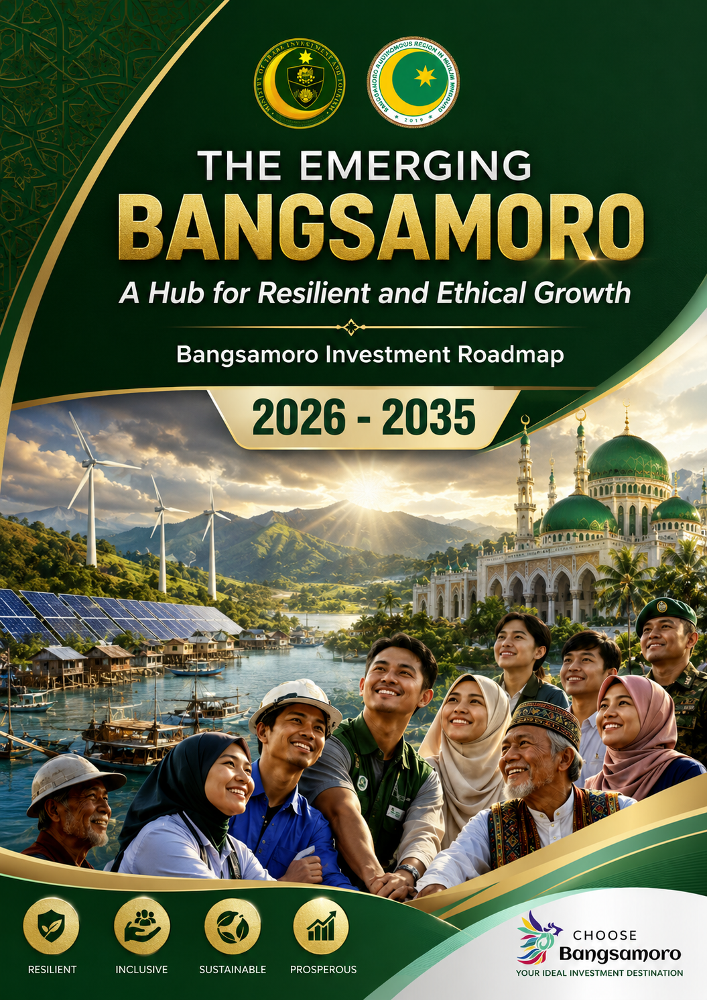
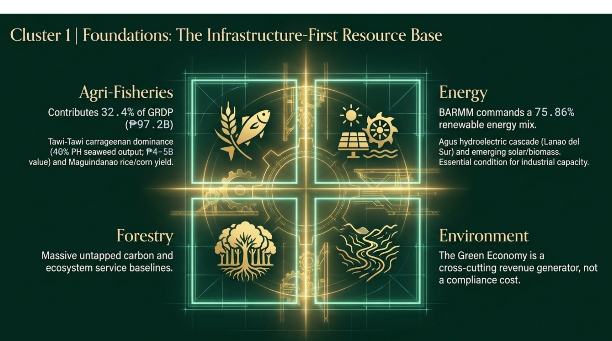
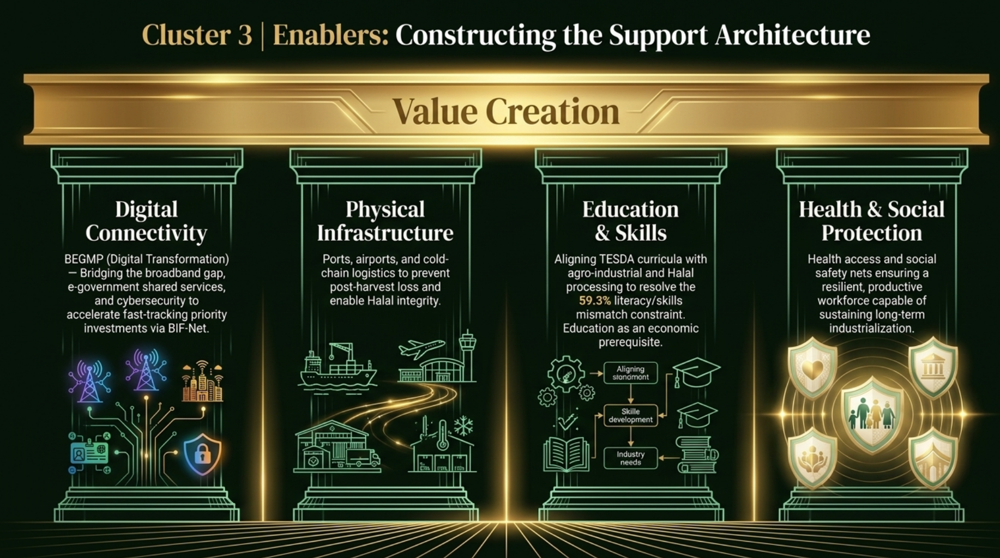

The Emerging Bangsamoro: A Hub for Resilient and Ethical Growth
Bangsamoro Investment Roadmap Development (BIRD) 2026–2035
© 2026 Bureau of Investments, Ministry of Trade, Investments and Tourism (BOI-MTIT), BARMM.
This publication is a strategic planning and investment coordination document. It may be reproduced or adapted for non-commercial purposes under the Creative Commons Attribution-NonCommercial-ShareAlike 4.0 International licence, with attribution and identification of any changes. Its use as an official policy, budget, investment approval or regulatory instrument remains subject to the competent authority and applicable law.
Suggested citation
Silva, A. M. (2026). The emerging Bangsamoro: A hub for resilient and ethical growth. Bangsamoro Investment Roadmap Development 2026–2035. Bureau of Investments, Ministry of Trade, Investments and Tourism, BARMM.
ISBN to be assigned. Status: strategic planning draft for institutional review and validation.
Acknowledgements
The Bangsamoro Investment Roadmap Development (BIRD) 2026–2035 is the product of a planning process that brings together economic analysis, investment facilitation, systems thinking, stakeholder perspectives, policy and institutional review, and performance-management design.
The roadmap acknowledges the contributions of the Bangsamoro Government and its ministries, offices and agencies; local government units; development partners; business and investment stakeholders; academic and training institutions; civil society and community organisations; and the practitioners whose information, experience and perspectives strengthen the investment ecosystem.
Particular recognition is due to the institutions responsible for official statistics, economic planning, investment facilitation, infrastructure, trade, agriculture, environment, finance, human capital, tourism and local development. Their administrative and statistical systems are the foundation on which analytical findings become implementable programmes, activities and projects.
The roadmap also draws on the participants of the five structured workshops held in early 2026 and on the BIRD Validation Survey, fielded from 3 to 20 August 2026. All 76 published survey responses carry final consent under the Data Privacy Act of 2012. These responses are used as validation and diagnostic evidence, not as a substitute for official administrative baselines or statutory targets.
The roadmap is designed to be strengthened through continued institutional validation, implementation learning and evidence-based recalibration.
Messages
Messages
Messages
Table of Contents
Preliminary pages
Chapters
Table of Contents
List of Abbreviations
| Abbreviation | Full term |
|---|---|
| ADB | Asian Development Bank |
| ASEAN | Association of Southeast Asian Nations |
| BARMM | Bangsamoro Autonomous Region in Muslim Mindanao |
| BBOI | Bangsamoro Board of Investments |
| BEGMP | Bangsamoro e-Governance Master Plan |
| BEIE | Bangsamoro Economic and Investment Ecosystem |
| BEZA | Bangsamoro Economic Zone Authority |
| BHB | Bangsamoro Halal Board |
| BHIDP | Bangsamoro Halal Industry Development Plan |
| BIF-Net | Bangsamoro Investment Facilitation Network |
| BIMP-EAGA | Brunei Darussalam–Indonesia–Malaysia–Philippines East ASEAN Growth Area |
| BIRD | Bangsamoro Investment Roadmap Development |
| BMOA | Bangsamoro ministries, offices and agencies |
| BMSMED | Bangsamoro MSME Development Plan |
| BOI-MTIT | Bureau of Investments, Ministry of Trade, Investments and Tourism |
| BPDA | Bangsamoro Planning and Development Authority |
| BPLS | Business Permits and Licensing System |
| BSC | Balanced Scorecard |
| BSEMP | Bangsamoro Sustainable Energy Master Plan |
| BSP | Bangko Sentral ng Pilipinas |
| BTDP | Bangsamoro Tourism Development Plan |
| CARD | Center for Agriculture and Rural Development (CARD Islamic Bank) |
| CLP / LP | Critical Leverage Point (LP1 to LP5) |
| CMO / OCM | Office of the Chief Minister |
| CREATE MORE | Corporate Recovery and Tax Incentives for Enterprises to Maximize Opportunities for Reinvigorating the Economy Act (RA 12066) |
| DICT | Department of Information and Communications Technology |
| DOE | Department of Energy |
| DPWH | Department of Public Works and Highways |
List of Abbreviations
| Abbreviation | Full term |
|---|---|
| DRR | Disaster risk reduction |
| ESG | Environmental, social and governance |
| F1–F6 | Financial perspective objectives |
| FDI | Foreign direct investment |
| FLEMMS | Functional Literacy, Education and Mass Media Survey |
| GCC | Gulf Cooperation Council |
| GEMS | Green Economy Monetization Strategy |
| GRDP | Gross regional domestic product |
| HEDS | Halal Economy Dominance Strategy |
| IEDS | Integrated Ecosystem Development Strategy |
| IFES | Infrastructure-First Enabling Strategy |
| IPs | Indigenous Peoples |
| IsDB | Islamic Development Bank |
| JMC | Joint Memorandum Circular |
| KPI | Key performance indicator |
| L1–L7 | Learning and Growth perspective objectives |
| LGU | Local government unit |
| MAFAR | Ministry of Agriculture, Fisheries and Agrarian Reform |
| MBHTE | Ministry of Basic, Higher and Technical Education |
| MEL | Monitoring, evaluation and learning |
| MENRE | Ministry of Environment, Natural Resources and Energy |
| MFBM | Ministry of Finance and Budget Management |
| MICT | Ministry of Information and Communications Technology |
| MILG | Ministry of the Interior and Local Government |
| MOLE | Ministry of Labor and Employment |
| MPW | Ministry of Public Works |
| MRA | Mutual recognition agreement |
| MSME | Micro, small and medium enterprise |
List of Abbreviations
| Abbreviation | Full term |
|---|---|
| MTIT | Ministry of Trade, Investments and Tourism |
| MYIP | Multi-year investment plan |
| NEDA | National Economic and Development Authority (reorganised in 2025 as the Department of Economy, Planning, and Development) |
| NGO | Non-governmental organisation |
| ODA | Official development assistance |
| OIC | Organisation of Islamic Cooperation |
| P1–P7 | Internal Process perspective objectives |
| PAP | Programme, activity and project |
| PDP | Philippine Development Plan |
| PES | Payment for ecosystem services |
| PIFO | Provincial Investment Facilitation Office |
| PPP | Public–private partnership |
| PSA | Philippine Statistics Authority |
| QA | Quality assurance |
| REDD+ | Reducing Emissions from Deforestation and Forest Degradation |
| S1–S7 | Stakeholder perspective objectives |
| SDG | Sustainable Development Goal |
| SGA | Special Geographic Area |
| SIPP | Strategic Investment Priority Plan |
| SMIIC | Standards and Metrology Institute for the Islamic Countries |
| SPDA | Southern Philippines Development Authority |
| TESDA | Technical Education and Skills Development Authority |
| TOWS | Threats, opportunities, weaknesses and strengths matrix |
| TVET | Technical and vocational education and training |
| UAE | United Arab Emirates |
| ZBIP | Zamboanga–Basilan Interconnection Project |
Glossary of Terms
Glossary of Terms
Executive Summary
From strategic diagnosis to investment execution
The Bangsamoro Investment Roadmap Development (BIRD) 2026–2035 sets out an evidence-informed strategic and implementation architecture for BARMM's investment ecosystem. Chapters 1 and 2 establish the context and diagnosis; Chapter 3 sets the strategy and its leverage points; Chapter 4 calibrates the measures; Chapter 5 turns the strategy map into an investment roadmap; Chapter 6 sequences implementation and the annual investment plan; and Chapter 7 sets out the policy conditions for continuity.
The central proposition: investment performance depends not only on the volume of capital mobilised but on the quality of the ecosystem that converts capital into productive capacity, jobs, market access, resilience and public value.
1. Purpose, scope and direction
Chapter 1 sets the scope, rationale, principles, regulatory anchors, analytical frameworks and methodology. The roadmap covers BARMM as now constituted: five provinces (Lanao del Sur, Maguindanao del Norte, Maguindanao del Sur, Basilan excluding Isabela City, and Tawi-Tawi), the Special Geographic Area and Cotabato City, home to about 4.54 million people. Sulu has been outside BARMM since the Supreme Court ruling of 9 September 2024.
Two facts frame the decade. The economy grew 2.7 percent in 2024 while the population grew about 3.43 percent a year, so output per person fell; every target in the roadmap must clear that demographic hurdle before it improves living standards. And governance is in transition: the first Bangsamoro Parliament was elected on 14 September 2026 with no majority bloc, and it convenes and elects the Chief Minister on 30 October 2026. The roadmap is written for that incoming government.
Executive Summary
1. Purpose, scope and direction (continued)
The analytical architecture combines the Bangsamoro Economic and Investment Ecosystem (BEIE) with systems thinking, TOWS strategy formulation, leverage-point analysis, KPI benchmarking and the Balanced Scorecard, creating one continuous logic from context to diagnosis, strategy, measurement, execution and policy learning. The roadmap is a decision and coordination framework; it does not replace feasibility studies, statutory approvals, appropriations or agency mandates.
2. Diagnosis: the investment economy is a system
Chapter 2 organises BARMM's investment economy into five interdependent clusters: Foundations (agriculture, fisheries, forestry, energy and environmental assets); Transformers (processing, manufacturing, logistics and halal value addition); Enablers (infrastructure, digital systems, social services and human capital); Connectors (tourism, trade, exports and BIMP-EAGA integration); and Financiers (Islamic banking, waqf, takaful, microfinance and investment capital).
The integrated SWOT and systems diagnostics show that the main challenge is not a lack of individual assets or opportunities. It is the interaction among infrastructure constraints, market access, standards, coordination, skills, finance, environmental risk and investor confidence. Archetypes such as Limits to Growth, Fixes that Fail, Growth and Underinvestment, Shifting the Burden and Tragedy of the Commons explain why isolated interventions produce temporary gains without lasting improvement.
The validation evidence makes the point in numbers. Stakeholders rated institutional readiness lowest of three measures in all six clusters. Because value passes through the clusters in sequence, readiness compounds: averaged, the clusters look about 69 percent ready; multiplied through the chain, system throughput is about 16 percent, and 11.5 percent once governance is applied. Enablers is the binding cluster.
Executive Summary
3. Strategy: four options, one integrated architecture
Chapter 3 turns diagnosis into choice. It formulates four options, the Halal Economy Dominance Strategy (HEDS), Green Economy Monetization Strategy (GEMS), Infrastructure-First Enabling Strategy (IFES) and Integrated Ecosystem Development Strategy (IEDS), and scores them on seven weighted criteria: economic impact, feasibility, identity alignment, systems leverage, risk and return, inclusivity, and sustainability. The IEDS ranks first with both the expert panel and survey respondents; of respondents who answered, 67.7 percent endorsed it outright and 30.8 percent in part.
The IEDS connects the options rather than reducing the roadmap to a single sector, and it works through five Critical Leverage Points: LP1 halal certification integrity; LP2 the infrastructure, energy and connectivity nexus; LP3 governance and investor confidence; LP4 the Islamic finance ecosystem; and LP5 green economy revenue.
4. Measurement: from indicators to governed performance
Chapter 4 sets six Pareto-style headline KPIs as a compact executive shortlist: investment approvals, GRDP, exports, halal-certified MSMEs, electrification and broadband. "Pareto-style" is a management designation; it does not claim that six indicators cause a fixed share of total impact.
| Headline KPI | Baseline | 2028 | 2030 | 2035 |
|---|---|---|---|---|
| Annual investment approvals | ₱5.1B (Jan–Apr 2026) | ₱6.5B | ₱10B | ₱15B+ |
| BARMM GRDP | ₱299.5B (2024) | ₱385B | ₱440B | ₱550B+ |
| Total exports | <₱10B | ₱20B | ₱26B | ₱40B+ |
| Halal-certified MSMEs | ~500 | 1,500 | 3,000 | 5,000+ |
| Household electrification | ~39% | 65% | 75% | 90% (100% by 2040) |
| Broadband connectivity | <30% | 58% | 70% | 85% |
Notes: the approvals baseline covers four months and should be replaced by the full-year 2026 total once closed. Electrification is measured by household connections (about 39 percent per the National Electrification Administration), not by barangay energisation; the 75.86 percent figure in the Sustainable Energy Master Plan is a renewable share of generation, not an access rate.
Chapter 4 also sets calibration rules. Baselines are verified before adoption; target changes must be traceable; and every variance is classified as a data-quality, implementation or external-shock variance. The framework is built for adaptive management, not static reporting.
Executive Summary
5. Balanced Scorecard: from strategy map to investment roadmap
Chapter 5 bridges strategy and implementation. The Balanced Scorecard specifies how capabilities enable processes, processes create stakeholder value, and stakeholder outcomes contribute to financial and economic results, in the causal order Learning and Growth, Internal Process, Stakeholder, Financial. The three phases in Chapter 6 are not the roadmap itself; they are the framework for sequencing delivery by readiness, dependency and investment capacity.
| Perspective | Objective | Measure | 2030 | 2035 |
|---|---|---|---|---|
| Financial | F1 Increase investment approvals | Annual approvals | ₱10B p.a. | ₱15B+ p.a. |
| F2 Grow the regional economy | BARMM GRDP | ₱440B | ₱550B+ | |
| F3 Expand export revenue | Annual exports | ₱26B | ₱40B+ | |
| Stakeholder | S1 Enhance investor satisfaction | Investor satisfaction score | 7.0/10 | 8.0+/10 |
| S3 Empower MSMEs through certification | Halal-certified MSMEs | 3,000 | 5,000+ | |
| S4 Reduce poverty | Poverty incidence | <25% | <20% | |
| Internal Process | P1 Streamline investment facilitation | Business registration time | 2 days | 1 day, digital |
| P3 Strengthen halal certification | BHB OIC/SMIIC accreditation | Provisional alignment | Full accreditation and MRA | |
| P4 Accelerate infrastructure delivery | Infrastructure budget execution | 88% | >90% | |
| Learning and Growth | L1 Build halal expertise | Certification officers trained | 70 | 100+ |
| L3 Strengthen facilitation capacity | Agency staff certified or trained | 70% | 80% | |
| L4 Foster digital innovation | Digital services launched through BEGMP | 15 | 20+ |
Stakeholders endorsed the frame: each of the four perspectives scored between 4.12 and 4.32 of 5 in the Validation Survey, a band too close to rank. Budget execution matters as much as any target. At the current execution rate of about 80 percent, ₱28 billion of a ₱140 billion programme would not convert to output, so delivery capacity is monitored alongside results.
Executive Summary
6. Implementation: three phases, not three roadmaps
Chapter 6 converts the strategy and scorecard into programmes, activities and projects, governance arrangements, a one-year action plan and MEL processes. The three phases are the implementation framework for the roadmap.
The ₱120–160 billion envelope is public catalytic capital, blended from the Block Grant (35 percent), national programmes (25 percent), development and climate finance (30 percent) and private, PPP and Islamic finance (10 percent). At a credible capital-output ratio of 3.5 to 4.0, the growth path needs ₱1.55–1.77 trillion of total investment, so each public peso must attract 11 to 14 pesos more. Phase 2 and 3 releases depend on delivery in the preceding phase, with a 20 percent contingency reserve. All amounts remain subject to project readiness, feasibility, safeguards, financing, appropriations and approvals.
The first-year action plan programmes ₱2.063 billion. The Zamboanga–Basilan Interconnection Project accounts for ₱2.0 billion of that (97 percent); the nine institutional actions together cost ₱63 million and carry most of the delivery risk because they depend on decisions by the incoming government.
Executive Summary
7. BIF-Net and execution governance
Chapters 5 and 6 establish BIF-Net as the investment facilitation and coordination layer. It does not replace ministries, offices, local governments or statutory mandates; its purpose is shared visibility of opportunities, investor issues, PAP status, KPI performance and cross-agency dependencies. Because the draft Bangsamoro Investment Code also proposes a council with similar powers, the two instruments should be harmonised so that a single council holds Green Lane authority, with BIF-Net as its operating network.
The execution model combines role-based information views, KPI monitoring, action tracking and adaptive-management protocols. The data architecture keeps survey-derived validation evidence, official administrative data and management targets separate, so that analytical estimates are never silently converted into official baselines.
8. Policy recommendations and the way forward
Chapter 7 converts the roadmap into recommendations in four areas:
- Institutional enablement: strengthen the policy, standards, governance and coordination conditions for investment facilitation, halal development, green economy activation and investor confidence, beginning with enactment of the Bangsamoro Investment Code and Forestry Code.
- Territorial delivery: align infrastructure, value chains, human capital and facilitation with provincial and geographic differences rather than applying one model everywhere, with explicit attention to Maguindanao del Sur, the Special Geographic Area and the island provinces.
- Investment mobilisation: develop credible, feasible and market-oriented opportunities supported by aftercare, information, standards, infrastructure and financing pathways.
- Governance and learning: maintain target traceability, evidence quality, adaptive review and cross-agency accountability through BIF-Net and the MEL architecture.
Across these areas the roadmap treats ethical governance, resilience, inclusion and peace as operating conditions for investment, not as parallel themes detached from economic performance.
Executive Summary
9. The investment logic in one chain
Each chapter plays one part in this chain: Chapter 1 sets the frame; Chapter 2 explains the system; Chapter 3 defines the strategic choice and its leverage; Chapter 4 defines measurement; Chapter 5 turns the strategy map into the investment roadmap; Chapter 6 sequences and manages implementation; and Chapter 7 sets the policy conditions for continuity.
10. Conclusion
The BIRD 2026–2035 is designed to move BARMM from fragmented investment interventions to a coordinated investment ecosystem. Its emphasis is not simply on attracting more capital but on improving the conditions under which capital becomes productive, inclusive, resilient and sustainable economic activity. Success will depend on institutional ownership, investment readiness, credible implementation, reliable data, transparent governance and continuous learning, while the competent institutions retain their authority to validate baselines, approve projects, allocate budgets, regulate activities and revise priorities as evidence changes.
The roadmap provides the architecture; implementation, institutional learning and the Bangsamoro's collective choices will determine the outcomes.
Continue reading
Chapter 1: Introduction, Background, Regulatory Anchors and Methodology
Introduction — Background, Purpose, Anchors, and Methodology
A. Background and Rationale: From Post-Conflict Recovery to Investment Destination
The Bangsamoro Autonomous Region in Muslim Mindanao (BARMM) was formally established on February 26, 2019, following the ratification of the Bangsamoro Organic Law (Republic Act No. 11054) and the historic plebiscite that affirmed the region's autonomous status (Republic Act No. 11054, 2018). The Bangsamoro Autonomous Region represents not merely an administrative reorganization but a transformative political settlement — one that seeks to convert decades of armed conflict into a durable framework for self-governance, cultural affirmation, and economic self-determination.
The region enters the roadmap period with measurable evidence of both progress and continuing development constraints. BARMM's poverty incidence among families declined from 55.9 percent in the first semester of 2018 to 34.8 percent in the first semester of 2023, a statistically significant decrease reported by the Philippine Statistics Authority (PSA, 2023). The improvement is substantial, but poverty remains a central development constraint. Investment activity has also expanded, while the evidence base continues to require careful distinction between approved investments, realized capital formation and broader investor sentiment. BIRD therefore treats investment confidence as an outcome to be measured through administrative and market indicators rather than inferred from any single approval figure.
BARMM's 2024 regional accounts provide an important starting point for the roadmap. GRDP grew by 2.7 percent in 2024, following 4.3 percent growth in 2023. Services accounted for 42.0 percent of 2024 GRDP, Agriculture, Forestry and Fishing for 32.4 percent, and Industry for 25.6 percent (PSA–RSSO BARMM, 2025). The structure points to an economy in which value addition, infrastructure, market access, human capital and finance need to be considered together rather than as isolated sector programs.
Provincial economic profiles reveal diverse growth trajectories. Lanao del Sur emerged as BARMM's fastest-growing province with 5.02 percent growth in 2023 and 4.0 percent in 2024, driven by the SPDA Agro-Industrial Development Program and anchor investments like DoleFil's ₱306 million pineapple facility (MFBM, 2025). Maguindanao del Norte posted the fastest growth at 4.1 percent in 2024, reflecting its services-dominated economy (53% of GDP) and growing industrial capacity. Basilan achieved a historic milestone with its declaration as Abu Sayyaf Group (ASG)-free in June 2024, creating favorable conditions for investment normalization (Philippine Information Agency [PIA], 2025).
The Bangsamoro Investment Roadmap Development (BIRD) 2026–2035 is MTIT's ten-year strategic framework for investment-led, inclusive and sustainable economic transformation. It is designed around the region's productive assets and institutional context, including agriculture and fisheries, halal identity and enterprise potential, strategic location within BIMP-EAGA, renewable-energy resources, cultural assets, human capital and emerging financial-market opportunities. The roadmap does not assume that comparative advantage automatically becomes investment advantage; it focuses on the enabling conditions, linkages and execution capabilities required to convert assets into investable opportunities and broad-based economic outcomes.

How to read this figure
The clusters form a value chain: Foundations supply Transformers, which rely on Enablers and reach markets through Connectors, funded by Financiers. The cross-cutting operating systems govern how well every cluster performs.
B. Scope, Coverage, and Temporal Horizon
B.1 Geographic Scope
This roadmap covers BARMM as now constituted: five provinces (Lanao del Sur, Maguindanao del Norte, Maguindanao del Sur, Basilan excluding Isabela City, and Tawi-Tawi), the Special Geographic Area (SGA) and Cotabato City. Sulu has been outside BARMM since the Supreme Court ruling of 9 September 2024, and Isabela City is not part of the region (Republic Act No. 11054, 2018). The roadmap provides in-depth economic profiles for each province, applying the Bangsamoro Economic and Investment Ecosystem (BEIE) Framework to analyze sectoral interlinkages and identify priority investment corridors. Cotabato City, as the administrative capital and principal urban-commercial hub of BARMM, is treated as a distinct urban node within the geographic analysis.
B.2 Sectoral Coverage
Six priority investment sectors are addressed in depth, organized through the BEIE Framework's five functional clusters:
| Priority Sector | BEIE Cluster | Key Investment Areas |
|---|---|---|
| Agro-Industry and Halal Food Value Chains | Foundations → Transformers | Rice, corn, coconut, rubber, seaweed processing; halal certification; cold chain |
| Tourism and Cultural Economy | Connectors | Halal tourism, cultural heritage sites, eco-tourism, Lake Lanao |
| Energy and Utilities | Enablers / Foundations | Renewable energy (75.86% mix), ZBIP, solar mini-grids, electrification |
| Infrastructure, Logistics, and Connectivity | Enablers | Farm-to-market roads, digital broadband, BIMP-EAGA corridors |
| Services (Health, Education, Financial, Digital) | Enablers / Financiers | Human capital, Islamic finance, e-governance, digital literacy |
| Green Economy and Environmental Markets | Foundations / Cross-Cutting | Carbon credits, PES, REDD+, sustainable forestry, eco-tourism fees |
B.3 Temporal Scope and Three-Phase Architecture
The temporal scope spans 2026–2035 and is organized into three implementation phases aligned with investment readiness, system dependencies and the roadmap's sequencing logic. The indicative investment envelope is ₱120–160 billion across the decade. IEDS provides the organizing ecosystem-development strategy used to connect the strategic options and sequence implementation; the envelope remains subject to project readiness, financing availability, safeguards, feasibility and annual budget decisions.

How to read this figure
Read left to right as time. Each phase builds the conditions for the next: Enablers lead, Transformers scale, Connectors globalise.
| Phase | Period | Budget | Strategic Focus | Key Deliverables |
|---|---|---|---|---|
| Phase 1: Foundation Building | 2026–2028 | ₱35–45B | Governance + Enablers | Enact Forestry Code & JMC 2026-01; operationalize BHB with OIC/SMIIC alignment; launch 1-day digital registration; commence ZBIP; deploy farm-to-market roads; establish BIF-Net and its coordination protocols |
| Phase 2: Acceleration | 2029–2031 | ₱50–65B | Transformers + Green Economy | Operationalize Bangsamoro Halal Park; register REDD+ and activate PES; expand Islamic banking to all provincial capitals; deploy cold chain/logistics hubs; scale TVET-industry alignment; achieve 70% literacy |
| Phase 3: Consolidation & Global Integration | 2032–2035 | ₱35–50B | Connectors + Maturity | Secure OIC endorsement & SMIIC MRA; achieve ₱500M+ annual green revenue; full BIMP-EAGA integration; reach ₱550B GRDP; poverty <20%; 100% electrification & 85% broadband |
C. Purpose of the Investment Roadmap Development
The BIRD 2026–2035 translates the investment-promotion mandate of the Bangsamoro Government into a coherent, evidence-informed roadmap. It is intended to connect policy, investment facilitation, sector development, infrastructure, finance, market access and implementation governance so that individual projects contribute to a functioning investment ecosystem. The roadmap is therefore a decision and coordination framework, not a substitute for project feasibility studies, statutory approvals, annual appropriations or agency mandates.
Specifically, the BIRD 2026–2035 serves five interrelated purposes:
1. Integrated Analytical Framework. Provide a comprehensive, research-based, and policy-oriented investment framework that integrates provincial economic insights, global investment trends, workshop outputs, and multi-sector strategic analysis. The BEIE Framework and Strat Planner Pro Architecture ensure that analysis is ecosystem-based rather than siloed.
2. Evidence-Based Strategic Guidance. Guide policymakers, planners, and investors over the next decade through evidence-based strategies grounded in verified PSA-BARMM data, stakeholder consultation outputs, and international benchmarks (OIC/SMIIC, ESG, PDP 2023–2028).
3. High-Leverage Opportunity Identification. Apply integrated analytical frameworks (BEIE and Strat Planner Pro) to identify high-leverage investment opportunities — those interventions where small changes at the right leverage points produce large system-wide effects (Meadows, 1999).
4. Measurable Target Architecture. Establish measurable targets and monitoring mechanisms aligned with international standards (OIC/SMIIC, ESG), national development priorities (PDP 2023–2028), and Bangsamoro-specific objectives — operationalized through the Balanced Scorecard and MEL Dashboard.
5. Synchronized Ecosystem Development. Foster synchronized ecosystem development rather than scattered, siloed interventions. The TOWS matrix and systems archetype analysis ensure that strategies are not merely additive but multiplicative — activating reinforcing loops across BEIE clusters.
D. Guiding Principles
The BIRD 2026–2035 is grounded in six guiding principles that shape analysis, strategy formulation, implementation and learning. They are intended to function as operating rules for investment facilitation and public decision-making, with measurable indicators where appropriate and with targets subject to baseline verification and periodic calibration.
| Principle | Operational Definition | Application in BIRD | KPI Target (2035) |
|---|---|---|---|
| Moral Governance | Transparency, accountability, Islamic ethics as the operating system | Public disclosure; investor ombudsman; anti-corruption safeguards | 100% procurement disclosure |
| Ecosystem Thinking | Interconnected clusters, not isolated silos | BEIE Framework; inter-cluster linkage mapping | All projects cluster-tagged |
| Cultural Authenticity | Halal, Islamic finance, heritage as competitive advantages | BHB certification; Islamic finance expansion; cultural tourism | 5,000+ halal MSMEs |
| Environmental Stewardship | Green economy as opportunity, not compliance cost | Forestry Code; REDD+; PES; carbon markets | ₱500M+ green revenue |
| Inclusivity | Equitable benefit-sharing across all segments | MSME programs; IDP/women/youth focus; anchor linkages | <20% poverty; 60% MSME share |
| Data-Driven | Verified data + stakeholder consultation | PSA integration; workshop synthesis; KPI benchmarking | Quarterly dashboard updates |
Regulatory and Policy Anchors
The BIRD 2026–2035 operates within a comprehensive legal and policy framework that provides the architectural foundation for investment facilitation, sectoral development, and regional integration. These anchors ensure alignment with national priorities, international standards, and the unique autonomous governance structure of BARMM. The regulatory architecture spans three tiers: national legislation, BARMM-specific legal instruments, and regional/international frameworks.
E.1 National Legislation
Bangsamoro Organic Law (Republic Act No. 11054, 2018). The BOL establishes BARMM's autonomous governance structure and investment facilitation mandate, providing the constitutional foundation for the region's economic self-determination. The law grants BARMM exclusive powers over trade, investment promotion, and economic development within its territorial jurisdiction — a unique constitutional status that enables region-specific regulatory frameworks for halal certification, Islamic finance, and ecozone development.
CREATE MORE Act (Republic Act No. 12066). The Corporate Recovery and Tax Incentives for Enterprises to Maximize Opportunities for Reinvigorating the Economy (CREATE MORE) Act provides the national tax incentive framework applicable to BARMM investments, ensuring competitiveness with other Philippine regions while respecting BARMM's autonomous fiscal powers. The act's enhanced deductions for research and development, training, and infrastructure directly support BIRD's Enablers cluster objectives.
Republic Act No. 11439 (Islamic Banking Law). This law enables Shariah-compliant financial services expansion in BARMM, providing the legal architecture for Islamic banking, takaful (Islamic insurance), and other Islamic finance instruments aligned with the region's Muslim-majority population and cultural identity. Operationalization requires BARMM-specific regulations and institutional capacity building.
Republic Act No. 11550 (Division of Maguindanao). This act created Maguindanao del Norte and Maguindanao del Sur from the former undivided Maguindanao province, enhancing administrative capacity for targeted development and enabling province-specific investment strategies.
E.2 BARMM-Specific Legal and Policy Instruments
2nd Bangsamoro Development Plan (BDP) 2023–2028. The BDP provides medium-term development priorities and sectoral targets, serving as the primary planning document that the BIRD operationalizes through investment facilitation strategies (Bangsamoro Planning and Development Authority [BPDA], 2023). The BDP's four strategic priorities — governance and institutional development, economic development, social development, and environmental management — align directly with the BEIE Framework's cluster architecture.
BARMM 2022 Strategic Investment Priorities Plan (SIPP). The SIPP operationalizes the investment promotion mandate, identifying priority sectors and providing the institutional framework for investment facilitation. The SIPP's sectoral priorities (agro-industry, tourism, energy, infrastructure, services, green economy) form the basis for the BEIE cluster mapping in Chapter 2.
Bangsamoro Halal Industry Development Plan (BHIDP) 2025–2030. The BHIDP outlines halal ecosystem development strategy, certification infrastructure, and export market linkages, positioning BARMM to capture a share of the USD 2.3 trillion global halal market (MTIT-BARMM, 2025). The BHIDP is the primary operational plan for the Transformers cluster's halal processing investments.
Bangsamoro Sustainable Energy Master Plan (BSEMP). The BSEMP sets renewable energy targets (75.86% by 2028) and investment pathways, guiding energy sector investments and grid development (MENRE-BARMM, 2024). The BSEMP is the foundational plan for the Enablers cluster's energy infrastructure investments.
Bangsamoro Forestry Code (Pending Enactment). Currently before the ENRE Committee under the chairpersonship of MP Tawakkal Midtimbang, the Forestry Code will establish the legal architecture for sustainable resource utilization, value-added forest products processing, and access to emerging environmental markets including REDD+ and Payment for Ecosystem Services (PES).
Draft MENRE-MILG Joint Memorandum Circular (JMC) No. 2026-01. For signature, this JMC establishes frameworks for Carbon Credit Programs, PES, and Eco-tourism User Fees as concrete revenue mechanisms for local government units and communities — operationalizing the green economy recommendations in Chapter 5.
Bangsamoro Investment Code (BIC). The BIC provides the legal architecture for investment incentives, investor protection, and facilitation mechanisms within BARMM's autonomous jurisdiction. The BIC's harmonization with CREATE MORE ensures that BARMM investors benefit from both national and regional incentive frameworks.
E.3 Regional and International Frameworks
BIMP-EAGA EGL Sub-Committee Strategic Plan 2025–2028. The Brunei Darussalam-Indonesia-Malaysia-Philippines East ASEAN Growth Area (BIMP-EAGA) Environment, Green Economy, and Land Use (EGL) Strategic Plan provides a regional framework for environmental economy integration and cross-border trade, positioning BARMM as a key player in the growth area (BIMP-EAGA, 2024). Tawi-Tawi's 150-km proximity to Sabah and the SGA's position as the Mindanao Central Corridor create natural BIMP-EAGA trade advantages.
Philippine Development Plan (PDP) 2023–2028. The PDP establishes national development priorities and KPIs for alignment and monitoring, ensuring BARMM's contribution to national development goals while respecting its autonomous status (National Economic and Development Authority [NEDA], 2023).
OIC/SMIIC Standards. The Standards and Metrology Institute for Islamic Countries (SMIIC) provides the primary international framework for halal industry standardization, guiding BARMM's halal certification infrastructure development and international market access strategies (SMIIC, 2021). OIC observer status creates a unique alignment window for BARMM's halal ecosystem.
ASEAN Economic Community Blueprint 2025. The AEC Blueprint provides the regional integration framework that BARMM leverages through BIMP-EAGA participation, facilitating cross-border trade, investment, and labor mobility.
United Nations Sustainable Development Goals (SDGs). The SDGs provide the global development framework that informs BARMM's inclusive growth strategies, particularly Goals 1 (No Poverty), 8 (Decent Work and Economic Growth), 9 (Industry, Innovation and Infrastructure), and 13 (Climate Action).
| Framework | Type | Relevance to BIRD | Status |
|---|---|---|---|
| Bangsamoro Organic Law (RA 11054, 2018) | National | Autonomous governance and investment mandate | Enacted |
| CREATE MORE Act (RA 12066) | National | Tax incentive framework for BARMM | Enacted |
| Islamic Banking Law (RA 11439) | National | Shariah-compliant finance architecture | Enacted; operationalizing |
| Division of Maguindanao (RA 11550) | National | Enhanced provincial capacity | Enacted |
| 2nd BDP 2023–2028 | BARMM | Medium-term development priorities | Approved |
| BHIDP 2025–2030 | BARMM | Halal ecosystem and export strategy | Approved |
| BSEMP | BARMM | Renewable energy targets (75.86%) | Approved |
| Bangsamoro Forestry Code | BARMM | Sustainable resource + carbon markets | Pending enactment |
| MENRE-MILG JMC 2026-01 | BARMM | Carbon credits, PES, eco-tourism fees | For signature |
| Bangsamoro Investment Code (BIC) | BARMM | Incentives and facilitation mechanisms | Enacted |
| BIMP-EAGA EGL Plan 2025–2028 | Regional | Cross-border trade and green economy | Regional agreement |
| PDP 2023–2028 | National | National development alignment | National plan |
| OIC/SMIIC Standards | International | Halal certification internationalization | International standard |
| AEC Blueprint 2025 | Regional | Regional integration framework | Regional agreement |
| UN SDGs | Global | Inclusive and sustainable growth | Global framework |
Analytical Frameworks and Methodology
The BIRD 2026–2035 employs two complementary analytical frameworks — the Bangsamoro Economic and Investment Ecosystem (BEIE) Framework and the Strat Planner Pro Architecture — to ensure methodological rigor, systems-level analysis, and actionable strategic outputs. This section introduces both frameworks, their theoretical foundations, operational applications, and the five-step methodology that integrates them into a coherent strategy formulation process.
F.1 The Bangsamoro Economic and Investment Ecosystem (BEIE) Framework
The Bangsamoro Economic and Investment Ecosystem (BEIE) Framework, illustrated in Figure 1-1, reframes investment analysis away from isolated sectoral silos toward an integrated view of how economic clusters interact and reinforce each other. The framework is grounded in systems-based economic theory and organizes BARMM's economic landscape into five functional clusters, anchored by Moral Governance and driven by four cross-cutting enablers: Tourism & Culture, Peace & Security, Human Capital, and Environmental Sustainability (Silva, 2026).
The BEIE Framework's core insight — that sectors in BARMM are deeply interconnected and treating them as isolated leads to inefficiencies and missed opportunities — is not merely an analytical observation; it is a governance imperative. The framework's five functional clusters are operationalized as follows:


How to read this figure
The clusters form a value chain: Foundations supply Transformers, which rely on Enablers and reach markets through Connectors, funded by Financiers. The cross-cutting operating systems govern how well every cluster performs.


How to read this figure
The clusters form a value chain: Foundations supply Transformers, which rely on Enablers and reach markets through Connectors, funded by Financiers. The cross-cutting operating systems govern how well every cluster performs.

How to read this figure
The clusters form a value chain: Foundations supply Transformers, which rely on Enablers and reach markets through Connectors, funded by Financiers. The cross-cutting operating systems govern how well every cluster performs.
| Cluster | Key Components | Key Actors | Strategic Function |
|---|---|---|---|
| Cross-Cutting OS | Moral Governance, Resilience, Inclusivity, Peace | Bangsamoro Parliament, OCM, MILG, PNP-BARMM, BPRO, civil society, development partners | Determines whether all clusters function effectively, equitably, and sustainably |
| C1: Foundations | Agriculture, fisheries, forestry, energy, environment | MAFAR, MENRE, SPDA, LGUs, producer organizations | Resource base providing sustainable inputs to all other clusters |
| C2: Transformers | Industry, manufacturing, logistics, halal processing | MTIT, BOI-MTIT, BEZA, BHB, anchor investors (DoleFil) | Value-adding transformation of Foundation resources |
| C3: Enablers | Infrastructure, health, education, human capital | MPW, MinEdu, MOH, TESDA, MICT | Physical, digital, and human infrastructure making value creation viable |
| C4: Connectors | Tourism, digital connectivity, trade, BIMP-EAGA | MTIT-BTI, MICT, BBOI, BOI, BIMP-EAGA Secretariat | Market access and regional/global integration mechanisms |
| C5: Financiers | Islamic banking, takaful, waqf, microfinance | Al-Amanah, CARD Islamic Bank, MFBM, IsDB | Capital access aligned with Shariah principles |
F.2 The Strat Planner Pro Architecture
The Strat Planner Pro Architecture (Silva, 2026) provides the strategic planning and investment roadmapping architecture for the BIRD 2026–2035. It integrates five analytical layers — SWOT Analysis, Systems Thinking and Systems Mapping, Strategy Matrix, Metrics and KPI Benchmarking, and Balanced Scorecard — to ensure diagnostic rigor translates into measurable, time-bound implementation pathways.
How to read this figure
Each indicator links an objective to a measurable target. Read from baseline to target to see the size of the gap; the tier shows how the indicator is calibrated.
Tool 1: SWOT Analysis with Robust Mathematical Formulations. Comprehensive identification of internal strengths and weaknesses, external opportunities and threats, with stakeholder attribution and variable classification. The Strat Planner Pro framework employs distinct mathematical formulations for each SWOT quadrant to ensure quantitative rigor in strategic assessment (see Chapter 2 for the full diagnostic implementation).
• RIStrengths = (Impact × Likelihood) / 5 [Scale: 1–5, Resilience capacity]
• RIOpportunities = √(Impact × Likelihood) [Scale: 1–5, Resilience via exploitation]
• RiskWeaknesses = Impact × Likelihood [Scale: 1–25, Internal risk exposure]
• VIThreats = (Impact² × Likelihood) / 25 [Scale: 1–5, External vulnerability]
Tool 2: Systems Thinking and Systems Mapping. Systems thinking reframes investment analysis from isolated sectoral assessment to integrated ecosystem understanding. Causal Loop Diagrams (CLDs) map reinforcing (virtuous) and balancing (constraining) feedback loops, while Systems Archetype analysis identifies recurring patterns of behavior — "Limits to Growth," "Fixes that Fail," "Shifting the Burden," "Tragedy of the Commons" — that determine where intervention produces maximum leverage (see Chapter 2 for full implementation).
Tool 3: Strategy Matrix (TOWS). The TOWS matrix systematically matches internal strengths and weaknesses with external opportunities and threats to generate SO (Strengths–Opportunities), WO (Weaknesses–Opportunities), ST (Strengths–Threats), and WT (Weaknesses–Threats) strategies. Each strategic option is evaluated using the 7-Criteria Weighted Scoring Matrix (see Chapter 3).
How to read this figure
Each card is one strategic option. Compare what each assumes, what it prioritises and what it risks; the recommended strategy combines the strongest elements.
Tool 4: Metrics Benchmarking and KPI Calibration. All strategic objectives are translated into measurable Key Performance Indicators (KPIs) with baselines, targets, and data sources. KPIs are benchmarked against international standards (OIC/SMIIC, ESG, SDGs), national targets (PDP 2023–2028), and Bangsamoro-specific development objectives (see Chapter 4).
Tool 5: Balanced Scorecard (BSC). The BSC translates strategy into measurable outcomes across four perspectives — Financial, Stakeholder, Internal Process, and Learning & Growth — ensuring that capability investments are connected to economic and inclusion outcomes. The scorecard and causal architecture are developed in Chapter 5; implementation, annual programming and MEL are operationalized in Chapter 6; policy and institutional recommendations are carried into Chapter 7.
F.3 Five-Step Methodology for Strategy Formulation
The BIRD 2026–2035 applies a five-step methodology that integrates the BEIE Framework and Strat Planner Pro Architecture into a coherent strategy formulation process. Each step builds on the previous, ensuring that analysis is rigorous, stakeholder-informed, and systems-aware.
| Step | Analytical Activity | Core Tools | Primary Output | Chapter |
|---|---|---|---|---|
| 1. Context and Ecosystem Diagnosis | Establish the economic, institutional, demographic, environmental and spatial context and map the five BEIE functional clusters. | BEIE Framework; PEDSET/context analysis; provincial profiles; stakeholder evidence | Context diagnosis and BEIE cluster architecture | 2 |
| 2. Quantified SWOT and Systems Mapping | Quantify strengths, weaknesses, opportunities and threats; test causal relationships and recurring systems patterns; identify leverage points. | Canonical SWOT formulas; CLDs; systems archetypes; Meadows leverage points | Cluster diagnostics, systems maps and leverage-point implications | 2 |
| 3. Strategy Formulation and Sequencing | Translate diagnostics into TOWS strategies, strategic options and a phased investment sequence using a documented analytical decision aid. | TOWS; seven-criteria decision aid; BEIE dependencies; phasing logic | Strategic options, leverage architecture and roadmap sequencing | 3 |
| 4. Metrics and KPI Calibration | Define indicators, baselines, targets, data owners and variance rules; distinguish verified baselines from analytical or stakeholder-derived assumptions. | KPI framework; benchmark alignment; calibration governance; MEL logic | Calibrated KPI architecture and performance-monitoring rules | 4 |
| 5. Strategy Execution, Implementation and Policy Feedback | Translate strategy into causal objectives, implementation actions, annual investment programming and policy recommendations, with feedback into planning cycles. | BSC; causal pathways; PAP; MEL; BIF-Net coordination; policy review | Scorecard, implementation system, annual action plan and policy agenda | 5–7 |
F.4 Stakeholder Engagement and Workshop Process
The BIRD 2026–2035 was developed through an intensive multi-stakeholder consultation process spanning five structured workshops (January–March 2026), with 120+ participants from government agencies, private sector, civil society, academe, and development partners. The workshop methodology applied the BEIE Framework as the organizing structure, with each workshop addressing a specific analytical dimension.
| Workshop | Focus | Participants | Key Output |
|---|---|---|---|
| Workshop 1: Sectoral Challenges | Investment challenges by sector (AFF, energy, industry, tourism, finance) | 45 — BMOAs, LGUs, private sector | Ranked challenge matrix by sector and province; CLP linkage analysis |
| Workshop 2: Sectoral Opportunities | Investment opportunities by sector; BIMP-EAGA and GCC market linkages | 50 — investors, trade associations, MTIT | Opportunity register with RI scores; market access pathways |
| Workshop 3: Stakeholder Analysis | Actor mapping; influence-interest matrices; partnership frameworks | 35 — CSOs, academe, development partners | Stakeholder influence matrix; partnership priority map |
| Workshop 4: Industry SWOT | Quantified SWOT by industry cluster; provincial validation | 40 — sector representatives, BHB, BEZA | Industry-level SWOT with computed indices; provincial risk mapping |
| Workshop 5: Strategy Formulation | TOWS matrix; strategy options; 7-Criteria scoring; phasing | 30 — BOI-MTIT | Recommended IEDS; phased action plan; budget envelope |
The workshop outputs were synthesized through the Strat Planner Pro architecture and cross-checked, where applicable, against PSA-BARMM data, MTIT provincial outlooks and relevant national or international benchmarks. The resulting roadmap therefore combines formal statistics, stakeholder evidence and systems analysis. Where evidence is incomplete or subject to change, the roadmap identifies the issue for baseline verification, feasibility assessment or subsequent calibration rather than presenting the assumption as a confirmed fact.
URL: https://youtu.be/UCi2dVUmSbE
Duration: ~15 minutes
Description: Comprehensive overview of the BIRD 2026-2035 strategic vision, covering the BEIE Framework, five analytical tools, phased implementation architecture, and the call to action for investors and development partners.
URL: https://youtu.be/Li7lpyWWMcE
Duration: ~12 minutes
Description: Deep dive into the BEIE Framework context analysis methodology, explaining how the five functional clusters interact and how cross-cutting operating systems determine ecosystem performance.
Continue reading
Chapter 2: Deep Presencing Within and Across Contexts
References
Bangsamoro Board of Investments (BBOI). (2026). Investment approvals reach ₱5.1 billion in the first four months of 2026 [Press release]. BARMM Official Website. https://bangsamoro.gov.ph
Bangsamoro Planning and Development Authority (BPDA). (2023). 2nd Bangsamoro Development Plan 2023–2028. BARMM Government. https://knowledge.bpda.bangsamoro.gov.ph
BIMP-EAGA. (2024). EGL Sub-Committee Strategic Plan 2025–2028. ASEAN Secretariat.
Bureau of Investments–Ministry of Trade, Investments and Tourism (BOI-MTIT). (2026). Bangsamoro Investment Roadmap Development 2026–2035 [Unpublished manuscript]. BARMM Government.
Meadows, D. H. (1999). Leverage points: Places to intervene in a system. Hartland, VT: Sustainability Institute.
Ministry of Environment, Natural Resources and Energy–BARMM (MENRE-BARMM). (2024). Bangsamoro Sustainable Energy Master Plan. Cotabato City: MENRE-BARMM.
Ministry of Finance and Budget Management–BARMM (MFBM). (2025). BARMM Provincial Economic Trends: A provincial breakdown of growth and challenges (Economic Brief, Issue No. 1, Series of 2025). Cotabato City: MFBM.
Ministry of Trade, Investments and Tourism–BARMM (MTIT-BARMM). (2025). Bangsamoro Halal Industry Development Plan 2025–2030. Cotabato City: MTIT-BARMM.
National Economic and Development Authority (NEDA). (2023). Philippine Development Plan 2023–2028. Manila: NEDA.
Philippine Information Agency (PIA). (2025, June 10). Basilan declared ASG-free; Pillar of Peace marker unveiled. PIA News. https://pia.gov.ph
Philippine Statistics Authority (PSA). (2023). Preliminary 2023 First Semester Official Poverty Statistics of the Philippines. PSA. https://psa.gov.ph
Philippine Statistics Authority–Regional Statistics Office BARMM (PSA-RSSO BARMM). (2025). BARMM's economy expands by 2.7 percent in 2024. https://rssobarmm.psa.gov.ph
Republic Act No. 11054. (2018). Organic Law for the Bangsamoro Autonomous Region in Muslim Mindanao. Congress of the Philippines.
Republic Act No. 11439. (2019). An Act Regulating the Organization and Governance of Islamic Banks and Providing for a Comprehensive Framework for Islamic Finance in the Philippines. Congress of the Philippines.
Republic Act No. 11550. (2021). An Act Dividing the Province of Maguindanao into Two Provinces to be Known as the Provinces of Maguindanao del Norte and Maguindanao del Sur. Congress of the Philippines.
Republic Act No. 12066. (2024). Corporate Recovery and Tax Incentives for Enterprises to Maximize Opportunities for Reinvigorating the Economy (CREATE MORE) Act. Congress of the Philippines.
Senge, P. M. (1990). The fifth discipline: The art and practice of the learning organization. New York: Doubleday.
Silva, A. M. (2026). Bangsamoro Investment Roadmap Development (BIRD) 2026–2035: Analytical architecture and strategic planning materials. AS Strategic Insights.
Silva, A. M. (2026). Strat Planner Pro User Manual. AS Strategic Insights. https://asilvainnovations.github.io/strat-planner-pwa/user-manual.html
Standards and Metrology Institute for Islamic Countries (SMIIC). (2021). OIC/SMIIC halal standards framework. Ankara: SMIIC.
Deep Presencing Within and Across Contexts
Context Analysis Using the Bangsamoro Economic and Investment Ecosystem (BEIE) Framework
From Environmental Scanning to Systems Sensing
This chapter applies the Bangsamoro Economic and Investment Ecosystem (BEIE) Framework as a living systems lens — moving beyond traditional environmental scanning toward an integrated, relational understanding of how political, economic, social, environmental, and technological (PEDSET) factors interact within and across BARMM's five functional clusters. Deep presencing requires sensing not only what is visible (data, indicators, trends) but also what is emergent: relationships, feedback loops, cultural currents, and governance rhythms (Senge, 1990; Meadows, 2008; Silva, 2026).
How to read this figure
The clusters form a value chain: Foundations supply Transformers, which rely on Enablers and reach markets through Connectors, funded by Financiers. The cross-cutting operating systems govern how well every cluster performs.
The BEIE Framework's core insight — that sectors in BARMM are deeply interconnected and treating them as isolated leads to inefficiencies and missed opportunities — is not merely an analytical observation; it is a governance imperative (Silva, 2026). The framework provides the architecture for systems sensing, with the Cross-Cutting Operating System — Moral Governance, Resilience, Inclusivity, and Peace — determining whether all clusters function as effective, equitable, continuous, and sustainable systems.
The PEDSET analytical domains (Political, Economic, Demographics, Social, Environmental, Technological) are not treated as isolated categories but are distributed across the BEIE clusters where they functionally operate: the Political domain informs the Cross-Cutting Operating Systems, shaping governance credibility and policy continuity; the Economic domain permeates each functional cluster, driving value creation and investment flows; Demographics and Social domains are integrated within Enablers (human capital, social services) and Connectors (tourism, cultural heritage); the Environmental domain is embedded in Foundations (natural resource base, green economy); and the Technological domain is addressed within Connectors (digital connectivity) and Enablers (infrastructure, digital literacy).
ch2_fig1_grdp_trend.png in public/report/. Add the file to restore this chart.How to read this figure
Read the axis labels and units first. Note the base year and whether values are nominal or real; regional totals published before the Sulu ruling may still include Sulu.
2.1 Global Economic Trends: Implications for BARMM
Global economic dynamics from 2025–2026 are reshaping investment prospects in BARMM. Slowing global growth, shifting trade patterns, and rising energy and food prices create both risks and opportunities across the region's BEIE clusters. While the Bangsamoro economy has demonstrated resilience — posting 2.7% GRDP growth in 2024 amid global headwinds — it remains vulnerable to external shocks, particularly in agriculture, energy, and fiscal stability (International Monetary Fund [IMF], 2025; World Bank, 2025).
| Trend | Global Context | Implications for BARMM |
|---|---|---|
| Slower Global Growth | IMF projects global GDP growth at 2.9% in 2026, down from 3.2% in 2025, due to tight monetary conditions and geopolitical uncertainty. | Export sectors (agriculture, halal products, fisheries) may face weaker demand and lower prices. Domestic consumption and public investment will need to offset external slowdown. |
| Geopolitical Fragmentation | Rising tensions among major powers (U.S.–China, Russia–EU) have led to trade realignments and regionalization of supply chains (World Bank, 2025). | BARMM's integration into ASEAN and BIMP-EAGA corridors becomes crucial for maintaining trade access and investment confidence. |
| Commodity Price Volatility | Oil and food prices remain elevated amid supply chain disruptions and climate shocks. | Higher fuel and fertilizer costs pressure BARMM's Foundations Cluster (agriculture, energy). Energy diversification and local food systems become critical. |
| Regional Trade Realignment | ASEAN trade is shifting toward intra-regional supply chains and green manufacturing. | BARMM can leverage BIMP-EAGA integration and ecozone expansion to attract logistics and halal processing investments. |
| Digital Transformation & AI Adoption | Global investment in digital infrastructure, e-governance, fintech adoption and AI-driven productivity is accelerating (UNDP, 2025). | The Enablers Cluster (e-Governance, ICT) must scale up digital literacy and connectivity to attract investors and improve service delivery. BARMM's BEGMP aligns with this trend. |
| Climate Adaptation Financing | Multilateral banks are increasing funding for climate resilience and green infrastructure. | BARMM can tap climate finance for renewable energy, coastal protection, and sustainable agriculture under the Foundations Cluster. |
| Islamic Finance Expansion | Islamic finance assets are projected to exceed US$4 trillion by 2026 (IsDB, 2025). | Strengthens BARMM's Financiers Cluster, supporting inclusive finance and halal industry growth. |
| Global Education and Labor Shifts | Automation and AI are transforming labor markets (ILO, 2025). | BARMM's education investments (₱32.65B in 2026) aim to bridge skill gaps and reduce youth unemployment (MindaNews, 2025). |
2.2 Regional Economic Trajectory: Indicators and Inflection Points
BARMM's economic trajectory will depend on how effectively it aligns local investment strategies with global transitions — particularly in green growth, digital transformation, and inclusive finance. A proactive regional policy mix that integrates BEIE clusters with ASEAN and global value chains will be essential to sustain resilience through 2035.
ch2_fig2_sectoral.png in public/report/. Add the file to restore this chart.How to read this figure
Read the axis labels and units first. Note the base year and whether values are nominal or real; regional totals published before the Sulu ruling may still include Sulu.
ch2_fig3_investment.png in public/report/. Add the file to restore this chart.How to read this figure
Read the axis labels and units first. Note the base year and whether values are nominal or real; regional totals published before the Sulu ruling may still include Sulu.
ch2_fig4_poverty.png in public/report/. Add the file to restore this chart.How to read this figure
Read the axis labels and units first. Note the base year and whether values are nominal or real; regional totals published before the Sulu ruling may still include Sulu.
| Indicator | 2023 | 2024 | 2025 | Projection (2026) | 2035 Target |
|---|---|---|---|---|---|
| GRDP Growth Rate | 6.0% | 2.7% | 6.2% | 6.4% | 6.5%+ |
| GRDP (₱B) | 275 | 299.5 | 318 | 338 | 550 |
| Poverty Incidence | 34.8% | — | 30.1% | 28.7% | <20% |
| Regional Budget | ₱94.4B | ₱105B | ₱114.1B | ₱120B (est.) | ₱200B+ |
| Internet Access | 39.6% | 42% | 45% | 55% | 85% |
| Investment Approvals | ₱3.2B | ₱4.5B | ₱3.0B | ₱15B+ (run rate) | ₱15B p.a. |
| Electrification Rate | 72% | 75% | 78% | 82% | 100% |
Two pivotal developments frame BARMM's near-term investment climate. First, the governance transition from the Bangsamoro Transition Authority (BTA) to an elected Parliament in 2026 marks a critical juncture for governance legitimacy and investor confidence. Successful elections are expected to amplify political stability and economic credibility; disruptions could reverse hard-won gains in investor perception (IAG Philippines, 2026). Second, security normalization — the declaration of Basilan as Abu Sayyaf Group (ASG)-free in June 2024, followed by the surrender of remaining members in December 2024 — represents a historic security milestone that has normalized economic activity and encouraged permanent settlement (Philippine Information Agency [PIA], 2025).
Quantified SWOT and Systems Mapping Within the BEIE Clusters
The strategic diagnostic layer previously presented as the integrated diagnostic is consolidated here into Chapter 2 so that context, ecosystem structure, quantified stakeholder evidence, systems dynamics, and investment implications are read as one analytical chain. The five BEIE clusters are treated as interdependent subsystems rather than independent sectors. Each cluster therefore combines: (1) stakeholder-validated SWOT signals; (2) the applicable systems archetype and feedback structure; (3) a leverage-point interpretation; and (4) an investment and institutional response.
Cross-Cutting Operating Systems:
Moral Governance, Resilience, Inclusivity, and Peace
A.1 Functional Descriptions and Deep Presence Indicators
The BEIE Framework positions Moral Governance, Resilience, Inclusivity, and Peace not as aspirational goals but as the foundational operating systems that determine whether all five functional clusters function effectively, equitably, and sustainably. Just as a computer's operating system manages hardware, software, and user interactions, these four cross-cutting components manage the relationships, incentives, and accountability mechanisms that enable economic value creation across BARMM (Silva, 2026).

How to read this figure
The clusters form a value chain: Foundations supply Transformers, which rely on Enablers and reach markets through Connectors, funded by Financiers. The cross-cutting operating systems govern how well every cluster performs.
Workshop consultations (Workshops 1–5, 2026) consistently identified three systemic bottlenecks that constrain investment momentum: (1) fragmented program delivery across Bangsamoro Ministries, Offices, and Agencies (BMOAs); (2) weak inter-agency coordination that produces duplication and gaps; and (3) narrative-driven investor hesitation rooted in perceptions of governance instability. Critically, these are not sectoral failures — they are operating system failures. Addressing them requires interventions at the level of rules, information flows, and institutional design (Meadows, 1999), not merely additional sectoral programs.
| Operating System | Functional Definition | Deep Presencing Indicators | Investment / Policy Imperative |
|---|---|---|---|
| Moral Governance | Transparency, accountability, stability, Islamic ethics, and rule of law as the foundation of investment facilitation | Budget execution transparency; investor protection mechanisms; public disclosure of incentives; BHB certification integrity | Institutionalize investor ombudsman; publish procurement data; pair incentives with institutional capacity milestones |
| Resilience | Climate adaptation, economic shock absorption, food/water security, and infrastructure durability | El Niño impact monitoring; pest/disease early warning systems; diversification of value chains; contingency financing | Mandate climate-risk screening for all infrastructure/agro-investments; deploy continuity plans and adaptive management protocols |
| Inclusivity | Equitable benefit-sharing, MSME integration, IDP/women/youth empowerment, and poverty reduction | MSME participation rates in value chains; IDP reintegration metrics; gender-disaggregated employment data; financial inclusion by municipality | Link anchor investments to local sourcing; scale waqf/microfinance; ensure TESDA programs reach marginalized groups |
| Peace | Security stability, conflict prevention, narrative management, and post-conflict normalization | Security incident frequency; investor perception surveys; community reconciliation program coverage; IDP return rates | Sustain local normalization initiatives; publish security-investment dashboards; fund community-led peacebuilding |
A.2 Policy Architecture Supporting the Operating Systems
Several complementary BARMM policy frameworks and master plans directly support the Cross-Cutting Operating Systems. These plans serve as the institutional backbone for accountability, stability, and integration across all BEIE clusters.
| Master Plan | Lead Agency | Strategic Objectives | Key Targets / Milestones |
|---|---|---|---|
| Bangsamoro Moral Governance Framework (BMGF 2020–2035) | OCM-BARMM | Institutionalize transparency, accountability, and Islamic ethics across all ministries | Full compliance with public financial disclosure by 2030; establishment of investor ombudsman by 2028 |
| Bangsamoro e-Governance Master Plan (BEGMP 2025–2030) | MFBM; MTIT | Digitize public services and investment facilitation to enhance transparency and efficiency | 100% digital procurement and licensing by 2030; 1-day business registration system by 2028 |
| Bangsamoro Climate Resilience and DRR Master Plan (MENRE 2024–2035) | MENRE | Strengthen climate adaptation, disaster preparedness, and infrastructure durability | Climate-risk screening for all major projects by 2027; regional resilience index operational by 2030 |
| Bangsamoro Food, Water, and Energy Security Framework (MENRE 2025–2035) | MENRE; MPW | Ensure sustainable resource management and diversification of value chains | 85% renewable energy mix by 2035; 100% water-secure municipalities by 2030 |
| Bangsamoro Inclusive Development Plan (BIDP 2025–2035) | MOLE; TESDA-BARMM | Promote equitable benefit-sharing, MSME integration, and empowerment of women, youth, and IDPs | MSME participation in value chains >60% by 2030; gender-balanced employment by 2035 |
| Bangsamoro Peace and Security Development Plan (BPDP 2024–2035) | OPAPRU-BARMM | Consolidate peace gains, prevent conflict recurrence, and strengthen community resilience | 100% normalization of decommissioned combatants by 2030; annual reduction in rido incidents >10% |
A.3 Political Domain: Governance Credibility and Security Stability
The political domain shapes the investment climate through three critical channels: governance credibility, policy continuity, and security stability. BARMM's transition from the Bangsamoro Transition Authority (BTA) to an elected Parliament — scheduled for 2025–2026 — represents a critical juncture. Successful elections will amplify investor confidence by demonstrating institutional maturity and political legitimacy; disruption or contested outcomes could reverse hard-won gains in investor perception (IAG Philippines, 2026).
A historic security milestone was achieved in June 2024 when Basilan was officially declared free from the influence and presence of the Abu Sayyaf Group (ASG), with remaining members surrendering in December 2024 (PIA, 2025). This development has normalized economic activity, encouraged permanent settlement, and reduced the security risk premium for investors considering the province. The ₱6.67 billion Zamboanga-Basilan Integrated Development Program (ZBIP) investments, released following the ASG-free declaration, validate the peace-security-investment nexus.
| Province / Area | Forecasted Conflict Intensity | Key Drivers |
|---|---|---|
| Maguindanao del Norte & del Sur | Very High 🔴 | Clan feuds (rido), BIFF insurgency, land disputes |
| Lanao del Sur | High 🟠 | Clan feuds, political contestation, proximity to Marawi conflict legacy |
| Cotabato City | Moderate–High 🟠 | Urban contestation, governance disputes, spillover from Maguindanao |
| Basilan | Moderate 🟡 | Post-ASG transition, maritime insecurity |
| Tawi-Tawi | Moderate 🟡 | Maritime resource disputes, smuggling-related violence |
| Special Geographic Area (SGA) | High 🟠 | Transition governance issues, land/resource disputes |
These forecasts underscore the importance of sustaining local normalization initiatives, investing in community-led peacebuilding, and communicating security improvements transparently to counter negative narrative cycles that can deter investment. The ACLED Conflict Alert System (CAST) predicts 11 conflict events over the next 24 weeks, with battles and violence against civilians both increasing — a reminder that peace dividends require active maintenance.
A.4 Environmental and Geophysical Hazards
BARMM provinces and Cotabato City face significant natural, environmental, and geophysical hazards, including earthquakes, flooding, landslides, and typhoons. Cotabato City, the regional center, is particularly prone to strong ground shaking (Intensity VIII) and flooding, while coastal provinces like Tawi-Tawi and Basilan are vulnerable to tsunamis and storm surges.
| Province / City | Major Hazards | Notes |
|---|---|---|
| Basilan | Flooding, storm surge, earthquakes | Coastal exposure; vulnerable fishing communities |
| Lanao del Sur | Landslides, earthquakes, flooding | Mountainous terrain; Marawi area prone to landslides |
| Maguindanao (Norte & Sur) | Flooding, landslides, earthquakes | River basins highly flood-prone; agriculture at risk |
| Tawi-Tawi | Tsunami, storm surge, flooding | Remote islands; vulnerable to sea-level rise (~8mm/year) |
| Cotabato City | Earthquakes (Intensity VIII), flooding | Near South Barira Fault; strong seismic hazard confirmed |
Climate risk assessments show high vulnerability of staple crops across BARMM. Climate-Resilient Agriculture (CRA) strategies — including drought-tolerant varieties, improved water management, and diversified cropping systems — should be integrated into all agro-industrial investment planning. The ₱346 million El Niño crop losses in Maguindanao del Sur (2024) and the Pestalotiopsis rubber fungal disease in Basilan demonstrate that climate and biological hazards are not distant risks but present realities.
A.5 Deep Presencing Insight: Applying the Iceberg Model
The operating system of Moral Governance, Resilience, Inclusivity, and Peace must be front-loaded. Investment incentives deployed without parallel governance reform may generate visible short-term capital inflows, yet fail to produce sustainable transformation. To understand why, we apply the Iceberg Model from systems thinking — a framework that reveals how visible events are shaped by deeper patterns, structures, and mental models (Senge, 1990; Meadows, 1999).

How to read this figure
Interventions near the surface (events, parameters) are easy but weak; deeper ones (structures, goals, paradigms) are harder but change behaviour for longer.
| Iceberg Level | Indicator | Target | What It Reveals |
|---|---|---|---|
| Events | Investment approvals (quarterly) | ₱15B p.a. by 2035 | Short-term momentum |
| Patterns | Investment retention rate | 85%+ | Whether capital stays beyond incentive periods |
| Structures | Budget execution rate | >90% | Administrative capacity and fiscal discipline |
| Structures | Procurement transparency index | 100% public disclosure | Accountability mechanisms in practice |
| Structures | Inter-agency coordination score | 8/10 | Whether silos are being dismantled |
| Mental Models | Investor aftercare satisfaction | 8.0/10 | Whether facilitation quality matches promotion promises |
| Mental Models | Community reconciliation coverage | 80%+ | Whether peacebuilding is embedded in economic planning |
The Iceberg Model clarifies a critical insight: front-loading the operating system is not a governance preference; it is an investment imperative. Addressing only the visible "Events" layer (approvals, incentives) without strengthening Structures (coordination mechanisms, monitoring systems) and shifting Mental Models (from short-term attraction to long-term retention) guarantees the cycle of boom-and-bust investment. Deep presencing — sensing patterns, interrogating structures, and surfacing mental models — enables policymakers and investors to act not on what is visible, but on what is formative.
Cluster 1: Foundations —
Agriculture, Fisheries, Forestry, Energy, and Environment
B.1 Policy and Master Plan Alignment
The Foundations cluster encompasses the resource base on which BARMM's entire economic ecosystem depends. As the cluster that feeds raw materials into the Transformers (industry) and commodities into the Connectors (trade and exports), it is functionally upstream from value creation. Deep presencing here requires attention to ecological rhythms, climate signals, and the interplay between natural capital and human livelihoods. In BARMM, this cluster is anchored by Agriculture, Forestry, and Fisheries (AFF), which contributes 32.4% of regional GRDP (₱97.2 billion), and the energy sector, which maintains a 75.86% renewable power mix but faces critical distribution and reliability gaps (PSA-BARMM, 2024; MENRE, 2024).

How to read this figure
The clusters form a value chain: Foundations supply Transformers, which rely on Enablers and reach markets through Connectors, funded by Financiers. The cross-cutting operating systems govern how well every cluster performs.
| Master Plan | Lead Agency | Strategic Objectives | Key Targets / Milestones |
|---|---|---|---|
| 2nd Bangsamoro Development Plan (BDP) 2023–2028 | BPDA | Overarching framework for inclusive, sustainable growth; prioritizes AFF productivity, natural resource management, and energy access | GRDP growth 5–6% p.a.; poverty reduction to <20% by 2035; 75.86% renewable energy mix by 2028 |
| MAFAR Agro-Industrial Development Programs | MAFAR | Enhance agricultural productivity; develop value chains for rice, corn, coconut, rubber, seaweed; reduce post-harvest losses | 15% yield increase for priority crops; 30% reduction in post-harvest losses; 500+ farmer cooperatives strengthened |
| Bangsamoro Sustainable Energy Master Plan (BSEMP) | MENRE | Ensure energy security; expand renewable energy access; improve grid reliability and last-mile distribution | 100% electrification by 2040; 85% renewable energy share by 2035; ZBIP completion by 2028 |
| Ecozone Development Plans (BEZA) | BEZA | Designate land for industrial, agro-processing, and eco-tourism use; integrate environmental safeguards; attract green investments | Operational Polloc Freeport by 2028; 2nd ecozone identified by 2030; 100% environmental compliance for locators |
| Bangsamoro Forestry Code (pending) | MENRE | Institutionalize sustainable forest management; enable carbon markets and PES; develop NTFP enterprises | Code enactment by 2026; REDD+ program operational by 2029; ₱150M NTFP revenue by 2035 |
Cross-Cluster Linkages: Foundations → Transformers: Agro-industrial programs supply raw materials to halal processing hubs; renewable energy enables manufacturing viability. Foundations → Connectors: Ecozone plans integrate logistics infrastructure; forestry code enables carbon credit export corridors. Foundations → Cross-Cutting: Environmental stewardship (khalifa) embedded in Moral Governance; climate adaptation integrated into Resilience operating system.
B.2 Agriculture, Fisheries, and Forestry: The Living Resource Base
The agro-industry sector is BARMM's most strategically significant and most underperforming sector. Agriculture largely remains confined to low-value primary production, with limited agro-processing, weak market linkages, and post-harvest losses of 20–40 percent for key commodities. No major agro-processing plants existed in the region until the 2022 commissioning of DoleFil's ₱306 million pineapple facility in Wao, Lanao del Sur — an anchor investment that demonstrates transformative potential (MFBM, 2025).
The sector's AFF GDP contracted 4.2 percent in 2024 due to El Niño impacts and Pestalotiopsis rubber fungal disease in Basilan — highlighting climate and disease vulnerabilities. However, structural momentum is building: the SPDA Agro-Industrial Development Program in Wao and Amai Manabilang is attracting foreign investment (Green Arrow Agri-Ventures, 499 jobs projected), MAFAR's provincial assembly programs are distributing financial subsidies and providing farm profiling, and BARMM is building UAE halal export corridors for agri and fisheries products.

How to read this figure
The clusters form a value chain: Foundations supply Transformers, which rely on Enablers and reach markets through Connectors, funded by Financiers. The cross-cutting operating systems govern how well every cluster performs.
| Province | AFF Share of GDP | Key Resource Endowment | Vulnerability Signal | Emerging Opportunity |
|---|---|---|---|---|
| Lanao del Sur | 26.3% | Lake Lanao watershed; SPDA agro-ecological zones; coffee/rubber highlands | Water level fluctuations; upland erosion; skills mismatch in agro-processing | Climate-smart rice/corn; Lake Lanao aquaculture; halal-certified high-value crops |
| Maguindanao del Sur | 53.0% | Pulangi River basin rice/corn production; Illana Bay fisheries | El Niño drought (₱346M crop losses, 2024); state of calamity declarations | Irrigation modernization; drought-resistant varieties; solar-powered grain dryers |
| Maguindanao del Norte | 18.0% | Fertile plains; proximity to Cotabato City commercial hub | AFF share declining as services expand; input cost volatility | Integrated agro-industrial corridors; halal-certified staple crops; UAE export linkage |
| Basilan | 41.0% | ~48,366 ha rubber plantations (largest in PH); coconut/copra base | Pestalotiopsis fungal disease; senile tree replacement needs | ₱195M BARMM rubber rehabilitation program; biomass energy from rubber wood; TSR processing |
| Tawi-Tawi | ~33.0% | ~40% national seaweed output; marine biodiversity; BIMP-EAGA proximity | Heatwave stress on seaweed; sea level rise (~8mm/year); inflation volatility | Climate-resilient seaweed varieties; MPA expansion; hybrid solar-diesel mini-grids |
B.3 Energy and Environmental Systems: Powering and Protecting the Base
Reliable, affordable energy is the single most important enabling condition for industrial investment in BARMM. BARMM's renewable energy mix stands at 75.86%, primarily hydropower from the Agus cascade in Lanao del Sur. However, distribution gaps persist: 25–30% of households in remote areas lack reliable access, and archipelagic provinces face high power costs that constrain industrial viability (MENRE, 2024).
ch2_fig5_energy.png in public/report/. Add the file to restore this chart.How to read this figure
Read the axis labels and units first. Note the base year and whether values are nominal or real; regional totals published before the Sulu ruling may still include Sulu.
The Bangsamoro Sustainable Energy Master Plan (BSEMP) targets ₱11–19 billion in energy investments by 2050. The Agus hydropower cascade in Lanao del Sur supplies a historically significant share of Mindanao's electricity. Workshop 1 Energy sector analysis identified three core problems: (1) unreliable electric power industry — ailing cooperatives, insufficient supply, poor distribution infrastructure; (2) insufficient electrification in island and remote barangays; and (3) high cost of electricity constraining industrial competitiveness.
Quantified SWOT + Systems Diagnostic — Resource Base, Land, Energy and Ecological Resilience
Strength Readiness Index
Opportunity Readiness Index
Weakness Risk
Threat Vulnerability Index
| Diagnostic | Current validated reading | Investment implication |
|---|---|---|
| Strengths | Strong AFF base; renewable energy endowments; Lake Lanao; Tawi-Tawi seaweed. | Move from raw endowment extraction toward processing, resilient infrastructure and ecosystem-service revenue. |
| Weakness | Complex SGA land-tenure overlay. | Land due diligence, tenure formalization and transaction-ready land information should precede large agro-industrial commitments. |
| Opportunity | Renewables, carbon markets/REDD+, PES and the Forestry Code. | Develop bankable green projects with community benefit-sharing and measurable environmental safeguards. |
| Threat | Rubber Pestalotiopsis disease. | Pair plantation investment with biosecurity, surveillance, diversification and climate-resilient production. |

How to read this figure
Follow each arrow from cause to effect. Loops that return to their start amplify change (reinforcing) or resist it (balancing). Archetypes are recurring loop patterns; the leverage point is where a small intervention changes the whole loop.
Cluster 2: Transformers —
Industry, Manufacturing, Logistics, and Halal Processing
The Transformers cluster represents the value-adding engine of BARMM's economy — the industrial, manufacturing, and processing capacity that converts raw Foundation materials into market-ready products. As the cluster positioned between Foundations (raw materials) and Connectors (trade and exports), Transformers determine whether BARMM captures value within its borders or exports it as unprocessed commodities.

How to read this figure
The clusters form a value chain: Foundations supply Transformers, which rely on Enablers and reach markets through Connectors, funded by Financiers. The cross-cutting operating systems govern how well every cluster performs.
Currently, BARMM's industrial base is underdeveloped. The region hosts no significant manufacturing hub, and halal processing capacity remains nascent — constrained by certification delays (45–60 days vs. OIC/SMIIC 15-day benchmark), limited cold chain infrastructure, and weak logistics connectivity. Workshop 2 identified the Transformers cluster as having the highest unexploited potential: agro-industrial processing, halal food manufacturing, and marine product valorization represent immediate investment opportunities.
• Manufacturing growth in Maguindanao del Norte: 27% cumulative (2018–2023)
• Halal-certified MSMEs: ~500 (target: 5,000+ by 2035)
• BHB certification timeline: 45–60 days (OIC/SMIIC benchmark: 15 days)
• Cold chain coverage: <10% of production areas
• Anchor investment: DoleFil ₱306M pineapple facility (Wao, Lanao del Sur) — 499 jobs
Priority Investment Corridors for Transformers: (1) Halal Food Processing Hubs — Maguindanao del Norte (Bangsamoro Halal Park, ₱500M); Lanao del Sur (Lake Lanao fisheries processing); (2) Agro-Industrial Corridors — SPDA Wao-Amai Manabilang zone; SGA Rio Grande basin integration; (3) Marine Product Processing — Tawi-Tawi seaweed carrageenan; (4) Rubber and Coconut Processing — Basilan TSR (Technically Specified Rubber); Maguindanao del Norte VCO (Virgin Coconut Oil) complex.
| Province | Primary Raw Material | Processing Gap | Investment Opportunity | Expected Jobs |
|---|---|---|---|---|
| Maguindanao del Norte | Rice, corn, coconut | No integrated processing facility | Bangsamoro Halal Park (₱500M); VCO complex | 2,000+ |
| Lanao del Sur | Pineapple, coffee, fish | Limited cold chain; no canning | DoleFil expansion; Lake Lanao fisheries hub | 1,500+ |
| Basilan | Rubber, coconut | No TSR processing plant | Integrated Rubber Processing Plant; biomass energy | 800+ |
| Tawi-Tawi | Seaweed (40% nat'l) | Raw export only; no carrageenan | Seaweed processing facility; MPA-managed harvest | 1,200+ |
| SGA | Rice, corn, banana | No agro-processing | Agro-industrial corridor; cold chain hub | 1,000+ |
Quantified SWOT + Systems Diagnostic — Halal, Manufacturing, Processing and Value Addition
Strength Readiness Index
Opportunity Readiness Index
Weakness Risk
Threat Vulnerability Index
| Diagnostic | Current validated reading | Investment implication |
|---|---|---|
| Strengths | Halal legitimacy, domestic demand, Polloc Freeport, cultural heritage. | Build credible value chains that convert cultural legitimacy into certified products, processing capacity and exportable brands. |
| Weaknesses | Certification capacity, cold chain and market linkages. | Invest in shared quality infrastructure, certification laboratories, cold-chain nodes and buyer-market information. |
| Opportunity data | No valid opportunity observations in the current live dataset. | Maintain the opportunity register from the survey instrument, but avoid quantitative claims until responses are available. |
| Threat | Standards recognition. | Align certification processes with internationally recognized requirements and pursue mutual-recognition pathways. |
.png)
How to read this figure
Read the axis labels and units first. Note the base year and whether values are nominal or real; regional totals published before the Sulu ruling may still include Sulu.
Cluster 3: Enablers —
Infrastructures, Social Services & Protection, Health, and Human Capital
The Enablers cluster encompasses the physical, digital, and human infrastructure that makes value creation viable across all other clusters. Without reliable energy, transport connectivity, digital access, and skilled labor, neither Foundations can reach Transformers nor Transformers can reach Connectors. The Enablers cluster is therefore the binding constraint on BARMM's growth trajectory — a structural reality confirmed by the Systems Archetype analysis identifying "Limits to Growth" as the dominant pattern (see the integrated diagnostic).

How to read this figure
The clusters form a value chain: Foundations supply Transformers, which rely on Enablers and reach markets through Connectors, funded by Financiers. The cross-cutting operating systems govern how well every cluster performs.
• Broadband penetration: <30% (rural/island areas: <15%)
• Road density: 0.24 km/km² (national: 1.03 km/km²)
• Health facilities: 1.2 beds per 1,000 (WHO minimum: 2.5)
• TVET enrollment: 12,000 (target: 50,000+ by 2035)
• Social protection coverage: 35% of vulnerable population
• ZBIP (Zamboanga-Basilan Interconnection): ₱6.67B — construction ongoing
The human capital deficit is particularly acute. With a functional literacy rate of 59.3% — compared to the national average of 91.8% — BARMM faces a generational challenge in workforce readiness. The demographic dividend (median age 19.4, 3.43% annual population growth) can only be realized if education and skills development keep pace with labor market demands. Workshop 3 identified "skills mismatch" as the top barrier to investment: TESDA programs exist but lack industry alignment, and digital literacy remains below the threshold for e-commerce and digital service employment.
| Province | Electrification (%) | Broadband (%) | Functional Literacy (%) | Health Beds/1,000 | Primary Gap |
|---|---|---|---|---|---|
| Maguindanao del Norte | 78 | 35 | 62.1 | 1.5 | Digital infrastructure |
| Basilan | 72 | 25 | 58.4 | 1.1 | Health + energy |
| Lanao del Sur | 68 | 30 | 61.5 | 1.3 | Transport + skills |
| SGA | 62 | 20 | 56.8 | 0.9 | All infrastructure |
| Maguindanao del Sur | 55 | 15 | 52.3 | 0.8 | Energy + health |
| Tawi-Tawi | 45 | 10 | 54.2 | 0.7 | Energy + digital |
| BARMM Average | 75 | <30 | 59.3 | 1.2 | Human capital |
Quantified SWOT + Systems Diagnostic — Infrastructure, Digital Systems, Health and Human Capital
Strength Readiness Index
Opportunity Readiness Index
Weakness Risk
Threat Vulnerability Index
| Diagnostic | Current validated reading | Investment implication |
|---|---|---|
| Strengths | Young population and Lanao del Sur growth momentum. | Convert demographic potential into productive capability through skills, health and enterprise-linked education. |
| Weaknesses | Infrastructure deficits, poverty, literacy, malnutrition, skills mismatch, technology adoption and fragmented data. | Treat enabling infrastructure and human capital as preconditions for productive investment rather than parallel social programs. |
| Opportunities | Tourism recovery and digital leapfrogging/BIFOSS. | Use digital public infrastructure to reduce transaction costs and connect underserved firms and communities to markets. |
| Threat | Cyber insecurity and AI risks. | Build cybersecurity, data governance, digital literacy and responsible-AI controls into digital investment programs. |

How to read this figure
Follow each arrow from cause to effect. Loops that return to their start amplify change (reinforcing) or resist it (balancing). Archetypes are recurring loop patterns; the leverage point is where a small intervention changes the whole loop.
Cluster 4: Connectors —
Tourism, Digital Connectivity, Trade, Exports, and BIMP-EAGA Integration
The Connectors cluster encompasses the mechanisms through which BARMM's products, services, and cultural assets reach external markets. Tourism, digital connectivity, trade facilitation, export infrastructure, and BIMP-EAGA regional integration define whether BARMM's value creation remains locally contained or generates foreign exchange and economic multiplier effects. As the cluster positioned between Transformers (processed goods) and global markets, Connectors determine the economic returns on all upstream investment.

How to read this figure
The clusters form a value chain: Foundations supply Transformers, which rely on Enablers and reach markets through Connectors, funded by Financiers. The cross-cutting operating systems govern how well every cluster performs.
BARMM's connectivity profile is defined by a dual gateway structure: BIMP-EAGA to the south and west (Sabah, Brunei, Indonesia) and the Philippine domestic market to the north. Tawi-Tawi's 150-km proximity to Sabah and the SGA's position as the Mindanao Central Corridor create natural trade advantages. However, port infrastructure, customs facilitation, and digital trade platforms remain underdeveloped — constraining the region's ability to capitalize on its strategic location.

How to read this figure
The clusters form a value chain: Foundations supply Transformers, which rely on Enablers and reach markets through Connectors, funded by Financiers. The cross-cutting operating systems govern how well every cluster performs.

How to read this figure
The clusters form a value chain: Foundations supply Transformers, which rely on Enablers and reach markets through Connectors, funded by Financiers. The cross-cutting operating systems govern how well every cluster performs.
• Digital connectivity: <30% broadband; 4G coverage limited to provincial capitals
• BIMP-EAGA trade: ₱2.1B (2024); potential: ₱20B+ with facilitation
• Export value: <₱10B (target: ₱40B by 2035)
• Polloc Freeport: Under development; operational target 2028
• BEGMP e-governance: Phase 1 deployment in Cotabato City and Mag. del Norte
Quantified SWOT + Systems Diagnostic — Trade Corridors, Logistics and Regional Integration
Strength Readiness Index
Opportunity Readiness Index
Weakness Risk
Threat Vulnerability Index
| Diagnostic | Current validated reading | Investment implication |
|---|---|---|
| Strength | BIMP-EAGA strategic location. | Prioritize corridor reliability, port/landbridge interoperability and trade facilitation. |
| Opportunities | Global and ASEAN halal markets, BIMP-EAGA integration, UAE/GCC corridor and Mindanao Central Logistics Land-Bridge. | Build a connected export system rather than isolated logistics projects; link production, certification, processing and ports. |
| Weakness data | No valid weakness observations in the current live dataset. | Retain the qualitative diagnostic but do not assign a quantitative weakness score. |
| Threats | Established halal hubs, global downturn and commodity volatility. | Diversify markets, improve product differentiation and reduce logistics cost per unit. |

How to read this figure
Follow each arrow from cause to effect. Loops that return to their start amplify change (reinforcing) or resist it (balancing). Archetypes are recurring loop patterns; the leverage point is where a small intervention changes the whole loop.
Cluster 5: Financiers —
Islamic Banking, Waqf, Takaful, and Microfinance
The Financiers cluster provides the capital circulation system that enables investment across all other clusters. In BARMM, this cluster has a unique dimension: the alignment between Shariah-compliant financial instruments and the region's Muslim-majority population creates both a cultural fit and a competitive differentiation in the global Islamic finance market. With Islamic finance assets projected to exceed US$4 trillion globally by 2026 (IsDB, 2025), BARMM's Financiers cluster represents a significant underexploited opportunity.

How to read this figure
The clusters form a value chain: Foundations supply Transformers, which rely on Enablers and reach markets through Connectors, funded by Financiers. The cross-cutting operating systems govern how well every cluster performs.
Currently, Islamic banking penetration in BARMM is minimal — total assets below ₱2 billion despite a 5.69 million Muslim-majority population. Al-Amanah Islamic Investment Bank of the Philippines, the sole Islamic bank nationally, operates limited branches in BARMM. CARD Islamic Bank's presence in Marawi (Lanao del Sur) demonstrates demand, but regulatory harmonization between the Bangko Sentral ng Pilipinas (BSP) and BARMM's proposed Islamic banking framework remains incomplete. Republic Act No. 11439 (Islamic Banking Law) provides the national legal foundation, but operationalization requires BARMM-specific regulations and institutional capacity.
• Al-Amanah branches in BARMM: 3 (target: all provincial capitals by 2028)
• Microfinance penetration: 15% of adult population
• Waqf assets: Undeveloped; potential ₱5B+ in registered properties
• Takaful (Islamic insurance): No operators in BARMM
• Financial inclusion target: 25% of adult population by 2035
• CARD Islamic Bank (Marawi): ₱150M portfolio; 98% repayment rate
| Phase | Period | Focus | Key Actions | Target |
|---|---|---|---|---|
| Phase 1: Foundation | 2026–2028 | Regulatory framework + institutional capacity | BARMM Islamic banking regulations; Al-Amanah expansion; BHB-Islamic finance linkage | ₱5B assets; 5 provincial capitals |
| Phase 2: Scaling | 2029–2032 | Product diversification + market deepening | Takaful licensing; sukuk issuance; waqf commercialization; digital Islamic finance | ₱12B assets; all provinces |
| Phase 3: Integration | 2033–2035 | BIMP-EAGA Islamic finance hub | Cross-border Shariah-compliant trade finance; ASEAN Islamic finance corridor | ₱20B+ assets; regional hub |
Quantified SWOT + Systems Diagnostic — Islamic Finance, MSME Capital and Investment Mobilization
Strength Readiness Index
Opportunity Readiness Index
Weakness Risk
Threat Vulnerability Index
| Diagnostic | Current validated reading | Investment implication |
|---|---|---|
| Strength | Islamic finance legal framework under RA 11439. | Convert enabling legislation into accessible products, institutions, talent and transaction infrastructure. |
| Weakness | Minimal formal financial penetration. | Expand MSME and rural/island access through Islamic microfinance, cooperative finance and digitally enabled distribution. |
| Opportunity | Growing Islamic finance ecosystem. | Position BARMM projects for Shariah-compliant capital while maintaining commercial and impact-investment discipline. |
| Threat data | No valid threat observations in the current live dataset. | Do not infer a low-threat environment; treat this as a data-coverage gap. |

From Five Diagnostics to One Investment System

How to read this figure
Follow each arrow from cause to effect. Loops that return to their start amplify change (reinforcing) or resist it (balancing). Archetypes are recurring loop patterns; the leverage point is where a small intervention changes the whole loop.

How to read this figure
Follow each arrow from cause to effect. Loops that return to their start amplify change (reinforcing) or resist it (balancing). Archetypes are recurring loop patterns; the leverage point is where a small intervention changes the whole loop.
Cluster Interlinkages and System Dynamics
The BEIE Framework's analytical power lies not in individual cluster descriptions but in mapping how clusters interact through reinforcing (virtuous) and balancing (constraining) feedback loops. These interlinkages determine whether BARMM's investment ecosystem compounds value or dissipates it through fragmentation, bottlenecks, and missed synergies (Silva, 2026; Senge, 1990).
Reinforcing Loops: Virtuous Cycles
How to read this figure
Follow each arrow from cause to effect. Loops that return to their start amplify change (reinforcing) or resist it (balancing). Archetypes are recurring loop patterns; the leverage point is where a small intervention changes the whole loop.

How to read this figure
Follow each arrow from cause to effect. Loops that return to their start amplify change (reinforcing) or resist it (balancing). Archetypes are recurring loop patterns; the leverage point is where a small intervention changes the whole loop.
The Master Reinforcing Loop (R6)
Implication: Synchronization across clusters is essential; weakness in one constrains the entire loop. This is the structural argument for the Integrated Ecosystem Development Strategy (IEDS) recommended in Chapter 3.
Provincial Diagnostics Dashboard

How to read this figure
The clusters form a value chain: Foundations supply Transformers, which rely on Enablers and reach markets through Connectors, funded by Financiers. The cross-cutting operating systems govern how well every cluster performs.
Island vs. Mainland Cluster Dynamics
The cluster analysis reveals a fundamental island-mainland divergence in how BEIE clusters function across BARMM. Island provinces (Basilan and Tawi-Tawi) exhibit "Limits to Growth" archetypes where Foundation endowments (rubber, seaweed, fisheries) hit hard Enabler ceilings (infrastructure, connectivity, human capital). Mainland provinces (Lanao del Sur, Maguindanao del Norte, Maguindanao del Sur, SGA) demonstrate "Fixes that Fail" and "Shifting the Burden" patterns where governance interventions produce uneven results due to institutional capacity gaps. The SGA, as a transitional zone, requires both infrastructure and institutional investment simultaneously — a unique systems challenge.
| Province | Foundations | Transformers | Enablers | Connectors | Financiers | Priority Archetype |
|---|---|---|---|---|---|---|
| Lanao del Sur | Strong (SPDA, Lake Lanao) | Growing (DoleFil anchor) | Moderate (literacy 61.5%) | Moderate (BIMP-EAGA) | Weak (limited Islamic finance) | Growth & Underinvestment |
| Mag. del Norte | Moderate (declining AFF share) | Strong (Halal Park) | Strong (78% electrification) | Strong (Polloc Freeport) | Moderate (BHB HQ) | Fixes that Fail |
| Basilan | Strong (48K ha rubber) | Weak (no processing) | Moderate (72% elec.) | Weak (post-ASG recovery) | Weak (limited access) | Limits to Growth |
| Mag. del Sur | Strong (53% AFF) | Weak (no processing) | Weak (55% elec., low literacy) | Weak (poor roads) | Very weak | Limits to Growth |
| Tawi-Tawi | Strong (40% nat'l seaweed) | Weak (raw export only) | Very weak (45% elec., 10% broadband) | Moderate (Sabah proximity) | Very weak | Limits to Growth |
| SGA | Strong (Rio Grande basin) | Weak | Weak (new LGUs) | Moderate (Mindanao Central Corridor) | Weak (land tenure unresolved) | Shifting the Burden |
Multimedia Resources
URL: https://youtu.be/Li7lpyWWMcE
Duration: ~12 minutes
Description: This video provides a deep dive into the BEIE Framework context analysis methodology, explaining how the five functional clusters interact and how the cross-cutting operating systems determine ecosystem performance. Essential viewing for understanding the systems-based approach applied in this chapter.
URL: https://www.youtube.com/watch?v=0QDYNxKCaU8
Duration: ~10 minutes
Description: A practical introduction to systems thinking methodologies applied to governance challenges in Muslim Mindanao. Demonstrates how causal loop diagrams can identify leverage points for sustainable development in post-conflict regions.
URL: https://www.youtube.com/watch?v=4a2UsaM2Mks
Duration: ~10 minutes
Description: Explains Donella Meadows' hierarchy of leverage points, providing the theoretical foundation for the intervention prioritization framework used throughout the BIRD 2026–2035 analysis. Illustrates why changing rules, information flows, and paradigms produces greater impact than adjusting parameters alone.
Continue reading
Chapter 3: Strategic Options and the Roadmap Strategy
References
Asian Development Bank (ADB). (2025). Asian Development Outlook 2025: Fiscal decentralization and governance in developing Asia. Manila: ADB.
Bangsamoro Board of Investments (BBOI). (2026). Investment approvals reach ₱5.1 billion in the first four months of 2026 [Press release]. BARMM Official Website. https://bangsamoro.gov.ph
Bangsamoro Planning and Development Authority (BPDA). (2023). 2nd Bangsamoro Development Plan 2023–2028. BARMM Government. https://knowledge.bpda.bangsamoro.gov.ph
BIMP-EAGA. (2024). EGL Sub-Committee Strategic Plan 2025–2028. ASEAN Secretariat.
Bureau of Investments–Ministry of Trade, Investments and Tourism (BOI-MTIT). (2026). Bangsamoro Investment Roadmap Development 2026–2035 [Unpublished manuscript]. BARMM Government.
Department of Energy-BARMM (DOE-BARMM). (2024). Provincial Electrification Statistics 2024. Cotabato City: DOE-BARMM.
Food and Agriculture Organization (FAO). (2025). Global Food Price Monitor, January 2025. Rome: FAO.
IAG Philippines. (2026). Bangsamoro transition monitor: Governance and security outlook 2026. Manila: Institute for Autonomy and Governance.
International Labour Organization (ILO). (2025). World Employment and Social Outlook 2025: Automation and the future of work. Geneva: ILO.
International Monetary Fund (IMF). (2025). World Economic Outlook Update, January 2025. Washington, DC: IMF.
Islamic Development Bank (IsDB). (2025). Islamic finance development report 2025. Jeddah: IsDB.
Meadows, D. H. (1999). Leverage points: Places to intervene in a system. Hartland, VT: Sustainability Institute.
Meadows, D. H. (2008). Thinking in systems: A primer. White River Junction, VT: Chelsea Green Publishing.
Ministry of Environment, Natural Resources and Energy–BARMM (MENRE). (2024). Bangsamoro Sustainable Energy Master Plan. Cotabato City: MENRE-BARMM.
Ministry of Finance and Budget Management–BARMM (MFBM). (2025). BARMM Provincial Economic Trends: A provincial breakdown of growth and challenges (Economic Brief, Issue No. 1, Series of 2025). Cotabato City: MFBM.
Ministry of Trade, Investments and Tourism–BARMM (MTIT-BARMM). (2025). Bangsamoro Halal Industry Development Plan 2025–2030. Cotabato City: MTIT-BARMM.
MindaNews. (2025, March 15). BARMM education budget reaches ₱32.65B for 2026. MindaNews. https://www.mindanews.com
National Economic and Development Authority (NEDA). (2023). Philippine Development Plan 2023–2028. Manila: NEDA.
Philippine Information Agency (PIA). (2025, June 10). Basilan declared ASG-free; Pillar of Peace marker unveiled. PIA News. https://pia.gov.ph
Philippine Statistics Authority (PSA). (2024). 2023 First Semester Official Poverty Statistics of the Philippines. PSA. https://psa.gov.ph
Philippine Statistics Authority–Regional Statistics Office BARMM (PSA-RSSO BARMM). (2025). BARMM's economy expands by 2.7 percent in 2024. https://rssobarmm.psa.gov.ph
Republic Act No. 11054. (2018). Organic Law for the Bangsamoro Autonomous Region in Muslim Mindanao. Congress of the Philippines.
Republic Act No. 11439. (2019). An Act Regulating the Organization and Governance of Islamic Banks and Providing for a Comprehensive Framework for Islamic Finance in the Philippines. Congress of the Philippines.
Republic Act No. 11550. (2021). An Act Dividing the Province of Maguindanao into Two Provinces to be Known as the Provinces of Maguindanao del Norte and Maguindanao del Sur. Congress of the Philippines.
Senge, P. M. (1990). The fifth discipline: The art and practice of the learning organization. New York: Doubleday.
Silva, A. M. (2026). Reimagining BARMM's economic sectors: Building an integrated investment roadmap (2026–2036). AS Strategic Insights. https://asilvainnovations.github.io/barmm-investment-roadmap/ieb.html
Silva, A. M. (2026). Strat Planner Pro User Manual. AS Strategic Insights. https://asilvainnovations.github.io/strat-planner-pwa/user-manual.html
United Nations Development Programme (UNDP). (2025). Digital transformation for sustainable development in Southeast Asia. Bangkok: UNDP Regional Hub.
World Bank. (2025). Global Economic Prospects, January 2025. Washington, DC: World Bank.
Strategic Options and the Roadmap Strategy
Introduction: From Diagnosis to Strategy
This chapter translates the diagnostic insights from Chapter 2 into actionable strategic options for the Bangsamoro Investment Roadmap Development (BIRD) 2026-2035. The comprehensive SWOT analysis from Chapter 2 identified 12 strengths, 12 weaknesses, 12 opportunities, and 11 threats — each quantified using the Strat Planner Pro mathematical formulations (Readiness Index, Risk Score, and Vulnerability Index). The systems mapping from Chapter 2 revealed a portfolio of systems archetypes, including Limits to Growth, Fixes that Fail, Tragedy of the Commons, Success to the Successful, Growth and Underinvestment, Escalation, Big Man, Shifting the Burden, and Drifting Goals — each mapped to specific leverage points within Donella Meadows' (1999) hierarchy (Silva, 2026; Meadows, 1999). Building upon these analytical foundations, this chapter employs the TOWS (Threats-Opportunities-Weaknesses-Strengths) framework to generate four distinct strategy matrices: SO (Strengths-Opportunities), WO (Weaknesses-Opportunities), ST (Strengths-Threats), and WT (Weaknesses-Threats).
The strategic formulation process integrates three analytical layers: (1) SWOT-to-Strategy Matrix conversion using the TOWS framework; (2) systems-archetype-informed leverage point identification, mapping strategies to intervention points within the Meadows hierarchy; and (3) multi-criteria strategic option evaluation across four pathways — Halal Economy Dominance (HEDS), Green Economy Monetization (GEMS), Infrastructure-First Enabling (IFES), and Integrated Ecosystem Development (IEDS). The option matrix is an analytical decision aid; its baseline scores should be distinguished from subsequent stakeholder-validation results reported by the BIRD survey platform.
This rigorous approach ensures that recommended strategies are not only analytically sound but also operationally feasible and aligned with BARMM's unique context as a post-conflict, Muslim-majority autonomous region with significant untapped potential. Provincial data from the six major economic zones — Maguindanao del Norte, Lanao del Sur, Basilan, Tawi-Tawi, Maguindanao del Sur, and the Special Geographic Area — is integrated throughout to ensure geographically targeted interventions that address the "dual-speed BARMM" reality identified in Chapter 2 (PSA-RSSO BARMM, 2024; BPDA, 2024).

How to read this figure
The clusters form a value chain: Foundations supply Transformers, which rely on Enablers and reach markets through Connectors, funded by Financiers. The cross-cutting operating systems govern how well every cluster performs.
Systems-Based Strategy Matrix
The SWOT analysis from Chapter 2 identified the full spectrum of internal resilience drivers (Strengths), internal risk exposures (Weaknesses), external resilience drivers (Opportunities), and external vulnerability factors (Threats). These elements are now synthesized into a Strategy Matrix using the TOWS framework (Weihrich, 1982), which generates four distinct strategic approaches. Each cell in the TOWS matrix represents a unique strategic pathway derived from the intersection of SWOT elements, with corresponding leverage points identified from the systems archetype analysis in Chapter 2.

How to read this figure
Options are scored against weighted criteria; the longer the bar or the higher the score, the better the option performs overall. Compare the criterion scores, not only the total, to see where each option is strong or weak.
survey-analytics contract (analyticsVersion 2) separates analytical baseline scores from respondent-derived scores and exposes respondent coverage and missingness metadata. Accordingly, the option scores presented in this chapter are treated as strategy-formulation baselines; future editions should report respondent validation separately rather than blending the two evidence streams. The four BIRD diagnostic families use the repository-defined formulas: Strength RI = (impact × likelihood) / 5; Opportunity RI = √(impact × likelihood); Weakness Risk = impact × likelihood; Threat VI = (impact² × likelihood) / 25. Missing SWOT families are not equivalent to zero and should be reported as missing.A.1 SO Strategies — Maximizing Strengths to Capitalize Opportunities
SO strategies represent the most aggressive growth pathway: leveraging internal strengths to capture external opportunities. These strategies align high-Readiness Index strengths (RI = 5.0) with high-RI opportunities (RI = 4.5-5.0) to create virtuous cycles of investment and development. Three SO strategies are derived from the TOWS matrix, each targeting a distinct dimension of BARMM's competitive advantage.
| Strategy | Strength | Opportunity | CLD Loop | Leverage Points | Expected Impact |
|---|---|---|---|---|---|
| SO-1: Halal Economy Dominance | Halal legitimacy (RI=5.0), cultural credibility, 5.69M Muslim consumers, strong AFF base (RI=3.2) | Global halal market (USD 2.3T, RI=5.0), ASEAN halal economy (USD 1.38T, RI=4.5), UAE/GCC export corridor (RI=4.0) | Investment-Development Virtuous Cycle (R1) | L5 (Rules: OIC/SMIIC, BHB), L6 (Information: traceability), L9 (Delay: 21-day certification) | ₱5B+ halal exports; 5,000+ certified MSMEs; 30% ASEAN halal market share by 2035 |
| SO-2: Green Economy Monetization | Renewable energy endowments (75.86% RE mix, RI=3.2), Lake Lanao (RI=2.4), forest/marine resources | Carbon markets/REDD+ (RI=3.5), PES (RI=3.5), BIMP-EAGA eco-corridors (RI=3.5), renewable energy investment (RI=4.5) | Growth-Resource Constraints (R1+B2) | L5 (Rules: Forestry Code), L6 (Information: MRV systems), L7 (Feedback: PES revenue sharing) | ₱500M+ carbon/PES revenue; 1M+ tCO2e/year; 10% forest cover increase |
| SO-3: BIMP-EAGA Gateway | Strategic location (RI=4.0), Polloc Freeport (RI=3.2), cultural authenticity, young population (RI=5.0) | BIMP-EAGA integration (RI=4.0), cross-border trade, Islamic finance ecosystem (RI=4.5) | Governance-Investor Confidence Cycle (R2) | L4 (Self-Organization: trade councils), L5 (Rules: MRA, Polloc Freeport), L10 (Stock-Flow: infrastructure) | ₱40B+ exports; 3M tourist arrivals; Philippine gateway to ASEAN |
SO-1: Halal Economy Dominance (HEDS) is the highest-priority SO strategy, combining BARMM's unmatched halal legitimacy (RI = 5.0) with the USD 2.3 trillion global halal market opportunity (RI = 5.0). This strategy directly activates the Investment-Development Virtuous Cycle (R1): halal processing investments create employment, which expands domestic demand, which attracts additional investment. Provincial activation pathways are critical: Maguindanao del Norte leverages the Bangsamoro Halal Park and Polloc Freeport for manufacturing and export logistics; Lanao del Sur develops halal processing integrated with Lake Lanao eco-tourism; Basilan connects its 48,366 ha rubber and 69,392 MT production to halal-certified rubber goods; and Tawi-Tawi develops halal seaweed processing for BIMP-EAGA export. The leverage points focus on L5 (Rules) for OIC/SMIIC accreditation and BHB operationalization, L6 (Information Flows) for halal traceability systems, and L9 (Delay Lengths) for reducing certification processing from 45-60 days to 21 days (Silva, 2026; SMIIC, 2021).
A.2 WO Strategies — Overcoming Weaknesses by Capturing Opportunities
WO strategies are turnaround initiatives: they address high-risk internal weaknesses by leveraging high-RI external opportunities. These strategies are essential because BARMM's binding constraints — infrastructure deficits (Risk = 25.0), poverty (Risk = 25.0), human capital gaps (Risk = 20.0), and weak institutional capacity (Risk = 20.0) — cannot be resolved through internal resources alone. External opportunities provide the capital, technology, and market access needed to transform weaknesses into emerging strengths.
| Strategy | Weakness | Opportunity | Archetype | Leverage Points | Expected Impact |
|---|---|---|---|---|---|
| WO-1: Infrastructure-First Enabling | Critical infrastructure deficits (Risk=25.0): 25-30% households without electricity, <30% broadband, farm-to-market road gaps | Renewable energy investment (RI=4.5), PPP frameworks, ODA availability, CREATE MORE Act incentives | Limits to Growth: Remove balancing constraints | L9 (Delay: fast-track ZBIP), L10 (Stock-Flow: roads, grid), L11 (Buffer: 20% reserve capacity) | 100% electrification target; 85% broadband; 30% logistics cost reduction |
| WO-2: Human Capital Transformation | Lowest functional literacy (59.3%, Risk=20.0), skills mismatch (Risk=16.0), highest poverty (34.8%, Risk=25.0) | Islamic finance ecosystem (RI=4.5), TESDA programs, digital skills training, post-conflict reconstruction demand (RI=3.5) | Fixes that Fail: Build capacity, not just relief | L3 (Goals: 75% literacy target), L5 (Rules: TESDA alignment), L10 (Stock-Flow: training centers) | 75%+ literacy; 50+ Islamic finance professionals; 20,000+ jobs |
| WO-3: Institutional Capacity Building | Weak halal certification (Risk=20.0), fragmented policy (Risk=16.0), underspending (<80%, Risk=12.0) | Bangsamoro Forestry Code enactment, JMC No. 2026-01, BHIDP 2025-2030, OIC/SMIIC alignment | Tragedy of the Commons: Prevent fragmentation | L5 (Rules: JMC 2026-01), L6 (Information: dashboard), L8 (Negative Feedback: coordination score) | 90%+ budget execution; 8/10 coordination score |
WO-1: Infrastructure-First Enabling (IFES) addresses the single highest-risk weakness — infrastructure deficits (Risk = 25.0) — by leveraging the renewable energy investment opportunity (RI = 4.5) and PPP/ODA availability. This strategy directly resolves the "Limits to Growth" archetype by removing binding constraints before they can stall economic expansion. The ₱6.67 billion Zamboanga-Basilan Interconnection Project (ZBIP) is the flagship initiative: completing it by 2028 will provide Basilan (48,366 ha rubber, 69,392 MT production) with reliable electricity for processing facilities, transforming raw commodity exports into value-added halal products. In Tawi-Tawi, the Bongao Bridge (PHP 795.7M, 96% complete) will reduce logistics costs and enable market access for 50,000+ seaweed livelihoods. The leverage points emphasize L9 (Delay Lengths) for fast-tracking critical infrastructure, L10 (Stock-Flow Structure) for systematic deployment of roads, grids, and digital backbone, and L11 (Buffer Sizes) for maintaining 20% reserve capacity to handle demand surges (BPDA, 2024; MFBM, 2025).
A.3 ST Strategies — Capitalizing Strengths to Mitigate Threats
ST strategies are diversification initiatives: they deploy internal strengths to neutralize or offset external threats. These strategies are defensive-offensive — they protect BARMM's competitive position while simultaneously building resilience against climate change, competitive pressure from established halal hubs, and standards recognition risks. The key insight from the ST matrix is that BARMM's highest-RI strengths (halal legitimacy, demographic dynamism, cultural authenticity) can be weaponized against its highest-VI threats (climate vulnerability, hub competition, standards risk).
| Strategy | Strength | Threat | Archetype | Leverage Points | Expected Impact |
|---|---|---|---|---|---|
| ST-1: Standards Alignment & Quality Assurance | Halal legitimacy (RI=5.0), cultural authority, Islamic finance framework (RA 11439, RI=2.4) | Competition from established halal hubs (VI=4.0), standards recognition risk (VI=4.0), market price volatility (VI=2.6) | Success to the Successful: Compete on quality, not price | L5 (Rules: OIC/SMIIC MRA), L6 (Information: QA system), L12 (Parameters: premium pricing) | OIC endorsement; 21-day certification; premium market access |
| ST-2: Climate Resilience & Risk Mitigation | Renewable energy mix (75.86%, RI=3.2), Lake Lanao watershed (RI=2.4), peace dividend momentum (RI=2.4) | Climate change vulnerabilities (VI=5.0), El Nino impacts (₱346M crop losses), Pestalotiopsis disease (800+ ha) | Shift the Burden: Address root cause, not symptoms | L5 (Rules: climate-smart mandate), L6 (Information: early warning), L10 (Stock-Flow: irrigation) | 30% drought-resistant crops; 100% climate-risk screening |
| ST-3: Security-Investment Confidence | Peace dividend (Basilan ASG-free, RI=2.4), young population (RI=5.0), growing policy recognition (RI=3.2) | Residual security incidents (VI=1.9), political transition uncertainty (VI=2.6), investor perception risk | Security-Investment Tensions: Rapid response cycle | L6 (Information: real-time dashboard), L8 (Negative Feedback: rapid response), L9 (Delay: incident resolution) | Zero investment disruptions; 8.0/10 investor satisfaction |
ST-1: Standards Alignment & Quality Assurance deploys BARMM's highest strength — halal legitimacy (RI = 5.0) — against its most persistent threat: competition from Malaysia, Indonesia, and Thailand (VI = 4.0). Rather than competing on price, which BARMM cannot win against established hubs with mature supply chains, this strategy positions BARMM as the premium authenticity player — leveraging 95%+ Muslim demographics across Maguindanao del Norte and Lanao del Sur to guarantee cultural integrity that no non-Muslim majority region can replicate. The leverage points target L5 (Rules) for OIC/SMIIC mutual recognition agreements, L6 (Information Flows) for transparent quality assurance systems with international benchmarking, and L12 (Parameters) for premium pricing mechanisms that capture the value of cultural authenticity. The target: 21-day certification (matching Malaysia's benchmark) by 2028, OIC endorsement by 2030, and ₱5B+ annual halal exports by 2035 (SMIIC, 2021; MTIT-BARMM, 2025).
A.4 WT Strategies — Defensive Strategies to Minimize Weaknesses and Avoid Threats
WT strategies are survival initiatives: they address the intersection of high-risk weaknesses and high-VI threats, where the region is most vulnerable. These strategies are defensive in nature but proactive in intent — they seek to transform vulnerability clusters into resilience foundations through governance reform, institutional redesign, and systemic risk mitigation. Two WT strategies address the governance and financial inclusion dimensions of BARMM's vulnerability profile.
| Strategy | Weakness | Threat | Archetype | Leverage Points | Expected Impact |
|---|---|---|---|---|---|
| WT-1: Governance Reform & Anti-Corruption | Fragmented policy frameworks (Risk=16.0), weak market linkages (Risk=16.0), informal economy prevalence (Risk=16.0) | Limited national coordination (VI=1.9), mandate risk (VI=2.6), infrastructure cost overruns (VI=2.6) | Fixes that Fail: Build systems, not shortcuts; Tragedy of the Commons: Prevent fragmentation | L4 (Self-Organization: Bangsamoro Corp), L5 (Rules: inter-agency MOAs), L6 (Information: procurement transparency) | 100% MOA coverage; synchronized delivery; 8/10 coordination score |
| WT-2: Financial Inclusion & MSME Formalization | Minimal formal financial penetration (Risk=16.0), limited agro-processing (Risk=16.0), low technology adoption (Risk=12.0) | Competition for investment capital (VI=2.6), market volatility (VI=2.6), standards recognition risk (VI=4.0) | Growth and Underinvestment: Invest ahead of demand | L5 (Rules: Islamic banking mandate), L10 (Stock-Flow: branches, fintech), L12 (Parameters: 25% inclusion target) | 25% adult financial inclusion; ₱20B+ Islamic banking assets; 100+ outlets |
WT-1: Governance Reform & Anti-Corruption addresses the "Fixes that Fail" archetype at its root: BARMM's fragmented policy landscape creates a tragedy of the commons where individual agencies maximize short-term outputs (investment approvals, project launches) while collectively depleting institutional capacity. The prescription: establish the Bangsamoro Corporation as an anchor financing and implementation vehicle (L4: Self-Organization), institutionalize inter-agency Memoranda of Agreement (MOAs) for all major programs (L5: Rules), and mandate transparent procurement data publication (L6: Information Flows). This strategy directly addresses the workshop finding (MTIT-BARMM, 2025) that some LGUs in Maguindanao del Sur request financial shares from investors — a practice that creates zero-sum dynamics and deters private capital. By establishing transparent, formula-based resource allocation, the Bangsamoro Corporation mathematically eliminates bias and prevents escalation (Silva, 2026).
A.5 Strategic Options Formulation and Evaluation
Based on the Systems-Based Strategy Matrix and systems archetype leverage points, four distinct strategic options are formulated for BARMM's investment roadmap. Each option represents a coherent pathway with different emphasis, sequencing, and risk-return profiles. The options are not mutually exclusive — in fact, the analysis demonstrates that they are interdependent — but each presents a distinct strategic logic that must be understood before integration.

How to read this figure
Options are scored against weighted criteria; the longer the bar or the higher the score, the better the option performs overall. Compare the criterion scores, not only the total, to see where each option is strong or weak.
Option 1: Halal Economy Dominance Strategy (HEDS)
Core Thesis: Leverage BARMM's unique halal legitimacy and cultural authenticity to capture a significant share of the USD 2.3 trillion global halal market, positioning the region as the Philippines' premier halal production and certification hub. HEDS directly builds on SO-1 strategy with investment requirements of ₱45-60 billion (2026-2035), targeting 5,000+ halal-certified MSMEs, ₱5B+ annual halal exports, and 30% share of the ASEAN halal market by 2035. The strategy addresses the "Fixes that Fail" archetype by building institutional capacity (BHB accreditation) rather than relying on short-term incentives, and leverages "Success to the Successful" dynamics by capitalizing on existing halal legitimacy. However, workshop data reveals a critical vulnerability: HEDS alone cannot resolve the "Limits to Growth" constraints — without concurrent infrastructure investment, halal processing capacity will hit ceilings in Basilan (electricity), Tawi-Tawi (connectivity), and Maguindanao del Sur (LGU capacity) (MTIT-BARMM, 2025; DinarStandard, 2023).
Option 2: Green Economy Monetization Strategy (GEMS)
Core Thesis: Transform BARMM's extraordinary environmental endowments — forests, marine ecosystems, water resources, renewable energy — into revenue-generating assets through carbon markets, Payment for Ecosystem Services (PES), eco-tourism, and sustainable resource utilization. GEMS builds on SO-2 strategy with investment requirements of ₱35-50 billion (2026-2035), targeting ₱500M+ annual carbon/PES revenue, 1M+ tCO2e/year carbon credits, and 10% net forest cover increase. GEMS scores highest on Sustainability (9.0/10) and addresses the "Tragedy of the Commons" by aligning conservation with economic incentives. The Lake Lanao PES mechanism (Lanao del Sur) and Tawi-Tawi marine conservation corridor exemplify provincial activation: upstream communities receive payments for watershed protection, while downstream users (fisheries, hydroelectric, tourism) benefit from improved water quality. However, GEMS has the lowest standalone Economic Impact score (6.5/10) — ₱500M annual green revenue represents less than 0.1% of the ₱550B GRDP target, limiting its role to a complementary rather than primary strategy (MENRE-BARMM, 2024).
Option 3: Infrastructure-First Enabling Strategy (IFES)
Core Thesis: Prioritize removal of binding infrastructure and human capital constraints as prerequisite for scaling production investments, recognizing that rapid growth without enabling capacity will plateau due to "Limits to Growth" dynamics. IFES builds on WO-1 and WO-2 strategies with investment requirements of ₱80-110 billion (2026-2035), the highest of all options. IFES scores highest on Systems Leverage among standalone options (9.0/10) because it directly dismantles the "Limits to Growth" archetype. The provincial data validates this approach: Tawi-Tawi's 1.1% growth rate — the lowest in BARMM — directly reflects infrastructure bottlenecks (B1: Infrastructure Capacity Limit), while Maguindanao del Norte's 4.1% growth demonstrates what becomes possible when infrastructure is adequate. However, IFES has the lowest Identity Alignment score (7.0/10) because infrastructure serves as a cross-cutting enabler rather than a culturally defining asset, and carries a high fiscal burden (₱80-110B) with extended payback horizons (BPDA, 2024; PSA-RSSO BARMM, 2024).
Option 4: Integrated Ecosystem Development Strategy (IEDS)
Core Thesis: The highest leverage for BARMM lies not in choosing one sector over another, but in sequencing the synchronization of the Halal Economy (Option 1), Green Economy (Option 2), and Infrastructure Enablers (Option 3). IEDS argues that isolated execution of Options 1-3 will fail due to binding constraints; therefore, they must be woven together where Enablers (Infrastructure) lay the base for Transformers (Halal/Green), which in turn generate the capital for Connectors (Markets). IEDS requires ₱120-160 billion (2026-2035), structured around three sequences that match the BEIE logic: Foundations → Enablers → Transformers → Connectors.
How to read this figure
Read left to right as time. Each phase builds the conditions for the next: Enablers lead, Transformers scale, Connectors globalise.
| Sequence | Period | Focus Clusters | Key Capital Deployments | Estimated Allocation |
|---|---|---|---|---|
| Sequence A: Foundation & Enablers | 2026-2028 | Enablers, Foundations, Cross-Cutting OS | ₱6.67B ZBIP completion; 800km farm-to-market roads; digital backbone (fiber, BEGMP); BHB operationalization; Forestry Code & JMC 2026-01 enactment; Islamic finance regulatory sandbox | ₱35-45B |
| Sequence B: Transformers & Green Economy | 2029-2031 | Transformers, Foundations, Financiers | Bangsamoro Halal Park (Matanog) & 10 agro-industrial corridors; modern rubber/coconut/seaweed processing; REDD+ registry & MRV systems; Al-Amanah/CARD expansion; TESDA-industry alignment academies | ₱50-65B |
| Sequence C: Connectors & Global Integration | 2032-2035 | Connectors, Cross-Cutting OS | UAE/GCC halal export logistics hubs; eco-tourism infrastructure & marine sanctuaries; carbon credit/PES monetization (₱500M+/yr); innovation hubs, halal R&D, cross-border MRA | ₱35-50B |
A.6 Strategic Options Evaluation and Ranking
Each strategic option is evaluated against seven criteria derived from BARMM's development priorities, investment climate realities, and systems thinking principles. The evaluation employs a weighted scoring matrix (1-10 scale, where 10 = excellent), following the 7-Criteria Weighted Scoring Matrix methodology from the Strat Planner Pro architecture (Silva, 2026). The criteria and weights reflect the integrated nature of the BEIE Framework: economic impact and systems leverage receive the highest weights (25% and 15% respectively) because they capture both material outcomes and structural transformation potential.
| Criterion | Weight | HEDS | GEMS | IFES | IEDS |
|---|---|---|---|---|---|
| Economic Impact GRDP contribution, jobs, poverty reduction, exports | 25% | 8.0 (2.00) | 6.5 (1.63) | 7.5 (1.88) | 9.5 (2.38) |
| Systems Leverage LP activation, archetype resolution | 15% | 7.0 (1.05) | 8.5 (1.28) | 9.0 (1.35) | 10.0 (1.50) |
| Identity Alignment Islamic values, cultural authenticity, moral governance | 15% | 9.5 (1.43) | 8.0 (1.20) | 7.0 (1.05) | 9.0 (1.35) |
| Inclusivity Provincial equity, MSMEs, marginalized groups | 10% | 7.0 (0.70) | 8.0 (0.80) | 8.5 (0.85) | 9.0 (0.90) |
| Sustainability Environmental, fiscal, institutional beyond 2035 | 5% | 7.5 (0.38) | 9.0 (0.45) | 7.0 (0.35) | 9.0 (0.45) |
| Feasibility Technical, financial, institutional readiness | 20% | 7.0 (1.40) | 6.0 (1.20) | 6.5 (1.30) | 8.0 (1.60) |
| Risk-Return Profile Expected returns vs. threat exposure | 10% | 6.5 (0.65) | 6.0 (0.60) | 7.0 (0.70) | 7.5 (0.75) |
| TOTAL WEIGHTED SCORE | 100% | 7.61 | 7.16 | 7.48 | 8.93 |
| RANK | 2nd | 4th | 3rd | 1st |
Note. Weighted score = raw score × weight. Scoring based on: (1) PSA-BARMM (2025), MFBM (2025); (2) Feasibility from Workshop 1-5 (2026); (3) Identity alignment from Silva & Unsi (2026); (4) Systems leverage from Meadows (1999); (5) Risk from SWOT threats VI scores; (6) Inclusivity from provincial equity analysis; (7) Sustainability from environmental/fiscal projections.
The evaluation matrix reveals a decisive result: IEDS achieves the highest composite score (8.93/10), outperforming all standalone options by a significant margin. The analysis shows that IEDS is the only option scoring above 8.0 on five of seven criteria, while no standalone option scores above 8.0 on more than three criteria. The key differentiator is Systems Leverage (10.0/10): IEDS is the only option that simultaneously addresses all five systems archetypes identified in Chapter 2 — Limits to Growth, Fixes that Fail, Tragedy of the Commons, Success to the Successful, and Growth and Underinvestment. HEDS scores highest on Identity Alignment (9.5/10) but falters on Systems Leverage (7.0/10) because it does not resolve foundational infrastructure and human capital constraints. GEMS scores highest on Sustainability (9.0/10) but has the lowest Economic Impact (6.5/10) and Feasibility (6.0/10). IFES scores highest on Systems Leverage among standalone options (9.0/10) but lacks cultural and sectoral integration.
A.7 Recommended Strategy: The Integrated Ecosystem Development Strategy (IEDS)
Based on the comprehensive evaluation, the Integrated Ecosystem Development Strategy (IEDS) is recommended as the overarching strategy for the Bangsamoro Investment Roadmap Development (BIRD) 2026-2035. The data unequivocally demonstrates that isolated strategic options cannot achieve BARMM's ₱550B GRDP target: Option 1 (HEDS) contributes ₱150-200B (27-36% of target), Option 2 (GEMS) contributes ₱80-120B (15-22%), Option 3 (IFES) contributes ₱200-280B (36-51%, primarily through enabling effects), while Option 4 (IEDS) contributes ₱550B+ (100%+ of target through synchronized clusters). The mathematical reality is clear: only synchronized ecosystem development can achieve the transformational change BARMM requires.
| Metric Category | 2035 Target | BEIE Cluster Driver |
|---|---|---|
| Macroeconomic | GRDP ₱550B+; ₱15B+ annual investment approvals; ₱40B+ export value | Transformers + Connectors + Financiers |
| Employment & Poverty | 20,000+ BOI-registered jobs; poverty incidence <20% | Enablers (Human Capital) + Foundations |
| Halal & Green Economy | 5,000+ halal-certified MSMEs; ₱500M+ annual carbon/PES revenue; 1M+ tCO2e/yr | Transformers + Foundations + Connectors |
| Financial Inclusion | ₱20B+ Islamic banking assets; 25% adult financial penetration | Financiers + Cross-Cutting OS |
| Governance & OS | 90%+ budget execution; 8/10 inter-agency coordination; 1-day digital registration; 75%+ functional literacy | Cross-Cutting OS + Enablers |
| Infrastructure & Connectivity | 100% electrification; 85% household broadband; 30% logistics cost reduction | Enablers + Connectors |
The IEDS feasibility challenge (score: 8.0/10) is actively managed through four mechanisms: (1) Phased Implementation — Sequence A (2026-2028) builds foundations before scaling, reducing complexity; (2) Institutional Mechanisms — the Bangsamoro Investment Command Center provides centralized coordination with real-time tracking and cross-agency coordination; (3) Resource Mobilization — ₱120-160B total requirement represents 15-20% of projected block grant allocations, funded through blended finance (35% BARMM block grants, 30% ODA/climate finance, 35% private capital/PPP/Islamic finance); and (4) Risk Mitigation — trigger-based budgeting, 20% contingency reserve, and political transition risk management through Bangsamoro Parliament legislation (Silva, 2026; MFBM, 2025).
Systems Archetype-Informed Strategic Leverage Points
The systems mapping in Chapter 3 identified five critical archetypes constraining BARMM's investment ecosystem: Limits to Growth, Fixes that Fail, Tragedy of the Commons, Success to the Successful, and Growth and Underinvestment. Each archetype reveals specific leverage points that must be activated to achieve transformative change. This section operationalizes Donella Meadows' (1999) hierarchy of twelve leverage points — from Mindset/Paradigm Shift (LP1) to Parameters (LP12) — as a diagnostic and intervention framework for BIRD implementation. Rather than treating leverage points as abstract concepts, this section maps each to specific provincial contexts, quantifiable actions, and measurable outcomes.
B.1 Identifying Leverage Points: A Three-Step Diagnostic Process
The identification of leverage points follows a rigorous three-step process derived from the Strat Planner Pro architecture. This process translates systems thinking from conceptual analysis to operational diagnostics, enabling decision-makers to locate the highest-impact intervention points within BARMM's complex investment ecosystem (Silva, 2026; Meadows, 1999).

How to read this figure
Follow each arrow from cause to effect. Loops that return to their start amplify change (reinforcing) or resist it (balancing). Archetypes are recurring loop patterns; the leverage point is where a small intervention changes the whole loop.
Step 1: Diagnostic Synthesis involves identifying recurring patterns and limiting factors across the provincial landscape. In BARMM, the diagnostic synthesis reveals five dominant patterns: (a) infrastructure bottlenecks preventing production scaling in Tawi-Tawi, Basilan, and Maguindanao del Sur; (b) institutional capacity gaps creating "Growth and Underinvestment" dynamics in the SGA's 8 new municipalities; (c) resource depletion threatening Lake Lanao and coastal marine ecosystems; (d) inter-provincial inequality where Maguindanao del Norte and Lanao del Sur attract disproportionate investment; and (e) governance fragmentation undermining coordinated action across ministries and LGUs (BPDA, 2024; PSA-RSSO BARMM, 2024).
Step 2: Mapping the Loops visualizes reinforcing (R) and balancing (B) feedback loops to locate delays or failures. Chapter 2 identified two critical reinforcing loops (R1: Investment-Development Cycle; R2: Governance-Investor Confidence Cycle) and four balancing loops (B1-B4: Infrastructure, Ecological, LGU Service, and Skills Supply Limits). The loop mapping reveals that Tawi-Tawi is trapped in B1 dominance (infrastructure limits growth), Maguindanao del Sur in B2 dominance (ecological limits from El Nino), and the SGA in B3 dominance (LGU capacity limits service delivery). Each trap requires a different leverage point activation (Silva, 2026).
Step 3: Tiered Selection categorizes interventions into three tiers: Transformative (L1-L3: Mindset, Information, Self-Organization) — highest impact, hardest to implement; Systemic (L4-L6: Rules, Incentives, Information Flows) — moderate impact, moderate difficulty; and Incremental (L10-L12: Stock-Flow, Buffers, Parameters) — lower impact but immediate implementation. The BIRD analysis reveals that BARMM has historically focused on incremental leverage points (building roads, providing subsidies) while underinvesting in transformative and systemic interventions. The IEDS corrects this imbalance by front-loading transformative and systemic interventions in Sequence A (2026-2028).
B.2 Activating Leverage Points: Three Tiers of Intervention
"Activating Strategic Leverage Points" means identifying targeted interventions to dismantle structural constraints and accelerate Bangsamoro's economic ecosystem. The golden balance beam — a metaphor for system leverage — highlights three tiers of interventions that must be activated simultaneously for transformative change.

How to read this figure
The clusters form a value chain: Foundations supply Transformers, which rely on Enablers and reach markets through Connectors, funded by Financiers. The cross-cutting operating systems govern how well every cluster performs.
L3 — Goals & Operating System: This leverage point operates at the paradigm level — it changes the fundamental goals that the system seeks to achieve. For BARMM, L3 activation means linking political legitimacy directly to investment climate performance and embedding Moral Governance (khalifa stewardship) as the operating system for all economic activity. Provincial application: in the SGA, L3 activation means establishing investment climate targets as core KPIs for the 8 newly created municipal governments, ensuring that economic development is not an afterthought but a foundational governance mandate. Target: all 8 SGA municipalities adopt investment codes with Shariah-compliant frameworks by 2028 (Silva, 2026).
L5 — Rules & Incentives: This leverage point changes the rules of the game — the incentives, constraints, and boundaries that shape behavior. For BARMM, L5 activation means aligning investment incentives with institutional capacity milestones (e.g., BHB accreditation triggers access to halal export facilities) and halal accreditation requirements (e.g., only OIC/SMIIC-certified products access UAE/GCC export corridors). Provincial application: in Maguindanao del Sur, L5 activation means reforming LGU investment codes to eliminate financial share requests from investors and replace them with standardized tax incentives linked to job creation and local hiring targets. Target: 100% of Maguindanao del Sur LGUs adopt standardized investment codes by 2027 (MTIT-BARMM, 2025).
L6 — Information Flows: This leverage point changes what information is available to whom — the data, metrics, and feedback that enable informed decision-making. For BARMM, L6 activation means deploying digital traceability for halal supply chains (enabling consumers to verify halal compliance from farm to fork) and real-time energy dashboards (enabling grid operators to manage load and prevent outages). Provincial application: in Basilan, L6 activation means creating a digital commodity exchange that connects 48,366 ha of rubber smallholders to processing investors and international buyers, replacing opaque middleman networks with transparent market information. Target: Basilan Rubber Digital Exchange operational by 2027, connecting 10,000+ farmers (Silva, 2026).
B.3 Prescription: Front-Loading the Ecosystem Enablers
The "Prescription: Front-Loading the Ecosystem Enablers" addresses Leverage Point L10 (Stock-Flow Structure) — expanding system capacity ahead of market demand to break the Limits to Growth and Growth and Underinvestment archetypes. This prescription is grounded in the empirical observation that BARMM's growth has historically stalled not because of insufficient demand or investment interest, but because infrastructure and human capital capacity could not support scaled production (PSA-RSSO BARMM, 2024; MFBM, 2025).

How to read this figure
The clusters form a value chain: Foundations supply Transformers, which rely on Enablers and reach markets through Connectors, funded by Financiers. The cross-cutting operating systems govern how well every cluster performs.
The capacity trap diagram illustrates the fundamental sequencing logic: the capacity ceiling (represented as a horizontal barrier above the growth trendline) must be raised before growth can sustainably accelerate. Two enabler tracks operate in parallel:
₱6.67B Zamboanga-Basilan Interconnection Project (ZBIP): Completion by 2028 provides Basilan with reliable grid electricity, enabling rubber processing, cold chain logistics, and digital connectivity. Without ZBIP, Basilan's 48,366 ha rubber and 69,392 MT production remain locked in raw export mode with 20-40% post-harvest losses.
800km Farm-to-Market Roads: Constructed in priority corridors across Maguindanao del Sur, the SGA, and Tawi-Tawi, reducing logistics costs by 30% and enabling just-in-time delivery to processing facilities.
Processing Hubs: 10 agro-industrial corridors with cold chain nodes established by 2030, creating value addition capacity for rubber (Basilan), seaweed (Tawi-Tawi), coconut (Lanao del Sur), and rice/corn (Maguindanao del Sur).
TESDA Program Expansion: Functional literacy improvement from 59.3% to 75%+ by 2035, with provincial targets: Tawi-Tawi (54.2% → 70%), Maguindanao del Sur (58.0% → 72%), Basilan (62.5% → 75%). Industry-aligned curricula for halal certification, agro-processing, and renewable energy.
Halal Board & BOI-MTIT/BBOI Officer Pre-Training: 100+ officers hired and trained before BHB operationalization to prevent bureaucratic chokepoints. Target: BHB achieves OIC/SMIIC accreditation by 2030.
Digital Literacy Hubs: 100+ centers deployed across all provinces by 2030, achieving 85% household broadband penetration and enabling e-governance, e-commerce, and digital financial services.
The key insight from the capacity trap analysis is that enablers must precede transformers — scaling halal production (HEDS) or green monetization (GEMS) is impossible without first removing binding constraints. This is validated by provincial evidence: Basilan's rubber sector has reached a processing capacity ceiling because electricity, logistics, and skilled labor are insufficient. Attempting to scale rubber production without first completing ZBIP, building farm-to-market roads, and training processing technicians would simply increase post-harvest losses and farmer frustration — a classic "Limits to Growth" trap. The IEDS sequencing logic (Sequence A: 2026-2028) front-loads these enablers to prevent exactly this outcome (Silva, 2026; BPDA, 2024).
B.4 The Systems Thinking Paradigm: Going Below the Waterline
The Iceberg Model provides a powerful metaphor for understanding why conventional development approaches have underperformed in BARMM — and why the BEIE ecosystem approach is necessary. Addressing only visible events leads to short-term fixes and unintended consequences because the deeper structures and mental models that generate those events remain unchanged (Meadows, 1999; Senge, 2006).

How to read this figure
Interventions near the surface (events, parameters) are easy but weak; deeper ones (structures, goals, paradigms) are harder but change behaviour for longer.
Events (Top 10%, Visible): These are the outcomes that make headlines — investment approvals (₱5.1B in Q1 2026), budget execution rates, poverty statistics, electrification percentages. Conventional development practice focuses almost entirely on this layer: if poverty is high, run a cash transfer program; if investment is low, offer tax incentives; if roads are bad, build roads. These are event-level interventions — they address symptoms but not causes. The workshop data (MTIT-BARMM, 2025) reveals that BARMM has accumulated hundreds of event-level interventions without systemic transformation.
Structures (Body 40%, Systemic): These are the systemic traps that generate recurring event patterns — fragmented plans across ministries, recurring bureaucratic delays, inter-provincial competition for resources, LGU capacity gaps, and institutional memory loss from political transitions. The archetypes identified in Chapter 2 are structural-level phenomena: "Fixes that Fail" is a structural pattern where short-term relief mechanisms undermine long-term capacity; "Success to the Successful" is a structural pattern where resource allocation algorithms favor already-advantaged provinces. BIRD's structural interventions include: the Bangsamoro Investment Command Center (centralized coordination), inter-agency MOAs (mandated collaboration), provincial equity formulas (affirmative allocation), and trigger-based budgeting (adaptive fiscal management) (Silva, 2026).
Mental Models (Base 50%, Paradigmatic): These are the deep-rooted beliefs that shape policy behavior — the assumptions, values, and worldviews held by decision-makers, investors, and communities. In BARMM, four mental models constrain development: (1) the scarcity mindset — the belief that resources are insufficient, leading to zero-sum competition between provinces and clans; (2) the extractive agriculture paradigm — the belief that farming means growing raw commodities for export rather than adding value locally; (3) the aid dependency narrative — the belief that development requires external funding rather than internal value creation; and (4) the clan-based governance model — the belief that political loyalty trumps institutional merit. BIRD's mental model interventions include: the khalifa stewardship framework (Islamic environmental ethics), the "Power With" governance paradigm (collaborative rather than competitive provincial relations), and the integrated ecosystem narrative (BARMM as a self-sustaining economic system rather than a dependent region) (Silva & Unsi, 2026; Senge, 1990).
B.5 Prescription: Architecting Collaborative Governance
The "Prescription: Architecting Collaborative Governance" illustrates how strategic leverage points can resolve governance traps — the Big Man Archetype, Success to the Successful, Escalation, and Tragedy of the Commons — that have historically undermined coordinated development in post-conflict regions. The visual metaphor transitions from disconnected, clashing nodes (zero-sum politics) to a unified, synchronized network (collective prosperity) through three strategic leverage points (Silva, 2026; Ricigliano, 2011).

How to read this figure
Interventions near the surface (events, parameters) are easy but weak; deeper ones (structures, goals, paradigms) are harder but change behaviour for longer.
L1 — Paradigm Shift: From "Power Over" to "Power With" addresses the Big Man Archetype — over-reliance on charismatic leaders creates fragility when those leaders depart or lose influence. The shift from "Power Over" (clan-based dominance where political authority is exercised through patronage and hierarchy) to "Power With" (issue-based collaboration where stakeholders co-create solutions across clan, provincial, and sectoral boundaries) is the deepest leverage point in the governance system. Provincial application: in the SGA, L1 activation means designing the 8 new municipal governments around collaborative governance principles from inception — shared service arrangements, rotating leadership in inter-municipal councils, and citizen assemblies that transcend clan affiliations. Target: all 8 SGA municipalities adopt collaborative governance charters by 2027 (Silva, 2026).
L2 — Mindset: Inter-Provincial Development Compacts address Success to the Successful dynamics — where Maguindanao del Norte (28% of BARMM GDP, 4.1% growth) and Lanao del Sur (5.02% growth) attract disproportionate resources while Tawi-Tawi (1.1% growth), Basilan (2.9% growth), and Maguindanao del Sur (3.5% growth, 53% poverty) lag behind. Inter-provincial development compacts replace internal competition with shared external goals: provinces pool resources for regional infrastructure (e.g., the BARMM-wide digital backbone), share expertise (e.g., Lanao del Sur's Dole investment model replicated in other provinces), and coordinate market access (e.g., joint BIMP-EAGA trade missions). Target: 5 inter-provincial compacts signed by 2028, covering infrastructure, halal value chains, renewable energy, human capital, and tourism (BPDA, 2024).
L5 — Rules: Transparent, Formula-Based Resource Allocation addresses Escalation dynamics — where provinces, clans, or ministries compete for limited resources, each escalating claims in response to others, leading to zero-sum outcomes. Transparent, formula-based allocation mathematically eliminates bias: 30% minimum infrastructure budget for lagging provinces, population-weighted NTA distribution, performance-based budget releases linked to coordination milestones. Provincial application: in Maguindanao del Sur, L5 activation means replacing ad hoc resource requests with a standardized formula that allocates infrastructure, capacity-building, and social services based on objective indicators (poverty rate, population growth, economic diversification index). Target: 100% of BARMM ministries adopt formula-based allocation by 2027, published on BEGMP (MFBM, 2025).
When all three leverage points are activated, the governance system transforms from:
Fragmented (each province, ministry, clan competing independently) → Coordinated (inter-provincial compacts, inter-agency MOAs) → Collaborative (shared goals, mutual accountability, collective prosperity).
This transformation dissolves friction and aligns incentives, turning rivalries into coordinated prosperity and avoiding short-term, self-reinforcing traps that have historically derailed development in post-conflict regions.
B.6 Leverage Point Effectiveness and Archetype Resolution
The final section of this chapter synthesizes the leverage point analysis into an actionable effectiveness matrix. Each leverage point is scored for its effectiveness in resolving specific systems archetypes, enabling decision-makers to prioritize interventions based on the archetypes most constraining their provincial context. The matrix reveals that no single leverage point resolves all archetypes — effective intervention requires a portfolio approach that activates multiple leverage points simultaneously (Meadows, 1999; Silva, 2026).
| Province | Dominant Archetype(s) | Priority LP | Target Intervention | Timeline | Budget (₱M) |
|---|---|---|---|---|---|
| Mag. del Norte | Success to the Successful | LP4 (Rules) | Formula-based allocation: 30% minimum for lagging provinces | 2026-2027 | 15 |
| Lanao del Sur | Tragedy of the Commons | LP5 (Stocks/Flows) | Lake Lanao watershed PES; 10 community forest nurseries | 2026-2029 | 250 |
| Basilan | Limits to Growth | LP2 (Information) | Digital rubber exchange; ZBIP completion | 2026-2028 | 6,700 |
| Tawi-Tawi | Limits to Growth; Shifting the Burden | LP2 (Information); LP4 (Rules) | Marine conservation corridor; diversification incentives | 2026-2030 | 800 |
| Mag. del Sur | Fixes that Fail; Drifting Goals | LP1 (Mindset); LP10 (Goals) | Climate-smart agriculture pivot; SDG-anchored targets | 2026-2028 | 350 |
| SGA | Growth & Underinvestment | LP3 (Self-Organization) | Cross-municipal shared services; collaborative governance charters | 2026-2028 | 50 |
The provincial implementation priorities reveal that each province requires a distinct leverage point portfolio. Maguindanao del Norte, despite being the most economically advanced province, requires LP4 (Rules & Incentives) intervention to prevent "Success to the Successful" dynamics from widening inter-provincial gaps. Basilan, with its rubber production ceiling, requires LP2 (Information Flows) and LP10 (Stock-Flow Structure) to unlock value addition through ZBIP and digital market access. Tawi-Tawi, trapped in both "Limits to Growth" (infrastructure) and "Shifting the Burden" (seaweed monoculture), requires a dual LP2/LP4 approach. The total budget for provincial leverage point activation is approximately ₱8.2 billion — less than 7% of the total IEDS investment requirement (₱120-160B) but targeting the highest-impact intervention points in the system (Silva, 2026; BPDA, 2024).
Strategic Options and the Investment Roadmap (~20 mins): TOWS strategy formulation, option evaluation, leverage points, and phased IEDS sequencing. Watch on YouTube
Systems Thinking: Leverage Points for Transformation (6 mins): How to identify and activate leverage points in complex systems. Watch on YouTube
Bangsamoro Investment Roadmap 2026-2035 (7 mins): Overview of BARMM as Southeast Asia's hub for ethical and sustainable investments. Watch on YouTube
Home: bangsamoro-investment-roadmap.asilvainnovations.com
Validation Survey: bird-survey.asilvainnovations.com
Dashboard: bird-dashboard.asilvainnovations.com
Actors and Value Map: bird-actors-value-map.asilvainnovations.com
Continue reading
Chapter 4: Metrics, KPI Benchmarking and Calibration
References
BPDA (Bangsamoro Planning and Development Authority). (2024). Provincial Development Indicators 2023-2024: Maguindanao del Norte, Lanao del Sur, Basilan, Tawi-Tawi, Maguindanao del Sur, and Special Geographic Area. Cotabato City: Bangsamoro Autonomous Region in Muslim Mindanao.
Bangsamoro Board of Investments (BBOI). (2026). Q1 2026 Investment Monitoring Report: PHP 5.1 billion in approved investments across BARMM provinces. Cotabato City: Bangsamoro Autonomous Region in Muslim Mindanao.
DinarStandard. (2023). State of the Global Islamic Economy Report 2023-2024. Dubai: DinarStandard Research.
Kaplan, R. S., & Norton, D. P. (1992). The balanced scorecard — Measures that drive performance. Harvard Business Review, 70(1), 71-79.
Meadows, D. H. (1999). Leverage Points: Places to Intervene in a System. Hartland, VT: Sustainability Institute.
MENRE-BARMM (Ministry of Environment, Natural Resources and Energy). (2024). Climate Change Vulnerability Assessment: El Nino Impacts on Agricultural Productivity in BARMM. Cotabato City: Bangsamoro Autonomous Region in Muslim Mindanao.
MFBM (Ministry of Finance and Budget Management, BARMM). (2025). BARMM Provincial Economic Trends: A provincial breakdown of growth and challenges (Economic Brief, Issue No. 1, Series of 2025). Cotabato City: Bangsamoro Autonomous Region in Muslim Mindanao.
MTIT-BARMM (Ministry of Trade, Investments and Tourism). (2025). Bangsamoro Halal Industry Development Plan (BHIDP) 2025-2030. Cotabato City: Bangsamoro Autonomous Region in Muslim Mindanao.
PSA-RSSO BARMM. (2024). Provincial Accounts 2023: Gross Domestic Product by Province and Industry. Cotabato City: Philippine Statistics Authority - Regional Statistical Services Office.
PSA-RSSO BARMM. (2025). BARMM's economy expands by 2.7 percent in 2024. Cotabato City: Philippine Statistics Authority.
Ricigliano, R. (2011). Making Sense of Complex Systems: A Guide for Practitioners. CDA Collaborative Learning Projects.
Senge, P. M. (2006). The Fifth Discipline: The Art and Practice of the Learning Organization (Rev. ed.). New York: Doubleday.
Silva, A. (2026). Bangsamoro Investment Roadmap Development (BIRD) 2026-2035: Strat Planner Pro Architecture and BEIE Framework. Asilva Innovations Strategic Insights.
Silva, A., & Unsi, M. (2026). The Emerging Bangsamoro: A Hub for Resilient and Ethical Growth — Strategic Investment Analysis Report. Asilva Innovations Strategic Insights.
SMIIC (Standards and Metrology Institute for Islamic Countries). (2021). Strategic Plan 2021-2030. Istanbul: Organisation of Islamic Cooperation.
Weihrich, H. (1982). The TOWS matrix: A tool for situational analysis. Long Range Planning, 15(2), 54-66. https://doi.org/10.1016/0024-6301(82)90120-1
World Bank. (2025). Global Halal Market Outlook 2025-2030. Washington, DC: World Bank Group.
Strategic Alignment with the Integrated Ecosystem Development Strategy
The Integrated Ecosystem Development Strategy (IEDS), recommended in Chapter 3, operationalizes a synchronized, cluster-integrated investment pathway that treats economic growth as a function of interdependent systems rather than isolated sectoral outputs. Consequently, the metrics and Key Performance Indicator (KPI) framework for the Bangsamoro Investment Roadmap Development (BIRD) 2026-2035 must transcend traditional siloed monitoring. It must measure cross-cluster synchronization, governance operating system health, and the conversion of foundational endowments into export-ready, culturally authentic, and environmentally sustainable value (Silva, 2026; Kaplan & Norton, 1992).
This chapter establishes a calibrated, evidence-based benchmarking architecture anchored in BARMM's master plans, regulatory frameworks, and international standards. Each KPI is phased to align with the IEDS implementation timeline: Phase 1: Foundation Building (2026-2028), Phase 2: Acceleration (2029-2031), and Phase 3: Consolidation & Global Integration (2032-2035). The framework ensures that progress is measurable, comparable, and adaptive, enabling policymakers, development planners, and investors to track systemic transformation rather than incremental activity.
The KPI framework is designed to feed directly into the Balanced Scorecard (Chapter 5), which organizes metrics across four causal perspectives: Financial, Stakeholder, Internal Process, and Learning & Growth. This chapter provides the what and how much of measurement; Chapter 5 provides the why and so what by linking each KPI to strategic objectives and causal pathways. Together, Chapters 4 and 5 form the measurement and management engine of the BIRD 2026-2035 (Kaplan & Norton, 1996; Silva, 2026).
KPI Architecture and Calibration Methodology
The KPI framework is structured across four calibration tiers to ensure strategic relevance, operational feasibility, and alignment with the IEDS synchronized development logic. Calibration follows the Strat Planner Pro Layer 4 methodology, integrating SMART criteria (Specific, Measurable, Achievable, Relevant, Time-bound), dynamic feedback loops, and cross-cluster dependency mapping. KPIs are weighted by strategic leverage: cross-cutting operating system indicators carry the highest governance weight (30% in composite scoring), while cluster-specific metrics carry 45% and benchmark alignment carries 25% to ensure global competitiveness without sacrificing local ecosystem health (Silva, 2026).
B.1 Four Calibration Tiers
| Calibration Tier | Time Horizon | Strategic Focus | Strategy Phase Alignment | Data Verification Mechanism |
|---|---|---|---|---|
| Baseline | 2024-2025 | Diagnostic anchoring and gap identification | Pre-implementation | PSA-BARMM; MFBM Economic Briefs; Ministry Administrative Reports |
| Interim 1 | 2028 | Governance OS activation and enabler deployment | Phase 1: Foundation Building | BEGMP dashboards; BHB operational audits; MENRE resilience index |
| Interim 2 | 2030 | Value-chain acceleration and financial inclusion scaling | Phase 2: Acceleration | BBOI approval tracking; MTIT MSME digital registry; BSP inclusion surveys |
| Terminal | 2035 | Global integration and ecosystem maturity | Phase 3: Consolidation | PSA-BARMM GRDP; BIMP-EAGA trade data; OIC/SMIIC accreditation reports |
| Long-Horizon | 2040 | Energy security and human capital maturation | Post-BIRD transition | BSEMP grid audits; DepEd/TESDA longitudinal cohorts |
The calibration architecture ensures that KPIs remain responsive to IEDS synchronization requirements. Cross-cluster metrics are prioritized to prevent siloed progress from masking systemic bottlenecks. For example, tracking halal certification processing speed (Transformers cluster) in isolation would miss its direct influence on export volume (Connectors cluster) and investor retention (Stakeholder perspective). The framework explicitly maps these interdependencies, ensuring that lagging indicators in one cluster trigger diagnostic attention in connected clusters (Silva, 2026).
B.2 The Six Pareto KPIs
For executive monitoring, the BIRD framework uses six Pareto-style headline KPIs as a compact management shortlist. They should not be interpreted as a statistically established claim that exactly 80% of IEDS impact is caused by six variables; they provide a high-signal navigation layer that complements the full KPI register. These KPIs are tracked in real-time through the Bangsamoro Investment Command Center (BICC) MEL Dashboard and serve as the primary navigational instruments for strategy execution. Each Pareto KPI is linked to specific Leverage Points (LP1-LP5) and Systems Archetypes, enabling rapid identification of intervention points when deviations occur (Silva, 2026).

How to read this figure
Each indicator links an objective to a measurable target. Read from baseline to target to see the size of the gap; the tier shows how the indicator is calibrated.
| # | KPI | Baseline (2024) | 2028 Target | 2030 Target | 2035 Target | Primary CLPs | Data Source |
|---|---|---|---|---|---|---|---|
| 1 | Annual Investment Approvals (₱B) | ₱5.1B | ₱6.5B | ₱10B | ₱15B+ | LP1 + LP3 | BBOI tracking system |
| 2 | BARMM GRDP (₱B) | ₱299.5B | ₱385B | ₱440B | ₱550B+ | LP1 + LP2 | PSA-BARMM quarterly |
| 3 | Total Export Value (₱B) | <₱10B | ₱20B | ₱26B | ₱40B+ | LP1 | PSA-BARMM trade data |
| 4 | Halal-Certified MSMEs | ~500 | 1,500 | 3,000 | 5,000+ | LP1 | BHB certification logs |
| 5 | Electrification Rate (%) | ~39% | 65% | 75% | 90% (100% by 2040) | LP2 | DOE/MPW field data |
| 6 | Broadband Connectivity (%) | <30% | 58% | 70% | 85% | LP2 | DICT/MICT surveys |

How to read this figure
Each indicator links an objective to a measurable target. Read from baseline to target to see the size of the gap; the tier shows how the indicator is calibrated.
To prevent the "Fixes that Fail" systems archetype, the BIRD framework employs adaptive recalibration: incentives and resource releases are conditional on enabler capacity meeting production demand thresholds. If a KPI deviates >15% from its approved trajectory, the following protocol activates:
Step 1: Automated alert via BEGMP dashboard to BICC operators and ministry leads.
Step 2: Cross-cluster diagnostic — is the deviation caused by internal cluster failure or upstream/downstream dependency?
Step 3: Leverage Point activation — which LP (L1-L12) addresses the root cause?
Step 4: Trigger-based intervention — release contingency funds, adjust sequencing, or escalate to Bangsamoro Investment Command Center.
Cross-Cutting Operating Systems Metrics
The IEDS positions Moral Governance, Resilience, Inclusivity, and Peace as the operational backbone of economic transformation. KPIs in this dimension measure institutional health, adaptive capacity, equitable participation, and security-investment alignment. These cross-cutting metrics carry the highest weight in the Balanced Scorecard (30% of composite scoring) because they function as systemic multipliers — improvements in governance transparency, climate resilience, social inclusion, and peace directly amplify performance across all five BEIE clusters (Silva, 2026; OCM-BARMM, 2020).
How to read this figure
Each indicator links an objective to a measurable target. Read from baseline to target to see the size of the gap; the tier shows how the indicator is calibrated.
C.1 Moral Governance
Moral Governance, anchored in the Bangsamoro Moral Governance Framework 2020-2035 (OCM-BARMM, 2020), is the operating system that determines whether all other clusters function effectively. The framework operationalizes Islamic ethics (khalifa stewardship), transparency, and accountability as foundational governance principles. KPIs in this dimension track the institutionalization of these principles across BARMM government operations (Silva, 2026).
| KPI | Baseline (2024) | 2028 Target | 2030 Target | 2035 Target | Lead Agency | Policy Anchor |
|---|---|---|---|---|---|---|
| Public financial disclosure compliance rate | ~65% (est.) | 80% | 95% | 100% | OCM-BARMM | BMGF 2020-2035 |
| Investor ombudsman operationalization | Not established | Established | Fully functional | 8.0+/10 satisfaction | MTIT-BBOI | BIC; BEGMP 2025-2030 |
| Digital procurement and licensing adoption | <30% | 70% | 90% | 100% | MFBM / DICT | BEGMP 2025-2030 |
| Budget execution rate | <80% | 85% | 88% | >90% | MFBM | BDP 2023-2028 |
| Inter-agency coordination score | ~5.5/10 | 6.5/10 | 7.5/10 | 8/10 | BDP / Bangsamoro Corp | BDP / MOA framework |
The budget execution rate KPI is particularly critical because it captures the absorptive capacity constraint that has historically undermined BARMM's development. At less than 80% execution, BARMM effectively leaves 20%+ of allocated funds unspent — a pattern that constitutes both fiscal waste and lost development opportunity. The 2035 target of >90% requires systematic reform of procurement processes, human resource deployment, and inter-agency coordination. Provincial variation is significant: Maguindanao del Norte (administrative center) likely exceeds 85% execution, while the SGA (8 newly created municipalities) may execute below 60% due to capacity constraints. The BEGMP digital platform provides real-time tracking of budget execution at provincial and municipal levels, enabling targeted capacity-building interventions (MFBM, 2025; BDP, 2023).
C.2 Resilience
Resilience metrics capture BARMM's capacity to absorb, adapt to, and recover from climate shocks, economic disruptions, and security incidents. The climate resilience dimension is particularly urgent: El Nino-induced crop losses of ₱346 million in Maguindanao del Sur (2024) and Pestalotiopsis disease infestation of 800+ hectares of rubber plantations demonstrate the vulnerability of the agricultural base that supports 32.4% of BARMM's GRDP (MENRE-BARMM, 2024; PSA-RSSO BARMM, 2025).
| KPI | Baseline (2024) | 2028 Target | 2030 Target | 2035 Target | Lead Agency | Policy Anchor |
|---|---|---|---|---|---|---|
| Climate-risk screening coverage for major projects | 0% | 60% | 85% | 100% | MENRE | Climate Resilience Master Plan 2024-2035 |
| Regional resilience index operationalization | Not developed | Pilot deployed | Fully integrated | Standardized reporting | MENRE / BPDA | Food, Water & Energy Security Framework 2025-2035 |
| Early warning system coverage (provinces) | 2 (est.) | 4 | 5 | 6 (all provinces + SGA) | MENRE / OCD | Climate Resilience Master Plan |
| Climate-takaful products deployed | 0 | 2 | 5 | 10+ | MFBM / Al-Amanah | Climate Resilience Master Plan |
C.3 Inclusivity
Inclusivity metrics ensure that economic growth translates into equitable benefit distribution across provinces, genders, age groups, and marginalized communities. With poverty incidence at 34.8% (nationally highest), functional literacy at 59.3% (vs. 91.6% national), and significant provincial disparities (Maguindanao del Sur at 53% vs. Lanao del Sur at 31.5%), inclusivity is not merely a social objective but an economic imperative — inclusive growth generates larger markets, more productive workforces, and more stable communities (PSA, 2024; PSA-RSSO BARMM, 2024).
| KPI | Baseline (2024) | 2028 Target | 2030 Target | 2035 Target | Lead Agency | Policy Anchor |
|---|---|---|---|---|---|---|
| MSME participation in priority value chains | <35% | 50% | >60% | >75% | MTIT-ETD / MOLE | BIDP 2025-2035 |
| Gender-balanced employment in registered firms | ~42% | 48% | 50% | 50%+ | MOLE / BWC | BIDP 2025-2035; SDG 5 |
| Functional literacy rate (ages 10+) | 59.3% | 68% | 72% | 75%+ | DepEd-BARMM / TESDA | BDP 2023-2028 |
| Provincial growth disparity (max-min pp) | 3.9 pp | <2.5 pp | <2.0 pp | <1.5 pp | BPDA / MFBM | BDP 2023-2028; IEDS equity targets |
| Women-led enterprises supported | TBD | TBD | 2,000 | 10,000 | BWC / MTIT | BIDP 2025-2035; SDG 5 |
| Youth-led enterprises supported | TBD | TBD | 1,500 | 7,500 | BYC / MTIT | BIDP 2025-2035 |
| IDP resettlement/return rate | <50% | 80% | 100% | 100%+ | OPAPRU-BARMM | BPDP 2024-2035; Normalization Plan |
C.4 Peace and Security
Peace and security metrics capture the intersection of conflict dynamics and investment climate. BARMM's post-conflict context — including Basilan's ASG-free declaration (June 2024), the Marawi rehabilitation (₱15B+), and ongoing normalization of former combatants — requires KPIs that track both security outcomes and their translation into investor confidence (OPAPRU, 2024; PIA, 2025).
| KPI | Baseline (2024) | 2028 Target | 2030 Target | 2035 Target | Lead Agency | Policy Anchor |
|---|---|---|---|---|---|---|
| Decommissioned combatant reintegration rate | ~62% | 80% | 100% | Sustained >95% | OPAPRU-BARMM | BPDP 2024-2035; Normalization Plan |
| Annual reduction in rido/conflict incidents | Baseline year | >10% cumulative | >15% cumulative | >20% cumulative | MPOS / BTA | Community-Led Peacebuilding Framework |
| Investor perception improvement index | Baseline survey | +10% cumulative | +15% cumulative | +25% cumulative | BBOI / OCM-BARMM | Narrative Management Framework |
| Security-incident-free investment zones | 2 (est.) | 4 | 6 | All economic zones | MPOS / BBOI | Security-Investment Dashboard |
The investor perception index is a leading indicator that predicts investment approval trends with a 6-12 month lag. Baseline survey data (BBOI, 2026) indicates that investor satisfaction correlates strongly with: (a) business registration time (r = -0.72), (b) permit processing predictability (r = 0.68), and (c) security incident frequency (r = -0.81). This correlation structure validates the causal pathways in the Balanced Scorecard (Chapter 5): improvements in Internal Process (P1-P2) and Peace & Security directly translate into Financial outcomes (F1) through investor confidence mechanisms (Kaplan & Norton, 1992; Silva, 2026).
Cluster-Specific Performance Indicators
Cluster KPIs are calibrated to measure throughput, value addition, market access, and financial channeling. Each indicator is explicitly linked to IEDS synchronization requirements and master plan milestones. These metrics carry 45% weight in composite scoring and are organized around the five BEIE clusters: Foundations (agriculture, fisheries, forestry, energy, environment), Transformers (industry, manufacturing, logistics, halal, tourism, MSMEs), Enablers (infrastructure, digital, health, education, human capital), Connectors (trade, exports, BIMP-EAGA, digital trade), and Financiers (Islamic banking, takaful, microfinance, waqf) (Silva, 2026).
How to read this figure
Each indicator links an objective to a measurable target. Read from baseline to target to see the size of the gap; the tier shows how the indicator is calibrated.
D.1 Foundations Cluster
The Foundations Cluster captures BARMM's natural resource endowments — agriculture (32.4% of GRDP), fisheries, forestry, and renewable energy (75.86% mix). KPIs in this cluster measure productivity gains, post-harvest loss reduction, cooperative strengthening, renewable energy expansion, and environmental conservation. Provincial data integration is essential because each province specializes in different commodities: Basilan (rubber, 48,366 ha, 69,392 MT), Tawi-Tawi (seaweed, 40% national output), Lanao del Sur (pineapple, corn, Lake Lanao fisheries), and Maguindanao del Sur (rice, corn, coconut) (PSA-RSSO BARMM, 2024; MAFAR, 2025).
| KPI | Baseline (2024) | 2028 Target | 2030 Target | 2035 Target | Policy Anchor |
|---|---|---|---|---|---|
| Priority crop yield increase (rice, corn, rubber, seaweed) | Baseline | +10% | +13% | +15% | MAFAR Agro-Industrial Programs |
| Post-harvest loss reduction | 20-40% | 25% | 30% | 30%+ | MAFAR / MPW cold chain mandate |
| Farmer/fisher cooperative strengthening | ~300 | 400 | 450 | 500+ | MAFAR extension / SPDA corridor |
| Renewable energy mix share | 75.86% | 78% | 82% | 85% | BSEMP 2025-2035 |
| Household electrification rate | ~39% | 65% | 80% | 90% (100% by 2040) | BSEMP / DOE grid projects |
| ZBIP completion / Mindanao grid integration | Under construction | 80% complete | Operational | Fully integrated | BSEMP / DOE |
| REDD+ program operationalization | Not registered | Baseline audit | Registered / verified | Revenue generating | Forestry Code / MENRE-MILG JMC 2026-01 |
| NTFP enterprise revenue generation | Minimal | ₱50M | ₱100M | ₱150M+ | Forestry Code / Community forestry |
| Net forest cover increase | Baseline | +4% | +7% | +10% | BIMP-EAGA EGL / Forestry Code |
The post-harvest loss reduction KPI illustrates the cross-cluster dependency that the BIRD framework captures: reducing losses from 20-40% to 30%+ requires cold chain infrastructure (Enablers cluster), cooperative organization (Foundations cluster), and market linkages (Connectors cluster). Basilan's 69,392 MT rubber production currently loses an estimated 25-30% value between harvest and export due to lack of processing facilities — a loss of approximately ₱400M annually that could be captured through halal-certified rubber goods manufacturing if the Transformers cluster develops concurrently (MAFAR, 2025; MTIT-BARMM, 2025).
D.2 Transformers Cluster
The Transformers Cluster measures value addition, manufacturing, and market-readiness across halal industry, tourism, MSME development, and ecozone operations. This cluster is where BARMM's foundational endowments are converted into export-ready products and services. KPIs track halal certification expansion, export value growth, tourism development, MSME formalization, and industrial locator performance (MTIT-BARMM, 2025; BEZA, 2025).
| KPI | Baseline (2024) | 2028 Target | 2030 Target | 2035 Target | Policy Anchor |
|---|---|---|---|---|---|
| Halal-certified MSMEs | ~500 | 1,500 | 3,000 | 5,000+ | BHIDP 2025-2030 |
| BHB OIC/SMIIC accreditation status | Pending | Provisional alignment | Full accreditation | MRA signed | BHIDP / SMIIC Standards |
| Halal export value | <₱500M | ₱1.5B | ₱3B | ₱5B+ | BHIDP / MTIT export corridor |
| Annual tourist arrivals | <500K | 1M | 2M | 3M | BTDP 2024-2033 |
| Tourism infrastructure investment deployed | Baseline | ₱150M | ₱300M | ₱467.8M+ | BTDP / BEDC |
| Sustained MSME operations | Baseline | 12,000 | 16,000 | 20,000+ | BMSMED 2026-2032 |
| Digitally enabled MSMEs | <1,000 | 2,500 | 3,500 | 5,000+ | BMSMED / BEGMP |
| Ecozone investment pipeline | ₱1.35B | ₱1.6B | ₱1.8B | ₱2B+ | BEZA / PFEZ expansion |
| Industrial locators operational | ~40 | 60 | 80 | 100+ | BEZA / PPP frameworks |
The halal-certified MSME trajectory — from ~500 (2024) to 5,000+ (2035) — is the single highest-leverage Transformers KPI because each certified MSME represents: (a) a micro-enterprise with formal market access, (b) a household with increased income, (c) a node in the halal value chain, and (d) a data point in the BHB certification system. At scale, 5,000+ certified MSMEs create a self-reinforcing ecosystem where certification demand drives BHB capacity, BHB capacity drives certification quality, and certification quality drives export revenue. This is the Investment-Development Virtuous Cycle (R1) identified in Chapter 3-2 (Silva, 2026; BHIDP, 2025).
D.3 Enablers Cluster and Human Capital
The Enablers Cluster captures the physical, digital, and human infrastructure that enables all other clusters to function. This is the highest-priority cluster in IEDS Sequence A (2026-2028) because, as the systems mapping in Chapter 3-2 demonstrated, infrastructure and human capital deficits constitute the binding "Limits to Growth" constraints that stall economic transformation. The Enablers KPIs are divided into two sub-dimensions: physical/digital infrastructure and human capital development (BEGMP, 2025; TESDA-BARMM, 2025).
| KPI | Baseline (2024) | 2028 Target | 2030 Target | 2035 Target | Policy Anchor |
|---|---|---|---|---|---|
| Government offices with broadband connectivity | <40% | 70% | 90% | 100% | BEGMP 2025-2030 |
| Civil servants trained in digital governance | <150 | 300 | 400 | 500+ | BEGMP / BDTA |
| Functional Negosyo Centers | ~60 | 80 | 90 | 100+ | BMSMED / LGU mandates |
| Entrepreneurs with digital literacy certification | Baseline | 4,000 | 7,000 | 10,000 | BMSMED / DICT |
| Inter-agency coordination score | ~5.5/10 | 6.5/10 | 7.5/10 | 8/10 | BDP / Bangsamoro Corp |
| Tourism jobs created (baseline under review) | 2,049 | 3,500 | 5,000 | 8,000+ | BTDP / BEDC sub-committee |
The human capital development sub-dimension addresses BARMM's most persistent binding constraint: the lowest functional literacy rate in the Philippines (59.3% vs. 91.6% national). Human capital is the "software" that determines whether physical infrastructure investments generate returns — a road without skilled drivers is underutilized, a processing facility without trained technicians is inefficient, and a digital platform without literate users is empty. The human capital KPIs span employment, education, skills alignment, health access, and digital literacy (PSA, 2024; TESDA-BARMM, 2025; MOLE, 2025).
How to read this figure
Each indicator links an objective to a measurable target. Read from baseline to target to see the size of the gap; the tier shows how the indicator is calibrated.
| Category / KPI | Baseline | 2028 Target | 2035 Target | Data Source |
|---|---|---|---|---|
| Employment and Employability | ||||
| Employment Rate | 94.2% (2022) | 95.0% | 96.0% | PSA-BARMM |
| TVET Graduate Employment Rate | 70.9% (2022) | 75.0% | 80.0% | TESDA-BARMM |
| Underemployment Rate | 10.2% (2022) | 9.0% | 7.0% | PSA-BARMM |
| Youth Employment Rate (15-30 years) | TBD | 75.0% | 80.0% | PSA-BARMM |
| Female Labor Force Participation Rate | TBD | 55.0% | 60.0% | PSA-BARMM |
| Education and Training | ||||
| Functional Literacy Rate (ages 10+) | 59.3% | 68% | 75%+ | PSA FLEMMS |
| TVET Graduates in Priority Sectors | TBD | 5,000/year | 10,000/year | TESDA-BARMM |
| TVET Centers Operational | TBD | 50 | 100 | TESDA-BARMM |
| Students Enrolled in STEM Programs | TBD | 15,000 | 35,000 | DepEd-BARMM |
| Teacher-Student Ratio | TBD | 1:35 | 1:30 | DepEd-BARMM |
| Skills Alignment and Industry Demand | ||||
| Training Regulations Developed for Priority Sectors | 0 (Agriculture, Halal) | 5 TRs | 15 TRs | TESDA-BARMM |
| Heavy Equipment Operators Certified | TBD | 500/year | 1,500/year | TESDA-BARMM |
| Halal Auditors / Food Safety Officers Certified | 0 | 100 | 500 | BHB / MTIT |
| Mechanized Farming Specialists Trained | 0 | 300/year | 1,000/year | TESDA-MAFAR |
| Health Service Access | ||||
| Physician-to-Population Ratio | 1:18,500 | 1:10,000 | 1:6,000 | MOH-BARMM |
| Hospital Beds per 1,000 Population | TBD | 1.5 | 3.0 | MOH-BARMM |
| Child Stunting Prevalence (<5 years) | 45% | 35% | 20% | PSA / DOH |
| Digital Literacy and ICT Skills | ||||
| Digital Literacy Rate (Basic ICT Skills) | TBD | 40% | 70% | MICT-BARMM |
| ICT / Digital Literacy Centers Established | 0 | 50 | 100 | MICT-BARMM |
| STEM Scholarship Graduates | TBD | 500/year | 1,500/year | MOST-BARMM |
D.4 Connectors Cluster
The Connectors Cluster measures trade facilitation, export readiness, BIMP-EAGA integration, and digital trade infrastructure. This cluster becomes the priority in IEDS Sequence C (2032-2035) because market access is only valuable when production capacity (Transformers) and logistics infrastructure (Enablers) are already in place. Premature focus on Connectors without adequate Foundations, Transformers, and Enablers creates "empty corridors" — trade routes with insufficient volume to justify their cost (BIMP-EAGA, 2024; MTIT-BARMM, 2025).
| KPI | Baseline (2024) | 2028 Target | 2030 Target | 2035 Target | Policy Anchor |
|---|---|---|---|---|---|
| BIMP-EAGA cross-border trade volume | Baseline | +20% | +35% | +50% | EGL Strategic Plan 2025-2028 |
| Halal export corridor activation (UAE/GCC) | Pipeline | Operational | ₱1B volume | ₱2B+ volume | BHIDP / MAFAR-Prime |
| Digital customs clearance adoption | <15% | 40% | 65% | 85% | BEGMP / Bureau of Customs |
| Halal hospitality and tourism facilities certified | ~20 | 50 | 100 | 200+ | BTDP / BHB |
| Provincial investment facilitation offices | 1 (Cotabato) | 3 | 5 | 7 (all capitals) | BIRD Ch. 11 / BBOI satellite model |
D.5 Financiers Cluster
The Financiers Cluster measures the depth and reach of Islamic banking, takaful, microfinance, and waqf instruments across BARMM. With Islamic banking assets below ₱2 billion and adult financial inclusion at approximately 38% (vs. national targets of 70%+), the Financiers cluster represents both a significant gap and a transformative opportunity. Islamic finance is uniquely aligned with BARMM's identity — Shariah-compliant instruments provide culturally appropriate financial access for Muslim communities that may avoid conventional banking for religious reasons (IsDB-ICD, 2025; BSP, 2024).
| KPI | Baseline (2024) | 2028 Target | 2030 Target | 2035 Target | Policy Anchor |
|---|---|---|---|---|---|
| Islamic banking assets in BARMM | <₱2B | ₱8B | ₱14B | ₱20B+ | IsDB-ICD / BSP-BARMM |
| Adult financial inclusion rate | ~38% | 20% | 25% | 35%+ | Financial Inclusion Strategy 2024-2030 |
| Islamic banking branches/outlets | ~15 | 40 | 70 | 100+ | CARD / Al-Amanah expansion |
| MSME accounts with Shariah-compliant products | <5,000 | 20,000 | 35,000 | 50,000+ | BSP / Cooperative mandates |
| Annual investment approvals (BBOI) | ₱5.1B (Q1 2026) | ₱8B p.a. | ₱12B p.a. | ₱15B+ | SIPP 2022 / MFBM tracking |
| Waqf-managed community enterprises | ~12 | 25 | 40 | 60+ | MTIT-ETD / LGU endowment |
The adult financial inclusion rate target requires careful interpretation: the baseline of ~38% reflects the proportion of adults with access to any formal financial product (including conventional banking). The 2035 target of 35%+ specifically measures Islamic financial product penetration — a more demanding metric because it requires not just financial access but culturally appropriate financial access. This distinction is critical for BARMM, where surveys indicate that 40-50% of unbanked adults cite religious incompatibility with conventional banking as a primary barrier. The CARD Islamic Bank (Lanao del Sur) and Al-Amanah Islamic Investment Bank of the Philippines serve as the anchor institutions for this expansion (BSP, 2024; IsDB-ICD, 2025).
International, National and Regional Benchmark Alignment
To ensure global competitiveness and policy coherence, BIRD KPIs are explicitly calibrated against four external benchmarking frameworks: OIC/SMIIC halal standards, ESG disclosure criteria, the Philippine Development Plan (PDP) 2023-2028, and the UN Sustainable Development Goals (SDGs). This multi-layer alignment ensures that BARMM's metrics remain investable, auditable, and comparable to ASEAN and OIC member economies — critical for attracting foreign direct investment, accessing ODA and climate finance, and securing halal market recognition (SMIIC, 2021; NEDA, 2023; UNDP, 2023).
How to read this figure
Read left to right as time. Each phase builds the conditions for the next: Enablers lead, Transformers scale, Connectors globalise.
| Benchmark Framework | Alignment Indicator | BARMM Baseline | 2030 Target | 2035 Target | Reference Standard |
|---|---|---|---|---|---|
| OIC/SMIIC Halal Standards | |||||
| OIC/SMIIC | Halal certification processing time | 45-60 days | 30 days | ≤21 days | SMIIC Strategic Plan 2021-2030; BHIDP |
| OIC/SMIIC | BHB international accreditation | 3 provisional bodies | Full OIC alignment | MRA signed | OIC/SMIIC standards |
| ESG / Climate Disclosure | |||||
| ESG | Renewable energy share | 75.86% | 82% | 85%+ | MENRE BSEMP; TCFD disclosure |
| ESG | Poverty incidence | 34.8% (1H 2023) | <25% | <20% | PSA; SDG 1; BIDP |
| ESG | Business registration time | Multiple days | 2 days | 1 day (digital) | BEGMP; Ease of Doing Business Act |
| ESG | Investor aftercare satisfaction | Not measured | 7.0/10 | 8.0+/10 | BBOI aftercare protocol |
| Philippine Development Plan 2023-2028 | |||||
| PDP | GRDP growth rate | 2.7% (2024) | 5.0% p.a. | 5-6% p.a. | NEDA PDP; BDP 2023-2028 |
| PDP | MSME share to GDP | ~36% | 38% | 40% | DTI-MSMED; PDP target |
| PDP | Investment-to-GDP ratio | ~25.5% | 28% | 30% | NEDA; CREATE MORE Act alignment |
| UN Sustainable Development Goals | |||||
| SDGs | Quality education (literacy) | 59.3% | 72% | 75%+ | SDG 4; DepEd/TESDA alignment |
| SDGs | Climate action (resilience screening) | 0% | 85% | 100% | SDG 13; MENRE Climate Plan |
| SDGs | Decent work and gender parity | ~42% | 48% | 50%+ | SDG 5 & 8; MOLE mandates |
| SDGs | No poverty (incidence reduction) | 34.8% | <25% | <20% | SDG 1; PSA; BIDP |
The benchmark alignment analysis reveals strategic complementarities and potential tensions. The strongest alignment is between the SDGs and PDP — both frameworks prioritize poverty reduction, education, and inclusive growth, creating a unified national-regional policy environment. The OIC/SMIIC halal standards provide a distinctive benchmark that differentiates BARMM from other Philippine regions — no other region tracks halal certification processing time or OIC accreditation status, giving BARMM a unique positioning metric for Islamic market investors.
The ESG framework adds a global investability dimension. With international investors increasingly screening for ESG compliance, BARMM's renewable energy share (75.86%, already among the highest in the Philippines), carbon credit potential (1M+ tCO2e/year target), and climate-risk screening coverage (0% → 100%) create compelling ESG narratives for green finance and climate-focused development partners. The TCFD (Task Force on Climate-Related Financial Disclosures) alignment ensures that BARMM's climate metrics meet international reporting standards, enabling access to green bonds, climate insurance, and carbon market mechanisms (MENRE-BARMM, 2024; NEDA, 2023).
The BIRD composite score combines three weighted dimensions:
Cross-Cutting OS Metrics (30%): Moral Governance, Resilience, Inclusivity, Peace & Security — systemic multiplier effect on all clusters.
Cluster-Specific Throughput (45%): Foundations, Transformers, Enablers, Connectors, Financiers — direct production and service delivery.
Benchmark Alignment (25%): OIC/SMIIC, ESG, PDP, SDG compliance — global competitiveness and investability.
Note: Weights are calibrated to prioritize ecosystem health over isolated output maximization. A province could score highly on cluster throughput while failing on inclusivity — the 30% OS weight prevents such siloed success from masking systemic inequity.
Home: bangsamoro-investment-roadmap.asilvainnovations.com
Validation Survey: bird-survey.asilvainnovations.com
Dashboard: bird-dashboard.asilvainnovations.com
Actors and Value Map: bird-actors-value-map.asilvainnovations.com
Continue reading
Chapter 5: Balanced Scorecard, Causal Architecture and Strategy Execution
References
BEZA (Bangsamoro Economic Zone Authority). (2025). Ecozone Investment Pipeline Report Q1 2025. Cotabato City: Bangsamoro Autonomous Region in Muslim Mindanao.
BHDP (Bangsamoro Human Development Plan). (2025). Bangsamoro Inclusive Development Plan 2025-2035. Cotabato City: BARMM.
BHIDP (Bangsamoro Halal Industry Development Plan). (2025). Bangsamoro Halal Industry Development Plan 2025-2030. Cotabato City: Ministry of Trade, Investments and Tourism.
BIMP-EAGA Secretariat. (2024). EGL Sub-Committee Strategic Plan 2025-2028. Jakarta: ASEAN Secretariat.
BMSMED (Bangsamoro Micro, Small and Medium Enterprise Development). (2026). Bangsamoro MSME Development Plan 2026-2032. Cotabato City: MTIT-ETD.
BSEMP (Bangsamoro Sustainable Energy Master Plan). (2025). Bangsamoro Sustainable Energy Master Plan 2025-2035. Cotabato City: MENRE-BARMM.
BSP (Bangko Sentral ng Pilipinas). (2024). Financial Inclusion and Islamic Microfinance Strategy 2024-2030. Manila: BSP-BARMM Office.
BTA (Bangsamoro Transition Authority). (2024). Community-Led Peacebuilding Framework. Cotabato City: BARMM.
BPDA (Bangsamoro Planning and Development Authority). (2023). 2nd Bangsamoro Development Plan 2023-2028. Cotabato City: BARMM Government.
BPDP (Bangsamoro Peace and Development Plan). (2024). Normalization and Reintegration Plan 2024-2035. Cotabato City: OPAPRU-BARMM.
BEGMP (Bangsamoro e-Governance Master Plan). (2025). Bangsamoro e-Governance Master Plan 2025-2030. Cotabato City: MICT-BARMM.
IsDB-ICD (Islamic Development Bank — Islamic Corporation for the Development of the Private Sector). (2025). Islamic Finance Market Analysis and Regulatory Enablers for BARMM. Jeddah: IsDB Group.
Kaplan, R. S., & Norton, D. P. (1992). The balanced scorecard — Measures that drive performance. Harvard Business Review, 70(1), 71-79.
Kaplan, R. S., & Norton, D. P. (1996). The Balanced Scorecard: Translating Strategy into Action. Boston: Harvard Business Press.
MAFAR (Ministry of Agriculture, Fisheries, and Agrarian Reform). (2025). Agro-Industrial Development Programs and Commodity Roadmaps. Cotabato City: BARMM.
McKinsey & Company. (2025). Beyond ESG: From Checklists to Capabilities. McKinsey Sustainability Insights.
MENRE-BARMM (Ministry of Environment, Natural Resources, and Energy). (2024). Climate Resilience and Disaster Risk Reduction Master Plan 2024-2035. Cotabato City: BARMM.
MFBM (Ministry of Finance, Budget, and Management). (2025). BARMM Provincial Economic Trends and Fiscal Performance Tracking (Economic Brief, Issue No. 1, Series of 2025). Cotabato City: BARMM.
MICT-BARMM (Ministry of Information and Communications Technology). (2025). Bangsamoro e-Governance Master Plan (BEGMP) 2025-2030. Cotabato City: BARMM.
MOLE (Ministry of Labor and Employment). (2025). Bangsamoro Inclusive Development Plan 2025-2035. Cotabato City: BARMM.
MTIT-BARMM (Ministry of Trade, Investments and Tourism). (2025). Bangsamoro Halal Industry Development Plan 2025-2030. Cotabato City: BARMM.
MTIT-BARMM. (2024). Bangsamoro Tourism Development Plan 2024-2033. Cotabato City: BARMM.
NEDA (National Economic and Development Authority). (2023). Philippine Development Plan 2023-2028. Manila: NEDA.
OCM-BARMM (Office of the Chief Minister). (2020). Bangsamoro Moral Governance Framework 2020-2035. Cotabato City: BARMM.
OPAPRU (Office of the Presidential Adviser on Peace, Reconciliation and Unity). (2024). Basilan Peace Dividend Assessment: From Conflict to Commerce, 2019-2024. Manila: OPAPRU.
PIA (Philippine Information Agency). (2025, June 10). Basilan declared ASG-free; Pillar of Peace marker unveiled. https://pia.gov.ph
PSA (Philippine Statistics Authority). (2024). 2023 First Semester Official Poverty Statistics of the Philippines. Manila: PSA.
PSA-RSSO BARMM. (2024). Provincial Accounts 2023: Gross Domestic Product by Province and Industry. Cotabato City: PSA.
PSA-RSSO BARMM. (2025). BARMM's economy expands by 2.7 percent in 2024. Cotabato City: PSA.
SILARDPH (Southeast Asian Islands Regional Research for Development Planning for Health). (2025). Regional Health Systems Analysis: Bangsamoro.
Silva, A. (2026). Bangsamoro Investment Roadmap Development (BIRD) 2026-2035: Strat Planner Pro Architecture and BEIE Framework. Asilva Innovations Strategic Insights.
Silva, A., & Unsi, M. (2026). The Emerging Bangsamoro: A Hub for Resilient and Ethical Growth — Strategic Investment Analysis Report. Asilva Innovations Strategic Insights.
SMIIC (Standards and Metrology Institute for Islamic Countries). (2021). Strategic Plan 2021-2030. Istanbul: Organisation of Islamic Cooperation.
TESDA-BARMM. (2025). Skills Assessment and Industry Alignment Report: Priority Sectors for Training Investment. Cotabato City: BARMM.
UNDP (United Nations Development Programme). (2023). Sustainable Development Goals Monitoring Framework for Autonomous Regions. Manila: UNDP Philippines.
Chapter Summary
27 Strategic Objectives across Four Balanced Scorecard perspectives translate the Integrated Ecosystem Development Strategy (IEDS) into an executable investment roadmap for BARMM 2026–2035.
Causal Hypothesis Chain: Learning & Growth (20%) → Internal Process (25%) → Stakeholder (25%) → Financial (30%). Investments in human capital and digital systems enable operational excellence, which delivers stakeholder value, ultimately generating the ₱550B GRDP target, 20,000+ jobs, and poverty reduction below 20%.
5 Critical Causal Pathways — Halal Economy Value Chain, Infrastructure-Enabled Growth, Green Economy Monetization, Inclusive Development, and Islamic Finance Ecosystem — map each Learning objective through Process and Stakeholder to Financial outcomes with explicit Critical Leverage Point (CLP) alignment.
Phase 1 (2026–2028, ₱35–45B envelope) deploys 10 priority actions across all 5 CLPs, monitored through the Bangsamoro Investment Facilitation Network (BIF-Net) and its six Pareto-style headline KPIs.
A. From Strategy Map to Investment Roadmap
The Balanced Scorecard (BSC), developed by Kaplan and Norton (1992, 1996), serves as a strategic management tool that translates vision and strategy into actionable objectives across four interconnected perspectives. In the context of the Bangsamoro Investment Roadmap Development (BIRD) 2026–2035, the Balanced Scorecard functions not merely as a performance measurement system but as an investment strategy roadmap that maps causal relationships between strategic objectives.
The BSC creates a strategy map that visualizes how intangible assets — human capital, information systems, and organizational culture — are transformed into tangible outcomes: financial returns, poverty reduction, and economic growth (Kaplan & Norton, 1996). For BARMM, this means mapping how investments in governance systems, infrastructure, and human capital ultimately generate the ₱550B GRDP target, 20,000+ quality jobs, and poverty reduction to below 20%.
The BSC employs a causal hypothesis chain: Learning & Growth (enablers) → Internal Process (operational excellence) → Stakeholder (customer/community outcomes) → Financial (economic results). Each perspective carries a defined weight in the overall BSC score: Financial at 30%, Stakeholder at 25%, Internal Process at 25%, and Learning & Growth at 20% (Silva, 2026). This weighting reflects the understanding that sustainable financial outcomes in BARMM depend on building foundational capabilities first.
A.1 Chapter Organization
This chapter presents the Balanced Scorecard organized in the following sequence:
- Financial Perspective (30%) — Investment mobilization, GRDP growth, export revenue, green economy revenue, Islamic finance assets, and foreign direct investment
- Stakeholder Perspective (25%) — Investor satisfaction, project retention, MSME certification, poverty reduction, financial inclusion, employment creation, and provincial equity
- Internal Process Perspective (25%) — Investment facilitation, permit processing, halal certification, infrastructure delivery, BMOA synchronization, green economy activation, and climate resilience
- Learning and Growth Perspective (20%) — Halal expertise, Islamic finance professionals, IPA capacity, digital innovation, functional literacy, green economy expertise, and TESDA-industry alignment
Each perspective contains strategic objectives derived from the Integrated Ecosystem Development Strategy (IEDS) in Chapter 3, with performance measures calibrated against the KPI framework in Chapter 4. The chapter concludes with the Strategy Map showing causal linkages across perspectives, the Phase 1 Priority Action Plan, and BIF-Net/MEL Dashboard integration specifications.
How to read this figure
Each indicator links an objective to a measurable target. Read from baseline to target to see the size of the gap; the tier shows how the indicator is calibrated.
B. Financial Perspective: Investment and Revenue Objectives
The Financial Perspective addresses how the BIRD strategy creates economic value for the Bangsamoro region. It focuses on investment mobilization, revenue generation, and economic growth targets that demonstrate fiscal sustainability and return on investment. With a 30% weight in the overall BSC score, this perspective represents the ultimate lag indicator of strategic success.
Weight: 30% of BSC Overall Score | Objectives: F1–F6 (6 strategic objectives) | Primary CLPs: LP1 (Halal Certification), LP2 (Infrastructure-Energy), LP4 (Islamic Finance)
B.1 Strategic Objectives and Measures
| Objective | Measure (KPI) | Baseline | 2030 | 2035 | Strategic Initiative | CLPs |
|---|---|---|---|---|---|---|
| F1: Increase Investment Approvals | Annual investment approvals (₱B) | ₱5.1B (Q1 2026) | ₱10B p.a. | ₱15B+ p.a. | Investment promotion roadshows; BIMP-EAGA missions; investor aftercare services | LP1 LP3 |
| F2: Grow Regional Economy | BARMM GRDP (₱B) | ₱299.5B (2024) | ₱440B | ₱550B+ | BEIE ecosystem synchronization; PPP frameworks; value chain development | LP1 LP2 |
| F3: Expand Export Revenue | Annual exports from BARMM (₱B) | <₱10B | ₱26B | ₱40B+ | UAE halal corridor; BIMP-EAGA trade facilitation; export readiness programs | LP1 |
| F4: Activate Green Economy Revenue | Carbon credit + PES revenue (₱M) | Zero | ₱100M p.a. | ₱500M p.a. | REDD+ program registration; JMC No. 2026-01 implementation; carbon market access | LP5 |
| F5: Mobilize Islamic Finance | Islamic banking assets in BARMM (₱B) | <₱2B | ₱8B | ₱20B+ | Al-Amanah expansion; Islamic finance literacy; fintech integration | LP4 |
| F6: Attract Foreign Direct Investment | FDI approvals (₱B) | Part of total | ₱2B+ p.a. | ₱3B+ p.a. | International investor missions; PFEZ promotion; incentive optimization | LP1 LP3 |
B.2 Strategy Map Logic: Financial Perspective
The Financial Perspective objectives create an integrated value creation chain where each objective reinforces the others:
- F1 → F2: Investment approvals provide capital for GRDP growth through direct productive capacity expansion and multiplier effects
- F2 → public services: GRDP growth generates the tax base for public services and infrastructure reinvestment
- F3 → F2: Export revenue brings foreign exchange that strengthens GRDP through trade multiplier effects
- F4 → fiscal resilience: Green economy revenue diversifies revenue streams, reducing fiscal dependence on traditional sources
- F5 → F1 + MSMEs: Islamic finance channels capital to investment approvals and MSME financing
- F6 → F3: FDI brings technology transfer that enhances export competitiveness

C. Stakeholder Perspective: Investor and Community Outcomes
The Stakeholder Perspective defines the value proposition for different stakeholder groups. For BARMM, this includes investors seeking returns, MSMEs seeking market access, communities seeking inclusive development, and marginalized groups seeking empowerment. With a 25% weight, this perspective captures the social and relational dimensions of investment strategy.
Weight: 25% of BSC Overall Score | Objectives: S1–S7 (7 strategic objectives) | Primary CLPs: LP1 (Halal Certification), LP3 (Governance-Confidence), LP4 (Islamic Finance)
C.1 Strategic Objectives and Measures
| Objective | Measure (KPI) | Baseline | 2030 | 2035 | Strategic Initiative | CLPs |
|---|---|---|---|---|---|---|
| S1: Enhance Investor Satisfaction | Investor satisfaction score (1–10) | Not measured | 7.0/10 | 8.0+/10 | Aftercare service improvement; investor ombudsman; regulatory stability | LP3 |
| S2: Retain Investment Projects | Project retention rate | Not measured | 80% | 85% | Problem resolution mechanisms; one-stop shop; regulatory predictability | LP3 |
| S3: Empower MSMEs through Certification | MSMEs with halal certification | ~500 | 3,000 | 5,000+ | BHB MSME certification program; BHIDP implementation; capacity building | LP1 |
| S4: Reduce Poverty | Poverty incidence (BARMM) | 34.8% (2023) | <25% | <20% | Jobs-focused investment facilitation; MSME development; inclusive value chains | LP1 LP2 |
| S5: Improve Community Access to Finance | Financial inclusion rate (adults) | ~38% | 55% | 70%+ | Islamic microfinance; fintech deployment; CARD expansion; waqf activation | LP4 |
| S6: Create Quality Employment | BOI-registered firm jobs created | 2,029 (2025) | 10,000+ | 20,000+ | Labor-intensive sector prioritization; skills matching; TESDA alignment | LP1 LP3 |
| S7: Ensure Provincial Equity | Inter-provincial growth disparity | 3.9 pp (2024) | <2.5 pp | <1.5 pp | Affirmative infrastructure investment; provincial facilitation offices | LP2 |
C.2 Strategy Map Logic: Stakeholder Perspective
The Stakeholder Perspective creates a value delivery chain that connects investor confidence to community welfare:
- S1 + S2 → F1: Investor satisfaction and project retention sustain investment approvals, creating the capital base for economic growth
- S3 + S5 → S4: MSME empowerment through halal certification and financial inclusion enable inclusive growth, directly contributing to poverty reduction
- S6 → S4: Quality employment creation directly lifts households out of poverty through wage income
- S7 → S4: Provincial equity prevents the "Success to the Successful" archetype (Silva & Unsi, 2026) by ensuring growth reaches every province, Cotabato City and the SGA, not just the most developed
The S7 objective is particularly critical in the BARMM context. The 3.9 percentage point inter-provincial growth disparity (2024) reflects the concentration of investment in Lanao del Sur and Maguindanao del Norte, while provinces like Tawi-Tawi lag behind. Reducing this disparity to below 1.5 percentage points by 2035 requires affirmative infrastructure allocation and provincial facilitation offices that actively channel investments toward underserved areas.
D. Internal Process Perspective: Critical Excellence Areas
The Internal Process Perspective identifies the critical operational and management processes that enable BARMM to deliver the stakeholder value proposition and achieve financial objectives. These processes span investment facilitation, governance, infrastructure delivery, and ecosystem coordination. With a 25% weight, this perspective captures the operational engine of strategy execution.
Weight: 25% of BSC Overall Score | Objectives: P1–P7 (7 strategic objectives) | Primary CLPs: LP1–LP5 (all leverage points)
D.1 Strategic Objectives and Measures
| Objective | Measure (KPI) | Baseline | 2030 | 2035 | Strategic Initiative | CLPs |
|---|---|---|---|---|---|---|
| P1: Streamline Investment Facilitation | Business registration time | Multiple days | 2 days | 1 day (digital) | Digital BNR system; BEGMP e-governance; one-stop shop expansion | LP3 |
| P2: Accelerate Permit Processing | Permit processing time | Not measured | 10 days | 7 days | One-stop shop expansion to all provinces; BPLS digitalization | LP3 |
| P3: Strengthen Halal Certification | BHB OIC/SMIIC accreditation | Pending | Provisional alignment | Full accreditation + MRA | BHB capacity building; international MRA signing; QA labs | LP1 |
| P4: Accelerate Infrastructure Delivery | Infrastructure budget execution rate | <80% | 88% | >90% | MPW-BOI-LGU coordination; ROW resolution; PPP frameworks | LP2 |
| P5: Synchronize BMOA Programs | Inter-agency coordination score | ~5.5/10 | 7.5/10 | 8/10 | Bangsamoro Corp institutionalization; joint M&E; MOAs | LP3 |
| P6: Activate Green Economy Programs | JMC No. 2026-01 implementation rate | 0% | 60% | 100% | MENRE-MILG coordination; LGU capacity building; MRV systems | LP5 |
| P7: Ensure Climate Resilience | Climate-risk screening coverage | 0% | 85% | 100% | Climate-resilient design standards; early warning systems | LP2 LP5 |
D.2 Strategy Map Logic: Internal Process Perspective
The Internal Process Perspective creates an operational excellence chain that converts intangible capabilities into tangible stakeholder outcomes:
- P1 + P2 → S1: Streamlined business registration and permit processing directly enhance investor satisfaction by reducing time-to-operation
- P3 → S3 + F3: Halal certification unlocks MSME empowerment and export revenue by opening OIC/SMIIC-compliant market access
- P4 → F2: Infrastructure delivery removes binding constraints (the B1 loop ceiling identified in Chapter 2 Systems Mapping), enabling GRDP growth
- P5 → P4: BMOA synchronization prevents agency fragmentation, improving infrastructure delivery coordination
- P6 → F4: Green economy activation generates direct revenue from carbon credits and payment for ecosystem services
- P7 → F2 (protection): Climate resilience protects GRDP from climate shocks, addressing the "Fixes that Fail" archetype where unprotected infrastructure investments are lost to extreme weather events

E. Learning and Growth Perspective: Intangible Assets and Capabilities
The Learning and Growth Perspective defines the intangible assets that support value-creating internal processes. For BARMM, this includes human capital (skills and knowledge), information capital (systems and databases), and organization capital (culture, leadership, and alignment). With a 20% weight, this foundational perspective invests in the region's capacity to execute strategy over the long term.
Weight: 20% of BSC Overall Score | Objectives: L1–L7 (7 strategic objectives) | Primary CLPs: LP1 (Halal), LP2 (Infrastructure), LP3 (Governance), LP4 (Islamic Finance)
E.1 Strategic Objectives and Measures
| Objective | Measure (KPI) | Baseline | 2030 | 2035 | Strategic Initiative | CLPs |
|---|---|---|---|---|---|---|
| L1: Build Halal Expertise | Halal certification officers trained | <50 | 70 | 100+ | Halal Training Academy; BHB-SMIIC partnership; international secondments | LP1 |
| L2: Develop Islamic Finance Professionals | Islamic finance professionals in BARMM | <20 | 35 | 50+ | BSP-aligned scholarship program; professional certification; IsDB training | LP4 |
| L3: Strengthen IPA Capacity | IPA staff with certification/training | <50% | 70% | 80% | Capacity building programs; BOI-MTIT HRD plan; performance incentives | LP3 |
| L4: Foster Digital Innovation | Digital services launched (BEGMP) | <5 | 15 | 20+ | BEGMP implementation; DICT partnership; innovation labs | LP3 |
| L5: Improve Functional Literacy | BARMM functional literacy rate | 59.3% | 72% | 75%+ | TESDA programs; DepEd alternative learning; adult literacy campaigns | LP1 |
| L6: Develop Green Economy Expertise | LGU staff trained on carbon/PES | 0 | 120 | 200+ | MENRE-DILG training program; JMC implementation; carbon accounting | LP5 |
| L7: Align TESDA with Industry | Training regulations developed | 0 (priority sectors) | 5 TRs | 15 TRs | TESDA-industry councils; skills forecasting; curriculum development | LP1 LP3 |
E.2 Strategy Map Logic: Learning and Growth Perspective
The Learning and Growth Perspective creates a capability development chain that builds the human, information, and organizational capital required for operational excellence:
- L1 + L2 → P3 + F5: Halal expertise and Islamic finance professionals enable halal certification processes and expand Shariah-compliant financing
- L3 → P1 → S1: IPA capacity improves investment facilitation, enhancing investor satisfaction
- L4 → P1 + P2: Digital innovation enables streamlined business registration and permit processing
- L5 → S6: Functional literacy provides the skilled workforce foundation for quality employment creation
- L6 → P6 → F4: Green economy expertise enables green economy program activation, generating carbon revenue
- L7 → S6: TESDA-industry alignment resolves the skills mismatch identified in Chapter 2 provincial diagnostics, enabling employment creation

F. Strategy Map: Causal Linkages Across Perspectives
The Balanced Scorecard strategy map visualizes how objectives across the four perspectives create causal linkages that drive the IEDS strategy. The map demonstrates how investments in intangible assets (Learning & Growth) enable critical processes (Internal Process), which deliver value to stakeholders (Stakeholder), ultimately achieving financial and economic objectives (Financial). This architecture transforms the BSC from a measurement tool into a predictive management framework.
CAUSAL CHAIN DIAGRAMF.1 Strategy Map Architecture
The strategy map operates across four hierarchical levels:
Level 1: Learning and Growth (Foundation)
- Human Capital: L1–L7 — Halal expertise, Islamic finance professionals, IPA capacity, digital skills, literacy, green expertise, industry-aligned training
- Information Capital: Digital systems (BEGMP), databases (BHB certification logs), MRV systems for carbon accounting
- Organization Capital: Culture of excellence under Moral Governance, leadership alignment across BMOA, institutional memory
Level 2: Internal Process (Operations)
- Investment Facilitation: P1–P2 — Business registration and permit processing
- Certification & Standards: P3 — Halal certification with OIC/SMIIC accreditation
- Infrastructure Delivery: P4 — Budget execution and project completion
- Coordination & Governance: P5–P7 — BMOA synchronization, green economy activation, climate resilience
Level 3: Stakeholder (Value Proposition)
- Investor Value: S1–S2 — Satisfaction and retention
- MSME Value: S3 — Certification and market access
- Community Value: S4–S7 — Poverty reduction, employment, financial inclusion, provincial equity
Level 4: Financial (Economic Outcomes)
- Investment Mobilization: F1, F6 — Domestic and foreign investment approvals
- Economic Growth: F2 — GRDP expansion
- Revenue Diversification: F3–F5 — Exports, green economy, Islamic finance
F.2 Five Critical Causal Pathways
The strategy map reveals five critical causal pathways that connect Learning objectives to Financial outcomes. Each pathway represents a distinct theory of change with specific CLP alignments:
Pathway 1: Halal Economy Value Chain
Halal expertise enables certification, which empowers MSMEs, driving halal export revenue. Primary CLP: LP1
Pathway 2: Infrastructure-Enabled Growth
IPA capacity and digital innovation enable streamlined registration and infrastructure delivery, raising investor satisfaction and driving investment-led GRDP growth. CLPs: LP2 LP3
Pathway 3: Green Economy Monetization
Green economy expertise activates carbon programs and climate resilience, generating green revenue that contributes to GRDP. CLP: LP5
Pathway 4: Inclusive Development
Functional literacy and TESDA alignment create quality employment and financial inclusion, reducing poverty and expanding the economic base. CLPs: LP1 LP4
Pathway 5: Islamic Finance Ecosystem
Islamic finance professionals enable Shariah-compliant certification and financial inclusion, expanding Islamic finance assets that channel capital into new investments. CLP: LP4

G. Bangsamoro Investment Facilitation Network (BIF-Net) and MEL Dashboard
The Balanced Scorecard transforms the Integrated Ecosystem Development Strategy from a conceptual framework into an executable investment roadmap. By establishing causal linkages across four perspectives, the BSC ensures that intangible investments are explicitly linked to tangible outcomes. The Bangsamoro Investment Facilitation Network (BIF-Net) and its MEL (Monitoring, Evaluation, and Learning) Dashboard serve as the operational layer that tracks, visualizes, and manages BSC execution in real time.
BIF-Net: Three-View Facilitation Architecture
The BIF-Net provides three distinct views for different stakeholder groups, each with role-based access control enforced through Supabase Row Level Security (RLS):
- Command View — Full-screen dashboard for BIF-Net operations center with real-time KPI updates, automated alerts when KPIs deviate >15% from trajectory, and drill-down to provincial/municipal disaggregation
- Executive View — Condensed summary for CMO/BITI presentations with sparkline trends, gap-to-target visualization, and CLP coverage heatmaps
- Public View — Sanitized open-data portal for investor research with read-only access to investment climate indicators
G.1 Six Pareto-Style Headline KPIs
The MEL Dashboard tracks six Pareto-style headline KPIs as a compact, high-signal management shortlist rather than as a fixed causal share of BIRD impact. Each KPI maps to specific BSC Financial and Stakeholder objectives and carries CLP badges for leverage point alignment:
KPI GAP-TO-TARGET CHART| # | KPI | Baseline | Target 2035 | Primary CLPs | Data Source | BSC Link |
|---|---|---|---|---|---|---|
| 1 | Annual Investment Approvals | ₱5.1B | ₱15B p.a. | LP1 LP3 | BOI tracking system (weekly API) | F1, F6 |
| 2 | BARMM GRDP | ₱299.5B | ₱550B+ | LP1 LP2 | PSA-BARMM (quarterly API) | F2 |
| 3 | Total Export Value | <₱10B | ₱40B+ | LP1 | PSA-BARMM trade data | F3 |
| 4 | Halal-Certified MSMEs | ~500 | 5,000+ | LP1 | BHB certification logs (real-time Supabase) | S3, F3 |
| 5 | Electrification Rate | ~75% | 100% | LP2 | DOE/MPW field data (monthly) | S7, F2 |
| 6 | Broadband Connectivity | <30% | 85% | LP2 | DICT/MICT surveys (monthly API) | S7, F2 |
G.2 Dashboard Display Requirements
Each KPI card on the MEL Dashboard must include:
- Sparkline trends — 5-year trailing visualization showing trajectory
- Gap-to-target visualization — Actual value vs. planned trajectory with percentage completion
- CLP tag badges — Color-coded leverage point indicators on each KPI card
- Traffic light status — On-track (green), At-risk (yellow), Off-track (red) based on deviation from trajectory
- Drill-down capability — Provincial and municipal disaggregation for spatial equity monitoring
G.3 Real-Time Data Integration
| Source | Data Type | Refresh Frequency | Integration Method |
|---|---|---|---|
| PSA-BARMM | GRDP, trade, demographics | Quarterly | API connector |
| BHB Certification Logs | Halal MSME count, certification stages | Real-time | Supabase realtime subscription |
| BOI Approval Tracking | Investment approvals, project status | Weekly | API connector |
| DOE/MPW | Electrification, ZBIP progress | Monthly | Batch upload |
| DICT/MICT | Broadband coverage, BEGMP usage | Monthly | API connector |
| TESDA | Training completion, certification | Quarterly | Batch upload |
G.4 Automated Alerting and Adaptive Management
The BIF-Net employs automated alerting when KPIs deviate more than 10% from their planned trajectory. This trigger-based intervention system enables adaptive management through quarterly strategy reviews. When a KPI falls off-track:
- Alert Generation: The
mel-syncSupabase Edge Function detects deviation during external data source polling - Root Cause Analysis: BIF-Net operators drill down to identify which CLP is underperforming
- Intervention Trigger: The system recommends specific Phase 1 actions aligned with the affected CLP
- Escalation: Off-track KPIs for more than two consecutive quarters escalate to Executive View for CMO decision

H. Phase 1 Priority Action Plan (2026–2028)
Phase 1 — Foundation Building (₱35–45B envelope) — deploys 10 priority actions across all 5 Critical Leverage Points. These actions represent the operational commitments that translate BSC objectives into budgeted, scheduled, and accountable interventions.
PHASE 1 GANTT CHART| # | Action | Budget | Lead | CLPs | BSC Link | Status |
|---|---|---|---|---|---|---|
| 1 | BHB Operationalisation & OIC/SMIIC Alignment | ₱200M | BHB / MTIT | LP1 | P3, L1, S3 | Phase 1 · 2026 |
| 2 | Bangsamoro Forestry Code & JMC 2026-01 | ₱50M | MENRE / Parliament | LP5 | P6, L6, F4 | Phase 1 · 2026 |
| 3 | BEGMP Digital Rollout & 1-Day Registration | ₱150M | BDTA / MICT | LP3 | P1, L4, S1 | Phase 1 · 2026 |
| 4 | Bangsamoro Halal Park Groundbreaking | ₱500M | MTIT / BOI-MTIT | LP1 LP2 | F1, F3, S3 | Phase 1 · 2026 |
| 5 | ZBIP Construction & Solar Mini-Grids | ₱6,670M | DOE / MPW | LP2 | P4, P7, F2 | Phase 1 · 2026 |
| 6 | Al-Amanah Expansion & Islamic Finance Literacy | ₱300M | MFBM / Al-Amanah | LP4 | F5, L2, S5 | Phase 1 · 2026 |
| 7 | BIMP-EAGA Investment Mission & Halal Tourism | ₱200M | MTIT-BTI | LP1 LP4 | F3, F6, S1 | Phase 1 · 2026 |
| 8 | Agro-Industrial Corridor & Cold Chain Hubs | ₱800M | MAFAR / SPDA | LP1 LP2 | F2, S6, S7 | Phase 1 · 2026 |
| 9 | TESDA-Industry Alignment & BHB Training | ₱250M | TESDA / MOLE | LP1 LP3 | L7, L1, S6 | Phase 1 · 2026 |
| 10 | BIF-Net & MEL Dashboard Deployment | ₱80M | MTIT / BBOI | LP3 | L4, P5, All KPIs | Phase 1 · 2026 |
H.1 CLP Coverage Analysis
The 10 Phase 1 actions provide comprehensive coverage of all 5 Critical Leverage Points:
₱2.0B
₱7.97B
₱480M
₱500M
LP5 (Green Economy): 1 Action (₱50M) + integrated into LP2 actions via climate-resilient design standards
H.2 Action Tracking Requirements
Each Phase 1 action is tracked through BIF-Net with the following management infrastructure:
- Gantt timeline view (2026–2028) with quarterly milestones and dependency mapping
- Budget utilization vs. allocation tracking with automated variance alerts at 15% deviation
- Responsible party dashboard showing lead agency accountability and cross-agency coordination status
- CLP coverage heatmap ensuring all 5 leverage points receive adequate resource allocation
- Risk register linked to Systems Thinking archetypes from Chapter 2, with mitigation triggers
I. From Measurement to Strategy Execution
The Balanced Scorecard transforms the Integrated Ecosystem Development Strategy from a conceptual framework into an executable investment roadmap. By establishing causal linkages across four perspectives, the BSC ensures that:
- Intangible investments are linked to tangible outcomes. Human capital development (L1–L7), digital system deployment (L4), and organizational culture change under Moral Governance are explicitly connected to GRDP growth (F2), poverty reduction (S4), and export revenue (F3).
- Leading indicators predict lagging indicators. Training completion rates (L-objectives), system deployment milestones (P1, P3), and process efficiency metrics (P1–P2) provide early signals of whether Financial targets will be achieved, enabling proactive intervention before outcomes diverge.
- Cross-cluster synchronization is measured and managed. The BMOA synchronization score (P5) and inter-agency coordination metrics ensure that interventions across the Halal industry, infrastructure, governance, and Islamic finance pillars reinforce rather than fragment each other.
- Adaptive management is institutionalized. Quarterly BSC reviews using the BIF-Net MEL Dashboard enable trigger-based interventions when KPIs deviate from trajectory, replacing static annual planning with dynamic strategy management.
I.1 BSC Governance and Review Cycle
The BSC operates on a multi-frequency review cycle:
| Frequency | Activity | Participants | Outputs |
|---|---|---|---|
| Weekly | BIF-Net Command View monitoring; KPI status updates | BIF-Net operators, ministry focal points | Alert notifications; action status updates |
| Monthly | KPI trend analysis; CLP performance review | MTIT-BBOI, BHB, ministry M&E units | Monthly dashboard report; variance analysis |
| Quarterly | BSC strategy review; causal pathway assessment | CMO, BITI, BOI, development partners | Quarterly scorecard; adaptive management decisions |
| Annually | BSC recalibration; target adjustment; CLP reprioritization | Full BMOA, Parliament committees, civil society | Annual Investment Program (AIP); updated roadmap |
I.2 Integration with Other BIRD Chapters
The Balanced Scorecard in Chapter 5 integrates with all other chapters of the BIRD publication:
- Chapter 2 (Context & BEIE Framework): The 4 Strategic Pillars and 5 CLPs provide the architectural foundation for BSC perspective design
- Chapter 2 (SWOT & Systems Mapping): Systems archetypes identify the structural barriers that BSC objectives must overcome; SWOT indices inform priority weighting
- Chapter 3 (Strategic Options): The IEDS strategies are decomposed into the 27 BSC objectives with measurable targets
- Chapter 4 (Metrics and KPI Benchmarking): The six Pareto-style headline KPIs serve as the lag indicators for BSC Financial and Stakeholder perspectives
- the implementation chapter: The Phase 1 Action Plan (Section H) translates BSC objectives into budgeted, scheduled interventions
Across 4 Perspectives
Pathways
₱35-45B Envelope
Headline KPI Navigation
Continue reading
Chapter 6: Implementation, Action and Annual Investment Plan
References
Kaplan, R. S., & Norton, D. P. (1992). The balanced scorecard — Measures that drive performance. Harvard Business Review, 70(1), 71–79.
Kaplan, R. S., & Norton, D. P. (1996). The balanced scorecard: Translating strategy into action. Harvard Business Press.
Meadows, D. H. (1999). Leverage points: Places to intervene in a system. Sustainability Institute.
Silva, A. M. (2026). Reimagining BARMM's economic sectors: Building an integrated investment roadmap (2026–2036). AS Strategic Insights. https://asilvainnovations.github.io/barmm-investment-roadmap/ieb.html
Silva, A. M., & Unsi, M. (2026). The Emerging Bangsamoro: A Hub for Resilient and Ethical Growth — Strategic Investment Analysis Report. AS Strategic Insights.
Bangsamoro Board of Investments. (2026). Investment approval tracking system — Q1 2026 report. Ministry of Trade, Investment and Tourism, BARMM.
Philippine Statistics Authority — BARMM. (2024). 2024 Regional Accounts of Bangsamoro. PSA-BARMM Regional Statistical Services Office.
Bangsamoro Halal Board. (2025). Halal certification registry — Annual report 2025. MTIT-BHB.
Department of Energy. (2025). Bangsamoro electrification status report 2025. DOE-BARMM Field Office.
Department of Information and Communications Technology. (2025). BARMM broadband connectivity assessment. DICT-MICT Joint Survey.
Bangsamoro Investment Roadmap Development (BIRD) 2026–2035
Chapter 5: Balanced Scorecard, Causal Architecture and Strategy Execution
Bureau of Investments — Ministry of Trade, Investment and Tourism (BOI-MTIT), BARMM
Licensed under Creative Commons Attribution-NonCommercial-ShareAlike 4.0 International
Implementation, Action and Annual Investment Plan
The Integrated Ecosystem Development Strategy (IEDS) outlined in Chapter 3 and operationalized through the Balanced Scorecard in Chapter 5 requires a disciplined, phased, and adaptive implementation framework to transform strategic vision into measurable impact. This chapter provides the implementation architecture for the Bangsamoro Investment Roadmap Development (BIRD) 2026–2035, detailing the governance structure, phased roadmap, detailed Programs-Activities-Projects (PAPs), one-year action plan, and monitoring-evaluation-learning (MEL) system.
The implementation framework is grounded in three core principles: ecosystem synchronization, ensuring that interventions across the five BEIE clusters are sequenced and synchronized to avoid siloed execution; adaptive management, embedding real-time monitoring, feedback loops, and trigger-based recalibration; and accountability and transparency, establishing clear roles, responsibilities, and performance metrics across implementing agencies (Silva, 2026). This chapter aligns with the regulatory anchors identified in Chapter 1 and operationalizes the KPI benchmarks and BSC targets from Chapters 4 and 5.
This implementation chapter operationalizes the strategic options in Chapter 3, the KPI calibration in Chapter 4, and the Balanced Scorecard and causal architecture in Chapter 5. The current validation evidence base includes 76 consented survey responses analyzed under analyticsVersion 2. Survey diagnostics are used for stakeholder validation, prioritization, and learning; they are not treated automatically as official administrative baselines or future targets. Official KPI baselines, budget execution figures, investment approvals, and outcome statistics must be verified with the authoritative data owner before being used for formal performance reporting. Missing SWOT families remain missing rather than being interpreted as zero.
How to read this figure
Read left to right as time. Each phase builds the conditions for the next: Enablers lead, Transformers scale, Connectors globalise.
6.1.1 Ecosystem Synchronization
The defining feature of the IEDS is its treatment of economic growth as a function of interdependent systems rather than isolated sectoral outputs. This principle demands that the Bangsamoro Economic and Investment Ecosystem (BEIE) clusters—Foundations, Transformers, Enablers, Connectors, and Financiers—are activated in a coherent sequence that matches infrastructure readiness, institutional capacity, and market development (Silva & Unsi, 2026).
The synchronization logic follows the BEIE causal architecture identified in Chapter 2: Enablers (infrastructure, governance) must precede Transformers (processing, certification) which must precede Connectors (export, trade) to prevent the "Limits to Growth" plateau and "Growth and Underinvestment" traps. This is not merely an analytical observation but a governance imperative: isolated execution of any single cluster will fail due to binding constraints from the others.
6.1.2 Adaptive Management
The BIRD 2026–2035 employs an adaptive management framework that replaces static annual planning with dynamic strategy management. The Bangsamoro Investment Facilitation Network (BIF-Net, coordinated through the BICC, monitors KPI performance in real time, triggering corrective protocols when variance exceeds 15%. This approach acknowledges that the 10-year horizon will encounter political transitions, climate shocks, and market disruptions that require strategic recalibration.
- KPI variance >15%: Automatic corrective action plan triggered
- Budget utilization >90% without output delivery: Amber alert; disbursement review
- PAP status "In Progress" beyond end date: Root cause analysis; resource reallocation
- Quarterly strategy review: Cross-perspective causal linkage validation
6.1.3 Accountability and Transparency
Clear accountability is established through a multi-tiered governance architecture (Section 6.2) with defined roles from the Bangsamoro Parliament through Provincial Investment Facilitation Offices (PIFOs). Transparency is institutionalized through public reporting of all KPIs and PAP data via the OCM-BARMM financial disclosure portal, BBOI investment transparency dashboard, and provincial LGU websites. Independent validation is conducted biennially by PSA-BARMM and accredited third-party auditors.
6.2 Implementation Framework: Governance and Coordination Architecture
The BIRD 2026–2035 will be governed through a multi-tiered coordination architecture designed to ensure strategic alignment, operational efficiency, and accountability across implementing agencies. This architecture directly addresses the "Tragedy of the Commons" and "Fixes that Fail" archetypes identified in Chapter 2 by institutionalizing cross-agency coordination and preventing fragmented resource depletion (Meadows, 1999).
How to read this figure
Options are scored against weighted criteria; the longer the bar or the higher the score, the better the option performs overall. Compare the criterion scores, not only the total, to see where each option is strong or weak.
6.2.1 Multi-Tiered Governance Structure
| Governance Tier | Lead Agency / Body | Primary Responsibilities | Key Partners |
|---|---|---|---|
| Strategic Oversight | Bangsamoro Parliament; Chief Minister's Office | Policy endorsement; budget approval; legislative support for enabling laws (Forestry Code, JMC 2026-01) | BPDA, BBOI, MTIT |
| Executive Coordination | Bangsamoro Investment Command Center (BICC) | Overall coordination; performance monitoring; cross-agency synchronization; trigger-based interventions | BOI-MTIT, MENRE-MILG, DepEd-TESDA-MICT, Provincial LGUs |
| Cluster Implementation | BOI-MTIT (Financial/Stakeholder); MENRE-MILG (Internal Process); DepEd-TESDA-MICT (Learning & Growth) | Lead implementation of BSC perspectives; PAP delivery; KPI tracking | MAFAR, SPDA, MPW, BEZA, BSP, CARD Islamic Bank |
| Provincial Facilitation | Provincial Investment Facilitation Offices (PIFOs) | Local-level investment facilitation; PAP implementation; community engagement; data collection | Municipal LGUs, BMOA field offices, CSOs |
| Monitoring & Evaluation | BPDA + BBOI + Independent Auditors | KPI verification; impact assessment; mid-term review; public reporting | PSA-BARMM, academic institutions, development partners |
The Bangsamoro Investment Facilitation Network (BIF-Net) is the wider investment-facilitation network, while the Bangsamoro Investment Command Center (BICC) is its proposed coordination and performance-management hub within BOI-MTIT. The BICC is intended to exercise cross-agency coordination authority and a digital dashboard for real-time tracking of investment projects. Its establishment is a Phase 1 priority (2026–2028), with an allocated budget of ₱30 million for office setup, digital dashboard development, and MOA drafting (see Table 6-6, PAP BBOI-Coordination).
6.2.2 Coordination Mechanisms
To prevent the systems archetypes that have historically undermined development planning in post-conflict regions, the following coordination mechanisms will be institutionalized:
Inter-Agency Memoranda of Agreement (MOAs). Mandatory coordination protocols between MAFAR, SPDA, MPW, MTIT, MENRE, BBOI, BEZA, and provincial LGUs for all major PAPs. These MOAs define clear roles, resource commitments, and dispute resolution procedures.
Quarterly Cluster Coordination Forums. Thematic forums organized by BEIE cluster (Foundations, Transformers, Enablers, Connectors, Financiers) to review progress, resolve bottlenecks, and align resource allocation. Forums are chaired by the BICC and attended by cluster lead agencies and provincial representatives.
Digital Coordination Platform. An integrated dashboard hosted on the BEGMP platform, providing real-time visibility of PAP status, budget utilization, and KPI performance across all clusters. The platform leverages API integration with PSA-BARMM administrative databases, BHB certification logs, and BBOI approval tracking systems (MICT-BARMM, 2025).
Provincial Equity Review. Biannual assessment of resource allocation and PAP delivery across all provinces, Cotabato City and the SGA to ensure adherence to affirmative investment policies. The 30% minimum allocation for lagging provinces is monitored through a dedicated equity dashboard that tracks inter-provincial growth disparity against the BSC S7 target of reducing the gap from 3.9 pp to below 1.5 pp by 2035.
How to read this figure
Follow each arrow from cause to effect. Loops that return to their start amplify change (reinforcing) or resist it (balancing). Archetypes are recurring loop patterns; the leverage point is where a small intervention changes the whole loop.
6.3 Phased Implementation Roadmap (2026–2035)
The BIRD 2026–2035 is executed through a rigorous, phased implementation architecture designed to synchronize the BEIE clusters. This roadmap operationalizes the IEDS by distributing strategic interventions across three sequential phases. Each phase is calibrated to activate specific strategic pillars in a logical sequence that matches infrastructure readiness, institutional capacity, and market development—thereby preventing the "Limits to Growth" plateau and "Growth and Underinvestment" traps (Senge, 1990; Silva & Unsi, 2026).
How to read this figure
Read left to right as time. Each phase builds the conditions for the next: Enablers lead, Transformers scale, Connectors globalise.
6.3.1 Phase 1: Foundation Building (2026–2028)
Phase 1 is dedicated to establishing the Moral Governance Operating System and deploying foundational Enablers that unlock downstream investment viability. This phase prioritizes the Coherent Sequencing Logic by ensuring that regulatory architecture, digital facilitation, and critical infrastructure are in place before scaling production or export commitments.
Key interventions include the operationalization of the Bangsamoro Halal Board (BHB) with OIC/SMIIC-aligned protocols to eliminate certification bottlenecks, and the enactment of the Bangsamoro Forestry Code alongside JMC No. 2026-01 to institutionalize carbon markets and PES frameworks. Simultaneously, the Zamboanga-Basilan Interconnection Project (ZBIP) reaches critical construction milestones to address energy deficits, while the BEGMP platform launches 1-day digital business registration to streamline investor entry.
| Deliverable | Lead Agency | Timeline | Budget (₱M) | KPI Link |
|---|---|---|---|---|
| BHB operationalized with OIC/SMIIC-aligned processes | BHB / MTIT | Q4 2026 | 85.0 | BHB accreditation; halal officers trained |
| ZBIP transmission line construction milestones | DOE / MPW | Q2 2027 | 2,000.0 | ZBIP completion rate; electrification |
| Bangsamoro Forestry Code enacted | MENRE / Parliament | Q1 2027 | 2.0 | JMC implementation rate |
| JMC No. 2026-01 signed; LGU capacity building initiated | MENRE-MILG | Q1 2027 | 3.0 | JMC implementation rate |
| 1-day digital business registration launched (BEGMP) | MICT / BBOI | Q4 2026 | 10.0 | Business registration time |
| Farm-to-market road priorities funded; ROW streamlined | MPW / MAFAR | 2027 | 800.0 | Infrastructure budget execution |
| BICC established with digital dashboard | BBOI / MTIT | Q4 2026 | 30.0 | Inter-agency coordination score |
| Provincial Investment Facilitation Offices (PIFOs) in 3 pilot provinces | BBOI / MTIT | Q3 2027 | 15.0 | Provincial equity indicator |
This phase targets ₱35–45 billion, focusing on high-leverage infrastructure and institutional capacity building that prevents the "Fixes that Fail" archetype by pairing incentives with systemic reform. The sequencing deliberately front-loads enabling infrastructure and governance to prevent the "Limits to Growth" constraint from derailing Phases 2 and 3.
6.3.2 Phase 2: Acceleration (2029–2031)
Phase 2 leverages the governance and infrastructure foundations of Phase 1 to activate Foundations-Transformers Integration and Financiers-Ecosystem Alignment. With certification systems, energy connectivity, and logistics networks operational, the focus shifts to scaling value addition and channeling capital across the ecosystem.
The Bangsamoro Halal Park in Matanog becomes fully operational, driving the transition from raw commodity exports to certified agro-processing. Islamic banking expands to all provincial capitals, deploying Shariah-compliant working capital, takaful products for climate risk, and green sukuk to finance renewable energy and eco-tourism. Concurrently, Enablers-Connectors Synchronization intensifies as cold chain facilities, warehousing hubs, and trade facilitation platforms link provincial production nodes to BIMP-EAGA and UAE halal corridors. The REDD+ program achieves registration, enabling the first carbon credit sales and PES payments to LGUs.
| Deliverable | Lead Agency | Timeline | Budget (₱M) | KPI Link |
|---|---|---|---|---|
| Bangsamoro Halal Park (Matanog) operational | BEZA / MTIT | 2029 | 1,500.0 | Halal-certified MSMEs; export value |
| BHB achieves international recognition | BHB / MTIT | 2030 | 50.0 | BHB OIC/SMIIC accreditation |
| REDD+ program registered; first carbon credit sales | MENRE / MTIT | 2029 | 120.0 | REDD+ operationalization |
| Islamic banking branches in all 7 provincial capitals | BSP / Al-Amanah | 2030 | 200.0 | Islamic banking assets |
| Takaful and green sukuk instruments launched | BSP / MFBM | 2030 | 80.0 | Islamic finance penetration |
| 5,000+ MSMEs halal-certified; 1M annual tourist arrivals | BHB / MTIT-BTI | 2031 | 150.0 | MSME certification; tourist arrivals |
| Cold chain and warehousing hubs operational | MAFAR / SPDA | 2030 | 300.0 | Post-harvest loss reduction |
| Lake Lanao eco-tourism corridor open | MTIT-BTI / MENRE | 2031 | 100.0 | Tourism infrastructure deployed |
This phase targets ₱50–65 billion, catalyzing the investment-development virtuous cycle. The higher envelope reflects the scaling of production investments that require more capital but generate higher returns. Phase 2 is designed to achieve the critical mass of economic activity needed to create self-sustaining momentum.
6.3.3 Phase 3: Consolidation and Global Integration (2032–2035)
Phase 3 consolidates BARMM's position as a self-sustaining, export-linked, and inclusive economic hub. All strategic pillars converge to achieve Foundations-Transformers-Connectors maturity and global market recognition. This phase secures the OIC endorsement and SMIIC Mutual Recognition Agreement (MRA), eliminating standards recognition risks and unlocking premium pricing for Bangsamoro halal products.
The green economy reaches maturity with ₱500M+ annual revenue from carbon/PES streams and eco-tourism, while innovation hubs and halal R&D centers drive continuous value chain upgrading. Cross-border BIMP-EAGA integration is fully realized through harmonized certification protocols and seamless logistics. Financial ecosystem alignment is complete, with Islamic finance assets exceeding ₱20B and MSME formalization reaching target thresholds.
| Deliverable | Lead Agency | Timeline | Budget (₱M) | KPI Link |
|---|---|---|---|---|
| OIC endorsement secured; SMIIC MRA signed | BHB / MTIT / OCM | 2034 | 25.0 | BHB international accreditation |
| ₱500M+ annual carbon/PES revenue; 3M eco-tourists | MENRE / MTIT-BTI | 2035 | 50.0 | Green revenue; tourist arrivals |
| GRDP ₱550B+; poverty <20%; ₱15B+ annual investment | Full BMOA | 2035 | — | Terminal BSC targets |
| ASEAN halal hub recognition; BIMP-EAGA certification harmonized | MTIT / DFA | 2035 | 30.0 | Export value; BIMP-EAGA trade |
| Innovation hubs and halal R&D centers operational | MOST / MTIT | 2034 | 100.0 | Innovation index |
| Green bonds market mature | BSP / MFBM | 2035 | 40.0 | Islamic banking assets |
This phase targets ₱35–50 billion, delivering the terminal vision of ₱550B+ GRDP, poverty incidence below 20%, and ₱15B+ annual investment approvals. The reduced envelope reflects the shift from capital-intensive infrastructure to knowledge-intensive innovation and market development.
6.3.4 Investment Envelope and Funding Mix
The total investment requirement across all three phases is ₱120–160 billion (2026–2035), sourced through a blended funding strategy designed to diversify fiscal risk and maximize capital availability:
| Source | Share | Estimated Amount (₱B) | Key Instruments |
|---|---|---|---|
| BARMM Block Grant | 35% | 42–56 | Annual appropriations; priority tagging |
| National Government Programs | 25% | 30–40 | CREATE MORE Act incentives; DPWH programs; TESDA training |
| ODA and Climate Finance | 30% | 36–48 | IsDB, ADB, World Bank, JICA, UNDP co-financing |
| Private Capital / PPP / Islamic Finance | 10% | 12–16 | PPP frameworks; green sukuk; takaful; equity participation |
The ₱120–160B total investment requirement represents approximately 15–20% of projected 2026–2035 block grant allocations. This is a feasible fiscal commitment given BARMM's autonomy over its budget and the demonstrated political will for economic transformation. Phase investments are trigger-based: Phase 2 programming should be conditioned on verified Phase 1 deliverables and readiness thresholds, while annual appropriations remain subject to the applicable budget and investment-governance processes. A contingency provision may be maintained where approved through the relevant budget and financing mechanisms.
How to read this figure
Read left to right as time. Each phase builds the conditions for the next: Enablers lead, Transformers scale, Connectors globalise.
6.4 Programs, Activities, and Projects (PAPs)
The following section details the Programs, Activities, and Projects (PAPs) derived from the strategic objectives established in Chapter 3, organized by Balanced Scorecard perspective and BEIE cluster. Each PAP includes a unique identifier, lead agency, MTIT unit, timeline, budget, and status tracking fields aligned with the Strat Planner Pro MEL Dashboard (Silva, 2026).
6.4.1 PAP Registry by BSC Perspective
| Perspective / Cluster | Strategic Objective | Program | Project / Activity | Lead | Budget (₱M) | Status |
|---|---|---|---|---|---|---|
| Financial / Transformers | Establish BARMM as Premier Global Halal Economy Hub | Halal Economy Acceleration Program | Bangsamoro Halal Park Development (Matanog) | BEZA / MTIT | 1,500.0 | In Progress |
| Financial / Transformers | Establish BARMM as Premier Global Halal Economy Hub | Halal Economy Acceleration Program | BHB International Accreditation | BHB / MTIT | 85.0 | Planned |
| Financial / Foundations | Monetize Environmental Stewardship via Green Economy | Green Economy Revenue Activation Program | REDD+ Program Registration | MENRE / MTIT | 120.0 | Planned |
| Financial / Foundations | Monetize Environmental Stewardship via Green Economy | Green Economy Revenue Activation Program | PES Framework Operationalization | MENRE-MILG / MTIT | 45.0 | Planned |
| Financial / Financiers | Scale Shariah-Compliant Finance and Financial Inclusion | Islamic Finance Ecosystem Development Program | Islamic Banking Branch Expansion (7 capitals) | BSP / Al-Amanah / MTIT | 200.0 | In Progress |
| Financial / Connectors | Position BARMM as Strategic Gateway to BIMP-EAGA Markets | BIMP-EAGA Trade Integration Program | UAE Halal Export Corridor Development | MTIT / MAFAR / DFA | 35.0 | Planned |
| Financial / Transformers | Develop Integrated Farm-to-Fork Halal Value Chains | Agro-Industrial Value Chain Program | Seaweed Processing Plant (Tawi-Tawi) | MAFAR / MTIT | 180.0 | Planned |
| Financial / Connectors | Secure Export Market Access to UAE/GCC and ASEAN | Halal Export Market Development Program | Digital Traceability Platform Deployment | MTIT / MICT / BHB | 65.0 | Planned |
| Stakeholder / Cross-Cutting | Enhance Investor Satisfaction | Investor Aftercare Excellence Program | Investor Ombudsman Operationalization | BBOI / MTIT | 12.0 | In Progress |
| Stakeholder / Transformers | Empower MSMEs through Certification | MSME Halal Certification Program | BHB MSME Certification Drive (7 provinces) | BHB / MTIT | 95.0 | Planned |
| Stakeholder / Cross-Cutting | Reduce Poverty through Inclusive Investment | Inclusive Investment Facilitation Program | Jobs-Focused Investment Screening Protocol | BBOI / MOLE / MTIT | 18.0 | Planned |
| Stakeholder / Financiers | Improve Community Access to Finance | Financial Inclusion Acceleration Program | Digital Islamic Microfinance Pilot | CARD / MTIT / MICT | 55.0 | Planned |
| Stakeholder / Cross-Cutting | Achieve Provincial Equity through Affirmative Investment | Provincial Equity Investment Program | Archipelagic Provinces Investment Facilitation Offices | BBOI / MTIT | 40.0 | Planned |
| Internal Process / Enablers | Streamline Investment Facilitation | Digital Business Facilitation Program | 1-Day Digital Business Registration System | BBOI / MICT / MTIT | 75.0 | In Progress |
| Internal Process / Transformers | Strengthen Halal Certification | Halal Certification Infrastructure Program | QA Laboratory Establishment (Cotabato, Marawi) | BHB / MTIT / MOST | 110.0 | Planned |
| Internal Process / Enablers | Accelerate Infrastructure Delivery | Critical Infrastructure Acceleration Program | ZBIP Completion Support | MENRE / MPW / MTIT | 6,670.0 | In Progress |
| Internal Process / Cross-Cutting | Synchronize BMOA Programs | Inter-Agency Coordination Program | Bangsamoro Investment Command Center (BICC) | BBOI / MTIT / BPDA | 30.0 | Planned |
| Internal Process / Foundations | Activate Green Economy Programs | Green Economy Legal Framework Program | Bangsamoro Forestry Code Enactment Support | MENRE / MTIT / Parliament | 8.0 | In Progress |
| Internal Process / Enablers | Accelerate Infrastructure Delivery | Critical Infrastructure Acceleration Program | Farm-to-Market Roads and Cold Chain | MPW / MAFAR | 800.0 | Planned |
| Learning & Growth / Transformers | Build Halal Expertise | Halal Human Capital Development Program | Halal Training Academy Establishment | BHB / MTIT / TESDA | 45.0 | Planned |
| Learning & Growth / Financiers | Develop Islamic Finance Professionals | Islamic Finance Professional Development Program | BSP-Aligned Scholarship Program | BSP / MTIT / Universities | 25.0 | Planned |
| Learning & Growth / Enablers | Improve Functional Literacy | Digital Literacy for Investment Program | ICT/Digital Literacy Centers Establishment | MICT / MTIT / DepEd | 150.0 | Planned |
| Learning & Growth / Foundations | Develop Green Economy Expertise | Green Economy Technical Capacity Program | LGU Carbon/PES Training Series | MENRE / MTIT / DILG | 35.0 | Planned |
| Learning & Growth / Enablers | Foster Digital Innovation | BEGMP Implementation Program | E-Government Platform Rollout | MICT / MTIT / BBOI | 220.0 | In Progress |
| Learning & Growth / Cross-Cutting | Strengthen IPA Capacity | Investment Promotion Agency Capacity Building Program | BBOI Staff Certification and Training | BBOI / MTIT | 15.0 | Planned |
6.4.2 PAP Hierarchy and Tracking
The PAP registry employs a three-level hierarchy to ensure clear accountability, measurable milestones, and adaptive management across the 10-year implementation horizon:
| Level | Definition | Example |
|---|---|---|
| Program | Large-scale, long-term initiative with a common strategic goal spanning multiple projects | Halal Economy Acceleration Program |
| Project | Time-bound initiative with specific deliverables, budget, and timeline within a program | Bangsamoro Halal Park Development |
| Activity | Specific task or event that contributes to project deliverables | Site preparation and infrastructure construction (Matanog) |
The total budget across all representative PAPs is estimated at ₱120–160 billion (2026–2035). Budget tracking is automated through the Strat Planner Pro MEL Dashboard, which calculates total allocated budget, total utilized, remaining balance, and burn rate. Budget bars are color-coded: green (<90% utilized), amber (90–100%), and red (>100% or over budget).
Total Budget: Sum of allocated budgets across all PAPs
Total Utilized: Sum of actual expenditures
Remaining: Budget minus utilized
Burn Rate: Utilized divided by elapsed time
Throughput: Number of completed PAPs out of total registered
Attention Needed: Count of delayed PAPs in progress (status = Red)
6.5 One-Year Action Plan (2026–2027)
The first year of implementation focuses on launching foundational PAPs, establishing governance mechanisms, and delivering quick wins to build momentum. The following table outlines priority actions by quarter, aligned with Phase 1 (Foundation Building) deliverables and prioritizing PAPs with high leverage for removing binding constraints.
| Quarter | Priority Action | Lead Agency | Expected Output | Budget (₱M) | KPI Link |
|---|---|---|---|---|---|
| Q4 2026 | Establish Bangsamoro Investment Command Center (BICC) | BOI-MTIT | BICC operational; coordination protocols signed | 5.0 | Inter-agency coordination score |
| Q4 2026 | Launch Digital Business Registration System (pilot in Cotabato City) | MICT / BBOI | 1-day registration available | 10.0 | Business registration time |
| Q1 2027 | Enact Bangsamoro Forestry Code (priority legislation) | MENRE / Parliament | Code signed into law | 2.0 | Green economy legal framework |
| Q1 2027 | Sign MENRE-MILG JMC No. 2026-01 | MENRE-MILG | JMC operationalized; LGU training begun | 3.0 | JMC implementation rate |
| Q2 2027 | Complete ZBIP Phase 1 milestones (transmission line) | DOE / MPW | 80% of transmission line constructed | 2,000.0 | ZBIP completion rate |
| Q2 2027 | Launch BHB capacity building program | BHB / MTIT | 50 halal certification officers trained | 8.0 | Halal certification officers trained |
| Q3 2027 | Deploy ICT Literacy Centers (pilot in 3 provinces) | MICT / DepEd | 3 centers operational; 200 citizens trained | 15.0 | Digital literacy rate |
| Q3 2027 | Conduct labor market assessment in priority sectors | MOLE / BBOI | Assessment report; skills gap analysis | 5.0 | Skills mismatch indicator |
| Q3 2027 | Establish PIFOs in 3 archipelagic provinces (Jolo, Bongao, Lamitan) | BBOI / MTIT | Satellite offices operational | 12.0 | Provincial facilitation offices |
| Q4 2027 | Review Year 1 performance; adjust Year 2 PAPs | BICC / BPDA | Annual performance report; revised PAP registry | 3.0 | KPI variance analysis |
This action plan is deliberately front-loaded with governance and enabler investments to ensure that the institutional architecture and critical infrastructure are in place before scaling production commitments. The ₱2,063 million Year 1 allocation represents approximately 5.9% of the low end of the Phase 1 envelope, with the ZBIP transmission line construction accounting for approximately 97% of first-year spending. Non-ZBIP PAPs total ₱63 million, reflecting the priority placed on quick-win institutional reforms that build investor confidence and community trust.
6.6 Monitoring, Evaluation, and Learning (MEL) Framework
The MEL framework for BIRD 2026–2035 is integrated with the Strat Planner Pro MEL Dashboard (Silva, 2026), which provides real-time visualization of KPI performance, PAP status, and budget utilization. The framework is designed to support adaptive management, evidence-based decision-making, and transparent reporting. It operationalizes the Balanced Scorecard from Chapter 5 by converting the 27 strategic objectives and six Pareto-style headline KPIs into trackable, time-bound metrics with automated alert systems.
6.6.1 MEL Dashboard Architecture
The Strat Planner Pro MEL Dashboard provides a comprehensive, real-time view of implementation progress across four integrated modules:
Four gradient cards updated in real-time from integrated data sources: KPIs On Track (green), KPIs At Risk (amber), Average Progress (cyan), and Budget Utilized (purple). Cards refresh automatically from PSA-BARMM API connectors, BHB Supabase realtime subscriptions, and BBOI approval tracking systems.
Strategy Performance Bar Chart: Target vs. Actual across all four BSC perspectives (Financial 30%, Stakeholder 25%, Internal Process 25%, Learning & Growth 20%). Budget Allocation Donut Chart: Spending distribution across Programs, Projects, and Activities with drill-down capability to individual PAPs.
Expandable sections for each BSC perspective with color-coded headers. Individual KPI cards display current vs. baseline vs. target values, progress bars, owner agency, measurement frequency, and status badges (On Track / At Risk / Off Track). CLP tag badges indicate which Critical Leverage Point(s) each KPI serves.
Program cards displaying type indicators (Program/Project/Activity), progress bars (% complete), budget utilization (color-coded), owner avatars (lead agency), date ranges (start/end), and status labels (Planned / In Progress / Completed / Delayed / Cancelled). Status Key: Planned (gray), In Progress (cyan), Completed (green), Delayed (red), Cancelled (dark gray).
6.6.2 Review Cadence and Reporting
The MEL framework operates on a multi-frequency review cycle designed to balance operational responsiveness with strategic deliberation:
| Review Type | Frequency | Lead Agency | Output | Data Source |
|---|---|---|---|---|
| KPI Performance Review | Quarterly | BOI-MTIT | Performance dashboard; variance analysis; corrective action triggers | PSA-BARMM, BBOI, MENRE, MICT |
| Strategy Map Review | Semi-annual | BICC | Causal linkage validation; strategy adjustment recommendations | Balanced Scorecard, Systems Archetype Analysis |
| Balanced Scorecard Assessment | Annual | BPDA + BBOI | Comprehensive performance report; strategic realignment | All KPIs, PAP registry, budget reports |
| Mid-Term Review | 2030 | Parliament + BBOI | Major strategy adjustment; Phase 3 priority setting | External evaluation, stakeholder consultations |
Each review layer feeds into the next: quarterly KPI reviews inform semi-annual strategy map assessments, which inform annual BSC assessments, culminating in the 2030 mid-term review. This nested structure ensures that operational deviations are caught early while strategic direction is periodically validated against the broader context.
6.6.3 Adaptive Management Protocol
The MEL framework incorporates adaptive management through four integrated protocols designed to ensure the IEDS remains responsive to changing conditions:
Trigger-Based Interventions. If KPI variance exceeds 15%, automatic corrective action plans are triggered. For example, if farm-to-market road completion falls below 70% by 2028, agro-processing incentives are temporarily capped until enabler throughput meets synchronization thresholds. This prevents the "Fixes that Fail" archetype by ensuring incentives are only released when enabler capacity matches production demand.
Cross-Perspective Analysis. Poor performance in one BSC perspective triggers root cause analysis across linked perspectives. For example, low investor satisfaction (Stakeholder) may be traced to slow permit processing (Internal Process) or skills mismatch (Learning & Growth). The causal linkage architecture from Chapter 5 provides the diagnostic framework for this analysis.
Stakeholder Feedback Loops. Investor satisfaction surveys, community consultations, and CSO feedback are integrated into quarterly reviews to inform strategy adjustments. The investor ombudsman established in Year 1 provides a formal channel for grievance resolution and feedback collection.
Benchmarking Updates. Annual comparison with OIC/SMIIC, ESG, PDP, and SDG benchmarks ensures global competitiveness and policy coherence. The multi-layer benchmark alignment from Chapter 4 provides the reference framework for these comparisons.
How to read this figure
Follow each arrow from cause to effect. Loops that return to their start amplify change (reinforcing) or resist it (balancing). Archetypes are recurring loop patterns; the leverage point is where a small intervention changes the whole loop.
6.6.4 Data Governance and Transparency
All KPIs and PAP data will be publicly reported through three integrated channels:
- OCM-BARMM Financial Disclosure Portal: Real-time publication of budget allocations, utilization, and procurement data for all PAPs
- BBOI Investment Transparency Dashboard: Public-facing dashboard showing investment approvals, project status, and investor satisfaction metrics
- Provincial LGU Websites: Localized reporting of PAP implementation, community benefits, and provincial equity indicators
Independent validation is conducted biennially by PSA-BARMM and accredited third-party auditors to ensure data integrity and build public trust. The validation process includes random sampling of PAP outputs, verification of KPI data against primary sources, and assessment of BSC causal linkages. Results are published in annual MEL reports accessible through all three channels.
"The difference between scattered progress and synchronized ecosystem development is decisive for a region with as much potential as BARMM. The MEL framework ensures that every peso invested, every project delivered, and every KPI tracked contributes to a coherent theory of change—from Learning & Growth through Internal Process and Stakeholder to Financial outcomes."
- Baseline verification: every KPI must have an identified data owner, definition, unit, baseline year, and validation method before formal target tracking.
- Target traceability: changes to targets or milestone dates must be documented, approved through the designated governance process, and reflected in the BICC/MEL register.
- Variance classification: performance gaps are classified as data-quality variance, implementation variance, or external-shock variance before corrective action is assigned.
- Dependency management: PAPs that depend on upstream infrastructure, certification, financing, or regulatory milestones are monitored against those dependencies rather than in isolation.
Continue reading
Chapter 7: Policy Recommendations and the Way Forward
References
Bangsamoro Planning and Development Authority (BPDA). (2023). 2nd Bangsamoro Development Plan 2023–2028. BARMM Government. https://knowledge.bpda.bangsamoro.gov.ph/
Bangsamoro Board of Investments. (2026). Investment approval tracking system — Q1 2026 report. Ministry of Trade, Investment and Tourism, BARMM.
Department of Energy. (2025). Bangsamoro electrification status report 2025. DOE-BARMM Field Office.
Department of Information and Communications Technology. (2025). BARMM broadband connectivity assessment. DICT-MICT Joint Survey.
Kaplan, R. S., & Norton, D. P. (1992). The balanced scorecard — Measures that drive performance. Harvard Business Review, 70(1), 71–79.
Kaplan, R. S., & Norton, D. P. (1996). The balanced scorecard: Translating strategy into action. Harvard Business Press.
Meadows, D. H. (1999). Leverage points: Places to intervene in a system. Sustainability Institute.
Ministry of Finance and Budget Management–BARMM. (2025). BARMM Provincial Economic Trends: A provincial breakdown of growth and challenges (Economic Brief, Issue No. 1, Series of 2025). MFBM Economics Division. https://mfbm.bangsamoro.gov.ph
Ministry of Information and Communications Technology–BARMM. (2025). Bangsamoro e-Governance Master Plan (BEGMP): Salient points and strategic milestones. MICT.
Ministry of Trade, Investments and Tourism–BARMM. (2025). Bangsamoro Halal Industry Development Plan (BHIDP) 2025–2030. MTIT.
Ministry of Trade, Investments and Tourism–BARMM. (2026). Bangsamoro MSME Development Plan 2026–2032: Salient features. MTIT-ETD.
National Economic and Development Authority. (2023). Philippine Development Plan 2023–2028. NEDA.
Philippine Statistics Authority–RSSO BARMM. (2025). BARMM's economy expands by 2.7 percent in 2024. https://rssobarmm.psa.gov.ph
Senge, P. (1990). The Fifth Discipline: The art and practice of the learning organization. Doubleday.
Silva, A. M. (2026, April). Reimagining BARMM's economic sectors: Building an integrated investment roadmap (2026–2036). AS Strategic Insights. https://asilvainnovations.github.io/barmm-investment-roadmap/ieb.html
Silva, A. M., & Unsi, M. (2026). The Emerging Bangsamoro: A Hub for Resilient and Ethical Growth—Strategic Investment Analysis Report. AS Strategic Insights.
Standards and Metrology Institute for Islamic Countries. (2021). Strategic Plan 2021–2030. Organisation of Islamic Cooperation.
United Nations Development Programme. (2023). Sustainable Development Goals monitoring framework for autonomous regions. UNDP Philippines.
Policy Recommendations and the Way Forward
Chapter7.html duplicates Chapter 6, so its body could not be used. This chapter is assembled from the authors' May 2026 draft (systems loops, policy recommendations, conclusion). Sections marked “Editorial addition” are new text for review. Replace with the final chapter when available.7.1 Systems Loop Analysis
A static SWOT reveals what the situation is; systems thinking reveals why it persists and how to change it. The loops below, drawn from the Strat Planner Pro framework and Senge's (1990) archetypes, summarise the dynamics that the policy recommendations in this chapter are designed to shift.
How to read this figure
Follow each arrow from cause to effect. Loops that return to their start amplify change (reinforcing) or resist it (balancing). Archetypes are recurring loop patterns; the leverage point is where a small intervention changes the whole loop.
How to read this figure
Follow each arrow from cause to effect. Loops that return to their start amplify change (reinforcing) or resist it (balancing). Archetypes are recurring loop patterns; the leverage point is where a small intervention changes the whole loop.
A static SWOT matrix reveals what the situation is; Systems Thinking reveals why it persists and how to change it. Drawing from the Strat Planner Pro framework and Senge's (1990) systems archetypes, the following feedback loops characterize BARMM's investment system dynamics.
Reinforcing Loop R1: Investment-Development Virtuous Cycle
When investments flow into priority sectors (halal, agro-industry, tourism), they generate employment and income growth, which expands the domestic consumer market, improves business viability, and attracts additional investors. This virtuous cycle is currently nascent — evidenced by the trajectory from ₱2.1B (2022) to ₱5.1B (Q1 2026) in approvals — but requires sustained catalyst investments to reach self-sustaining velocity.
Leverage Point: Front-load investments in halal certification infrastructure, agro-processing facilities, and digital business registration to accelerate the virtuous cycle before momentum plateaus.
Reinforcing Loop R2: Governance-Investor Confidence Cycle
Improved governance (transparency, rule of law, investor protection) increases investor confidence, which drives investment, generates economic growth, expands the tax base, and provides resources for further governance improvements. The first elected Bangsamoro Parliament, seated on 30 October 2026, is the critical juncture in this loop: a stable first term will amplify confidence; legislative paralysis or contested legitimacy would reverse it.
Balancing Loop B1: Growth-Resource Constraints
Rapid investment growth may encounter balancing pressures from infrastructure bottlenecks (unreliable energy, poor roads), skills shortages (59.3% literacy rate), and environmental limits (forest degradation, water stress). The "Limits to Growth" archetype suggests that without proactive investment in enabling infrastructure and human capital, growth will plateau as the system hits resource ceilings.
Leverage Point: Infrastructure-first investments — especially the ₱6.67B Zamboanga-Basilan Interconnection Project, Marawi commercial rehabilitation, and digital connectivity — must precede or accompany production investment, not follow it.
Reinforcing Loop R3: Security–Investment Tensions
Security incidents — even isolated rido or armed group activity — trigger investor caution, reducing investment flows and slowing development that would otherwise contribute to stability. This loop highlights the critical importance of sustaining and communicating BARMM's security improvements to break negative narrative cycles.
Editorial note on polarity. The draft labelled this loop B2 (balancing). Its links — development reduces incidents, incidents reduce confidence, confidence raises investment — multiply to a positive sign, so the loop is reinforcing: it amplifies whichever direction it is pushed. Leverage Point: publish verified, location-specific security data so that investors price risk by corridor rather than by region.
Systems Archetype: "Fixes that Fail"
Workshop participants noted that ad hoc tax incentives without systemic governance reform may attract initial investments but fail to build institutional capacity for sustained attraction. The pattern: short-term relief from incentives → delayed systemic reform → institutional weakness persists → investors leave when incentives expire.
Leverage Point: Pair all investment incentives with institutional capacity-building requirements — halal certification, digital business registration, one-stop shop expansion — to avoid the "Fixes that Fail" trap.
7.2 Socio-political Scenarios, 2026–2035
The investment case for BARMM cannot be separated from its political settlement. Three structural facts frame every scenario below.
- A new political order. The appointed Bangsamoro Transition Authority hands over to the region's first elected Parliament on 30 October 2026. Polling on 14 September 2026 was described by COMELEC as generally peaceful with roughly 80 percent turnout, but it was preceded by an attempted ambush of the Interim Chief Minister in August and marked by localised disruptions, including blocked delivery of election materials in Al-Barka, Basilan.
- A smaller, non-contiguous territory. Without Sulu, the island provinces of Basilan and Tawi-Tawi are separated from the mainland core and from each other. Connectivity — shipping, air links, power and digital — becomes a condition for governing the region as one economy, not a convenience.
- A fiscal re-basing. Territorial change affects the population and revenue bases used for planning and intergovernmental transfers. Until re-based statistics and transfer formulas are settled, regional targets carry wider uncertainty bands.
The three scenarios are not forecasts. They describe plausible paths so that investors and planners can identify early signals and pre-commit responses. No numeric probabilities are assigned; the evidence base does not support them.
| Dimension | A. Consolidated autonomy | B. Managed transition with friction (reference case) | C. Stalled normalisation |
|---|---|---|---|
| Governance | Stable parliamentary majority; Investment Code and Forestry Code enacted early | Functioning government; coalition bargaining delays key legislation by 1–2 years | Contested legitimacy or post-election disputes; legislative agenda stalls |
| Security | Normalisation milestones met; incidents isolated and declining | Episodic rido and armed-group incidents, contained locally | Escalation in specific corridors; renewed displacement |
| Fiscal | Predictable transfers; rising own-source revenue | Transfer re-basing disputes resolved slowly | Budget execution falls; capital programmes deferred |
| Signposts to watch | On-time budget; BIC enacted by 2027; approvals above ₱8B p.a. | Budget delays; approvals volatile; few conversions to construction | Failure-of-election declarations; security advisories; investor withdrawals |
| Investment implication | Long-gestation assets (hydro, agro-industrial parks, ports) become bankable at lower risk premia | Favour modular, shorter-payback, export-linked projects; blended finance and guarantees carry the long-gestation assets | Capital limited to government and development finance; private pipeline shifts to low-capex services and trade |
Table 7.1. Socio-political scenarios for BARMM, 2026–2035. Sources: Author synthesis; COMELEC and media reporting on the September 2026 elections; RA 12317 (2026).
Planning basis. This roadmap uses Scenario B as its reference case. Early signals — a completed election with high turnout, alongside documented security incidents — are consistent with a functioning but contested transition. Targets in Chapter 4 should be reviewed after the elected Parliament's first twelve months, and the scenario judgement updated against the signposts above.
7.3 Policy Recommendations
For Policymakers
The following recommendations are directed at the Bangsamoro Parliament, the Chief Minister's Office, and BARMM ministries:
-
Enact the Bangsamoro Forestry Code and sign MENRE-MILG JMC No. 2026-01 as priority legislation in 2026, establishing BARMM's green economy legal architecture before the carbon credit and PES markets are fully mature — first-mover advantage is time-sensitive.
-
Establish a dedicated Bangsamoro Investment Command Center within the BOI-MTIT, with real-time investment tracking, aftercare services, and cross-agency coordination authority, to serve as the operational hub for BIRD implementation.
-
Fast-track BHIDP 2025–2030 implementation — particularly BHB operational strengthening and halal certification infrastructure — as the halal governance system is the prerequisite for all other halal economy interventions.
-
Prioritize completion of Marawi City's post-conflict rehabilitation and the Most Affected Area (MAA) commercial infrastructure, to restore BARMM's primary urban economic engine and signal to investors that peace dividends are visible and permanent.
-
Develop a Bangsamoro Climate-Smart Agriculture Roadmap integrating MAFAR programs, SPDA agro-industrial initiatives, MENRE environmental management, and climate adaptation measures into a coherent provincial-level strategy for each BARMM province, Cotabato City and the SGA.
-
Institutionalize the Bangsamoro Corporation (Bangsamoro Corp) as the anchor financing vehicle for agro-industrial investments, providing a culturally appropriate and administratively credible vehicle for BARMM-owned industrial participation.
-
Accelerate Islamic banking licensing expansion to all provincial capitals, with Al-Amanah Islamic Investment Bank of the Philippines as anchor institution, to improve capital access for the 5.69 million Bangsamoro population.
For Development and Investment Planners
-
Apply the BEIE Framework in all provincial investment planning exercises, mapping sectoral investments to the five clusters and explicitly identifying inter-cluster linkages rather than planning in silos.
-
Design investment priority lists that include the Green Economy cluster as a formal category, with concrete projects in carbon credits, PES, eco-tourism, sustainable timber, and NTFP processing assigned to specific provinces and municipalities.
-
Develop a BARMM Infrastructure Investment Sequencing Plan that explicitly orders infrastructure priorities based on production investment readiness: farm-to-market roads and cold chain first, port and bridge improvements second, digital connectivity third — ensuring that infrastructure leads production, not follows it.
-
Establish provincial investment facilitation offices in Lanao del Sur (Marawi City), Basilan (Lamitan City) and Tawi-Tawi (Bongao) as satellite offices of the one-stop action center for investments that the draft Bangsamoro Investment Code places under the BOI-MTIT, reducing geographic barriers to investment registration.
For Investors
The following investment opportunities offer the strongest combination of comparative advantage, policy support, and near-term returns:
-
Agro-industrial investors should target the Wao–Amai Manabilang corridor in Lanao del Sur — where SPDA program infrastructure, MAFAR extension services, a ₱306M anchor precedent (DoleFil), and foreign investment momentum (Green Arrow Agri-Ventures) create the most mature agro-industrial ecosystem in BARMM.
-
Halal food and consumer goods investors in Marawi City enjoy first-mover advantage: the city's Islamic cultural authority and Maranao food heritage create authentic differentiation in the global halal market that no other Philippine city can credibly replicate.
-
Rubber value chain investors should assess Basilan's 48,366-hectare plantation base and ₱195M BARMM government investment as signals of a sector with policy commitment and natural resource foundation — the missing component is modern processing technology.
-
Carbon and green finance investors have a time-sensitive window: BARMM's forests are large, its governance framework for carbon markets is being established now (JMC No. 2026-01), and first-movers who establish REDD+ programs in 2026–2028 will benefit from the highest-integrity credits and strongest community partnerships.
-
Islamic finance and fintech investors should recognize BARMM as one of the largest underserved Islamic finance markets in Southeast Asia — 5.69 million primarily Muslim residents with a growing economy, minimal formal banking penetration, and strong cultural alignment with Shariah-compliant products.
-
Renewable energy investors should focus on: (a) completing grid interconnection to Basilan and improving supply reliability in Tawi-Tawi; (b) solar installations for agro-processing facilities in Lanao del Sur and Maguindanao; and (c) biomass power plants utilizing rubber wood and coconut shells from agro-industrial by-products.
-
Tourism investors should conduct feasibility studies for Lake Lanao eco-tourism, Maranao cultural heritage circuits, and halal hospitality infrastructure in anticipation of peace dividend maturation and the completion of major road and bridge projects by 2030.
7.4 The Case for a Connected BARMM
The redrawn territory makes one argument unavoidable. Lanao del Sur, the Maguindanao provinces, Cotabato City and the SGA form a contiguous mainland core; Basilan and Tawi-Tawi are island provinces reached only by sea or air. An investment roadmap for this region is therefore also a connectivity roadmap. Halal supply chains need cold chain links between island producers and mainland processors; tourism needs scheduled transport; certification and business registration need digital channels that work from Bongao as well as from Cotabato City.
A connected BARMM is not an aspiration added to the economic case — it is the economic case. Every reinforcing loop in Section 7.1 runs faster when goods, power, data and people move reliably between the parts of the region, and every balancing loop bites harder when they do not.
7.5 Conclusion
The Bangsamoro Autonomous Region stands at a genuine inflection point. The data is clear: investment approvals have surpassed ₱5.1 billion in the first four months of 2026; poverty has fallen from 55.9 percent (2018) to 34.8 percent (2023); Lanao del Sur is BARMM's fastest-growing province; Basilan has achieved the historic milestone of being declared ASG-free; and the region ranks in the top 10 nationally for investment approvals.
But data trends do not determine destinies. The BIRD 2026–2035 is premised on the conviction that the difference between scattered progress and synchronized ecosystem development is decisive for a region with as much potential as BARMM. The BEIE Framework's core insight — that sectors are deeply interconnected, and treating them as isolated leads to inefficiencies and missed opportunities — is not merely an analytical observation; it is a governance imperative.
The ten-year investment vision articulated in this roadmap is ambitious but achievable:
-
A ₱550 billion economy by 2035 — nearly double the current GRDP
-
₱15 billion in annual investment approvals — tripling the current level
-
20,000+ jobs created by BBOI-registered enterprises over the decade
-
Poverty incidence below 20 percent — meaningful progress toward the national rate
-
BARMM recognised as a premier halal, agro-industrial and sustainable investment destination in Southeast Asia, starting from defensible niches
-
A functioning green economy generating ₱500M+ annually from carbon credits and PES
-
5,000+ MSMEs with halal certification and access to Shariah-compliant finance
Achieving this vision requires three non-negotiable conditions: political commitment sustained across governance transitions; inter-agency coordination that replaces siloed program delivery with ecosystem thinking; and investment in human capital that treats BARMM's 59.3 percent functional literacy rate not as an afterthought but as the binding constraint it is.
The peace dividend is real. The investment momentum is building. The regulatory architecture — Bangsamoro Forestry Code, JMC No. 2026-01, BHIDP 2025–2030, BIMP-EAGA EGL framework — is falling into place. What remains is the decisive will to act with the discipline, coordination, and ambition that the moment demands.
The Bangsamoro is no longer merely a recovery story. It is an emerging investment destination — one that can, in the decade ahead, prove that a post-conflict, predominantly Muslim, ecosystem-rich region can achieve sustainable, inclusive, and ethically grounded economic growth. The BIRD 2026–2035 is the roadmap for that journey.
Subject Index
The Emerging Bangsamoro: A Hub for Resilient and Ethical Growth — BIRD 2026–2035
This index provides stable document locations for the Executive Summary and Chapters 1–7. Each term links to a primary occurrence; location lines list additional relevant sections. Use the chapter drawer or Back/Next controls to move through the publication sequence.
Publication sequence: Prelims & Executive Summary → Chapters 1–7 → Subject Index.
Return to start
Preliminary pages and Executive Summary